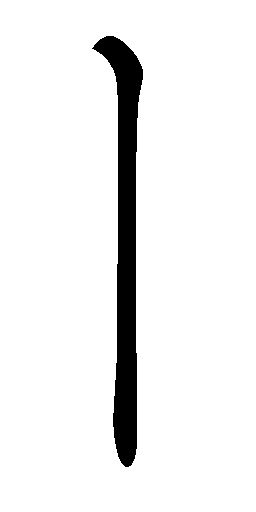
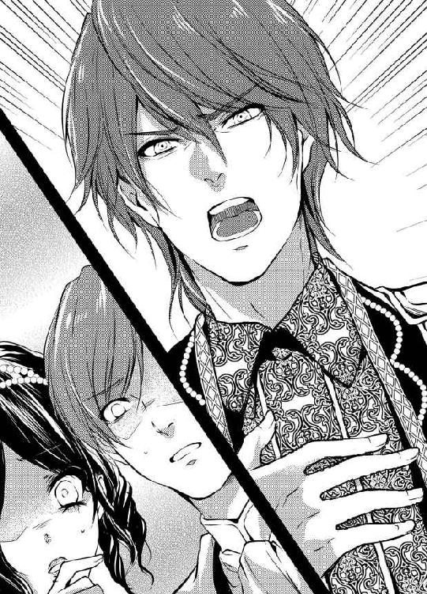

| 人質王女が皇帝陛下といちゃらぶ溺愛婚ですかっ！？ (蜜猫文庫) | |
| 粟生慧 & ゴゴちゃん | |
| 竹書房 (2017) | |
この作品は縦書きでレイアウトされています。
また、ご覧になる機種により、表示の差異が認められることがあります。
一部の漢字が簡略字で表示されていることがあります。
イラスト／ゴゴちゃん
プロローグ
──人質じゃないってどういうことなの？ わたしを愛しているって？
アーシアルーの頭のなかにたくさんの疑問符が浮かんでは消える。
たしかにルーを愛撫している男──ファリエロは「愛している」と言った。それも「人質ではない。そなたは正妃として迎えた」と......。
──まさか、まさか......。
──だったらわたしは彼を信じていいのかしら？ わたしが最初に感じたとおりの方なら？ 様々な思いがルーの胸を甘やかに締め付けてくる。
ファリエロが与えてくる、甘美な未知の感覚にこのまま身を任せてしまいそうだ。
「待って......あ、ぁん。お話を」
そう言っているあいだもファリエロが首筋にカプリと噛み付く。舌が這い、官能が頭をもたげてくる。意識が朦朧とする前に、話をしたかった。
「ん」
首筋を伝う舌の動きに合わせてゾクゾクとする感覚に震える。
セージの息吹がルーの鼻孔をくすぐる。
──なんて素敵な香りなの......。
「愛しているというのは本当ですか？」
とたんにファリエロの顔が真っ赤になる。面白いくらい赤く染まって、ルーは微笑んだ。
彼は顔をくしゃくしゃとしかめて、今までの余裕ぶっていた姿勢を崩し、目を逸らしてぼそっと言う。
「あ、愛している......。そなたをこの腕に抱き寄せたときから......」
見つめ合った瞳と瞳が絡み合う。
もう、自分だけで思い悩むことはなくなったのだ......！
ルーは改めて、ファリエロに向かって両手を伸ばした。彼を抱きしめたくて仕方がない。ファリエロもそれを感じ取ってくれて彼女の背に両腕を回す。
鼻先を突き合わせ、お互いの呼気を感じ取る。
二人はお互いの唇をおそるおそる重ね合わせる。柔らかな感触が唇を通して伝わってくる。
彼のキスが、自分の頑なだった心の扉を開ける鍵のように感じる。その扉は光とともに開いて、暗かった胸のうちにまばゆい閃光を放つ。
──愛とはこういうものを言うのだわ......。
ルーはうっとりとファリエロの口づけを受けながら、感じ取った。
ファリエロの優しい愛撫は頬を撫で、鼻先を通り過ぎ、緩やかに首筋を下っていく。
かすかな甘い感覚に、心を震わせる。
いつの間にかルーの頭はベッドのシーツの上にあった。
ファリエロの両手が胸に添えられ、かき寄せてくる。そうすると慎ましやかな胸は盛り上がりを見せて、まろやかに震える。
先端の淡い色の乳暈に彼の舌先が当てられ、ゆっくりとなぞってはくるくると円を描く。少しずつ頂きを目指し、すっかり立ち上がった乳首の先をくにりとなぶった。
ゾクゾクと背筋に震えが走り、口から変な声が漏れ出てくる。
「ふぁっ、ぁあん」
震えはまるで和毛で肌に触れられたようなくすぐったさを伴っていて、自然と体がよじれる。よじってくすぐったさから逃げようとするけれど、ファリエロの腕がしっかりとホールドしていて抜け出すこともできない。
ピチャピチャと舌先が水音をさせて存分にルーの乳首を味わっている。
震えは次第にじんじんと熱のこもったものに変わっていって、ルーはその変化に戸惑った。何故か下半身がむずむずとしはじめて、内ももをすりあわせてしまう。
「なんだか、体が熱いです......、も、おやめになって......」
堪らなくなってきて、ルーはファリエロに訴えた。
すると、彼がなぜか嬉しそうに微笑み、意地悪く言う。
「ああ、するとそなたは感じているのだな。わたしにこの花の蕾のような場所をねぶられて、体を火照らせている。はじめてだと言うのに......なんと淫らな」
そんなふうに言われルーは頬を上気させて抗う。
「やっ、違います......！ それはファリエロ様が......んぅ」
ファリエロが軽く乳首に歯を当てた。それが鋭い感覚の矢になって、ルーの中心を射抜いた。
「はぁあ！」
のけぞると、その背にファリエロの腕がさらに回り込む。
背を持ち上げられ上体を起こされて、クラクラとする頭を抱えたまま、ルーはぐったりとファリエロの腕のなかに身を委ねる。
「い、今のは......？」
刺激的な快感にまだ胸がじんじんと熱い。
「そなたは感じやすいのだな。初心で青い果実のように固い体だと言うのに、まるでわたしがその実を味わうのを待っていたようだ」
ファリエロの言葉から何となくそれが自分のことを指しているのは理解できるのに、全身から力が抜けてしまって反論できなくなっている。
ファリエロが嬉しそうに含み笑って、さらに乳房を手のひらでかき寄せて親指で固く凝った乳首をこね回した。
「んぅ......、ぁっ」
甘い快感の余韻が残る体にさらなる刺激が与えられて恍惚とした表情でルーは彼を見上げる。
赤い髪が額に汗とともに張り付き、頬がわずかに上気して、自分と同じように興奮しているのがわかる。彼の榛色の瞳がさらに深い色合いを見せて愛情と情欲の混じり合った視線を向けている。その官能的な唇が薄っすらと開き、甘やかな吐息を漏らしている。
──わたしも興奮しているの？ これが一晩中続くというのかしら？
閨でのことなど誰も教えてはくれなかった。だから殿方に愛されるということ、初夜を過ごすということがどういうことなのか、ルーはひとかけらも知らなかった。
──わたし、何かして差し上げなければならないかしら......？
そんなふうに考えて、とろりとした声で囁く。
「ファリエロ様に何かして差し上げられることはございますか......？」
すると、甘やかな顔に満面の笑みがこぼれ、ファリエロがルーに口付けて舌を割り込ませてくる。しばらくキスに没頭したあと、彼が唇を離す。
「何もない。そなたはわたしに愛されていれば良い」
その言葉の通り、彼の愛の紬糸は官能とともにルーを縛り上げて一晩中離さなかった。
第一章
編みかごいっぱいの赤いリンゴを抱えた、金色の癖のある長い髪の少女が、緑の芽吹く坂を下っていく。
「ルー様ぁ、お待ちくださいませ～」
ルーと呼ばれた少女、アーシアルーの後ろから、大きな丸パンの入った編みかごを提げ、スカートの裾を両手でたくし上げて小走りに側仕えのマリーが追ってくる。
ルーは、柔らかな布地で作られた薄桃色のエプロンドレスを心地よい春の風になびかせて、後ろから追ってくる友人に澄み切った緑の瞳を向ける。
太陽の光を浴びて彼女の白い肌が健康的な光を帯びる。頬はリンゴのように赤く、唇は熟れたイチゴのようだ。
子鹿のように大きく丸い瞳が笑みに細められて、息を切らせて追いついたマリーを暖かく見やった。
「ちょっとの坂で息が上がっていては、この鉱山で暮らす領民らしくないわよ」
二人は坂の下にある領民の村里へ向かっている最中なのだ。
領主館の背後の白樺の森に、春らしい若芽に茂る木々の梢が見え、岩に覆われた峰へ続く。領主館の下には緑の芽吹く地面がなだらかに広がっており、その坂の途中に領民の村がこぢんまりと固まっている。緑色の尾根と尾根のあいだにヤギたちが群れをなして放牧されているのが見える。
ブリアン領主国はとても小さな国で、背後の鉱山から産出する宝石と、山間で放牧しているヤギの乳から作られるチーズで生活が成り立っている。
領主館と小さな村がルーの世界で、領主の一人娘であるルーはそこでのびのびと育った。
──いずれ政略結婚をするけれど、我が国の領民との温かな触れ合いを心に刻んでもらいたい。
ルーの父母はそう考えて、彼女が村人と仲良くするのを微笑ましく見守っていた。
早朝からルーは友人のマリーと一緒に村にある愛護院に向かっている。
「早く早く！ マリー、子供たちが待ってるわ！」
ルーの手には大きな編みかごが提げられていて、なかには真っ赤に熟したリンゴが入っている。領主館の中庭のリンゴ畑で採れたリンゴでとても甘くて美味しい。
マリーももちろん手ぶらじゃない。編みかごには領主館の厨房で焼いたホカホカの大きな丸いパンが詰め込まれている。
村の狭い通りを二人が行き過ぎていくと、通りに出ている村人が気さくに声をかけてくる。
「姫様、おはようございます！」
「おはよう、みなさん！」
ルーの足取りは軽い。編みかごから溢れるくらい詰め込んだ美味しい食事を、子供たちに届けることで頭がいっぱいだ。
──きっと甘～いリンゴにみんな夢中になるわ。
ルーもそのリンゴが食べたくて仕方ない。朝早く起きてコックと一緒に大きな丸パンを焼いて、ヤギのチーズを切り出した。赤く熟れたリンゴを手ずからもぎ取ってかごのなかへ入れていった。朝ごはんを食べないでいたからお腹が空きすぎて、鳴りそうになるのをこらえるので精一杯だ。後ろからついてくる友人も同じ思いらしく、早く食べたくて仕方ないという顔つきだ。
それでも毎朝、ルーの日課に律儀に付き合ってくれているから、いつも感謝している。
マリーは、ルーがまだ五歳になったばかりの頃に、男爵家から話し相手兼側仕えとしてやって来た。一つだけ年上だが、いつも主人に振り回されている心配性の少女で、主人が伸びやかで自由な子鹿だとすると、マリーは慎重で心配性な子ウサギといった感じだ。
坂を下りきったところに教会を兼ねた愛護院が建っている。
白い漆喰の壁が朝日に照らされて眩しく照り輝いている。素朴で、質素な印象の建物だ。愛護院の回りには畑と家畜小屋がある。
──急がなくっちゃ。みんなお腹を空かせているわ！
ルーは少し早足で愛護院への階段を下りきった。
最初にルーに気づいた子供が駆け寄って来て、教会の外でお手伝いをしている仲間に声をかける。
そうすると、それを合図に教会のなかからも子供たちが出て来て、笑顔でルーを取り囲む。
「姫様！ 神父様はお部屋で書き物をしていらっしゃるよ！」
老神父は子供たちの授業に使う読み書きの教科書を紙に書き綴っていた。手作りの教科書を愛護院の子供たちに与えて、ルーと一緒に読み書きを教えている。
百年もの月日、いろいろな人間が触れて光沢を持った栗の木の扉を、ルーは軽くノックする。
「神父様、朝ご飯のお時間ですよ。子供たちがお腹を空かせて待ってますよ」
「おお、もうそんな時間かね。急がねば子供たちの背中とお腹がくっついてしまうな」
老神父のひょうきんな表情を見てルーの心は楽しくなる。今日一日が素晴らしいものになるような気がするから。
食堂へ入ると、朝ご飯の準備を終えたマリーと子供たちが席について待っていた。早く早くとお腹を空かせた子供たちが神父を急かす。
老神父が席について両手を組み合わせて朝のお祈りを唱えた。子供たちのお腹がグーとなる音が聞こえてくる。老神父はそれが分かっているから早めにお祈りを切り上げた。
夜明けに起きてパンを焼いたルーのお腹もキュルリと鳴いた。少し顔を赤らめて、誰にも聞かれていないか確かめたあと、テーブルの上からパンを取り小さくちぎってチーズと一緒に口に入れる。老神父が話しかけてきた。
「そう言えば、姫様。今日はセルヴィーニ皇国から訪問者があるそうですな」
「ええ、聞いてるわ」
すると、老神父は真面目な表情で言った。
「姫様のご将来に関してのことですかなぁ」
ルーは緊張に唇をきゅっと引き結んだ。
「将来......。まさか、いつもの通り交易に関することよ」
すぐに老神父の言葉を打ち消したけれど、自分の将来──結婚のことはあまり考えたくなかった。
食事を終えると空になった編みかごを持って、二人は領主館の裏にある畑へ急いだ。
食事を終えた館の使用人が畑の野菜の収穫をするからだ。
ルーも土でスカートが汚れるのも厭わず、跪いてキャベツを刈り取っていく。
収穫を終え、料理人に野菜を渡すと、やっとマリーが人心地ついたようにため息をついて、言った。
「さぁさ、ドレスの土を払って着替えをいたしましょう。いつまでも領主の姫君が村娘のような姿をしていてはいけません」
ルーは自分のドレスを見下ろす。裾を摘んで見せて言った。
「そう？ わたしはすごく気に入ってるわ。館できれいな服を着て取り繕っているだけなんて、身震いしちゃう」
朝食の時に老神父と話したことが思い出される。
結婚できる年を迎えて、日に日にブリアン領主国から出ていくことがルーには辛い。
できたら一生この小さな母国から出て行きたくない。でもそれは無理な相談なのだろう。
これ以上深く考え始めると止まらなくなってしまいそうだから、ルーは頭を振ってセルヴィーニ皇国のことを考えまいとした。
「午後、お散歩をしていいかしら？」
「ルー様の毎日の日課をお止めいたしませんわ」
マリーがウィンクしてみせた。
館の一室、南向きの部屋がルーの居室だ。
内装は華美ではなく、代々受け継がれてきたタペストリーが寒さよけのために石壁を覆うように下げられている。萌黄色の春色を基調にして、赤い木の実や柊、ツタや小鳥や様々な花模様が織り込まれている。
ベッドの四本の支柱にはカーテンが巻きつけられている。ベッドの脇には小テーブルがあって、読みかけの本と野原から摘んできた花をいけた花瓶が置かれている。
二人は窓際に面した机に向かって腰掛け、書き取りを終えた紙を裏返してまとめていた。
「午後になったらセルヴィーニ皇国の使者の方がいらっしゃるのよね......」
ルーの言葉にマリーが答える。
「ルー様のお嫁入りの話かもしれませんわね」
「皇帝陛下に嫁入りとなったら、妾妃ということになるのかしら？ 妾妃でもこの国を守ってもらえるかしら？ それでこの国の平和が保たれるならいいんだけど......」
ルーが暗い声でつぶやくと友人が励ましてくれる。
「暗い顔をなさらないで。どんな国のお姫様でもルー様の愛らしさには誰も叶いませんわよ」
友人の言葉に力なく微笑み返す。
──愛のある結婚ならどんなにいいかしら......。
そんなことを考えてしまうけれど、くよくよとしてられないと暗い考えは振り払った。
語学の勉強も宮廷マナーも貴婦人が身につける様々なことなど、自分にとって苦痛じゃない。領民が戦争で苦しめられる姿を見ることが何よりも苦痛だ。だからこの小国の後ろ盾に大国がついてくれることほど心強いことはない。
◇
昼食の席で父がルーに話しかけてきた。
「今日はわしだけでなく、そなたにも同席してもらいたいのだ」
「わたしにも？」
セルヴィーニ皇国の使者がわざわざ姫の同席を願うなど、話は一つしかないかもしれない。
そう考えただけで、心が少しだけざわついた。
「わかりましたわ、お父様」
暗くなりがちの心をなんとか明るくして無理やり微笑みを作った。
昼食を終え城から出ると、ルーは空が真っ青に広がっているのを仰いで見る。空には雲一つない。小鳥がピチュルルルと鳴きながら、空を横切っていく。
先ほどまでの暗い気分も吹き飛んで、マリーと連れ立って坂の下の村まで歩いて行く。
「こんにちは！」
「これは、姫様。ごきげんよう」
行商人がルーの笑顔につられて笑う。
彼女の無邪気な微笑みには魔法があるかのように、どんなに頑なな心の持ち主でもつられて笑ってしまう。
二人は礼拝堂へ向かう。
そっと扉を開くと、すでにみんな着席していて、老神父が発音する単語を手元に持った黒板に石灰石で書き付けている。
もちろん勉学の費用はブリアン領主が援助する。学業を修め帰国して領館に出仕することになる。そのまま大国で教師になる子もいる。
いつか国の力になりますと、愛護院から卒院した子供たちは固く約束してくれる。そういった子たちが、いつしかブリアン領主国のために働いてくれることになるのだ。
午後も半ばになり、なんだか表が騒がしくなった。今まで黒板の白い文字を読んであげていたルーや、子供たちが顔を上げる。
老神父も本を朗読するのをやめて、そっと古ぼけた木戸の窓を開けてみた。その顔が見る間に驚愕に変わる。
「ルー様、セルヴィーニ皇国の使者様がいらっしゃったようですぞ」
もうそんな時間なの？ とルーは急いで窓に寄っていった。
村の狭い入口に大勢の馬に乗った騎士が立ち往生をしている。鎖帷子が物騒にガチャガチャと擦れ合う音が響いて聞こえてくる。
木の柵で囲われた村への入り口から無理矢理村に入ろうとしているらしく、入口近くに繋がれているロバや放し飼いの鶏が驚いている。村人も怯えてしまって通りの端によって様子をうかがっている。
ルーは慌てて表に飛び出して、彼らに向かって駆けていった。
馬にまたがった騎士はみんな銀色の鎖帷子を身に着けていて、傾いた太陽の日差しを受けて、帷子がギラギラと輝いている。
馬も重厚な装備をしていて、今すぐ戦える準備が整っているように見えた。
馬にまたがった彼らは少なくとも十人はいた。
兜を付けておらず、鎖帷子の上からチュニックを着ている。そのチュニックにはセルヴィーニ皇国の紋章が縫い付けてあった。
双頭の鷹に剣に巻き付くドラゴンと盾を支え王冠を掲げる獅子。金と赤と黒が紋章の色だ。
威圧的で恐ろしく見える紋章と、大きな馬やそれにまたがった騎士たちに圧倒されて、領民はおののいて言葉を失っている。
その紋章を掲げているのは先頭の赤毛の男だった。まるで赤毛の狼のように男らしい人だ。
彼は興奮している青毛の馬を御しながら、入り口で立ち往生している後ろの騎士たちを止めているように見えるが、背後にいる茶髪の青年騎士は無理にでも村を通ろうと声高に主張している。
赤毛の男はその青年騎士を押しとどめ、他の騎士たちにも落ち着くように命じている。
「しばし待て。村人が怯えている」
しかし茶髪の青年騎士は言うことを聞かない様子だ。
ルーは先頭の馬のすぐ側まで寄っていき、馬の鼻先に立った。彼らに向かって必死に声をかける。
「セルヴィーニ皇国の使者様、脇道がありますから、お一人ずつそちらに回って、館へ上がってきてください。お願いします」
ルーの声は恐怖で震えている。けれど、そうしなかったら彼らが領民に何をするかわからない。
「何を生意気なことを......、我々に指図する気なのか！」
茶髪の騎士が怒気をはらんだ声音を上げると、赤毛の騎士が諌めるように彼の胸元に手を当てた。他の騎士にも落ちつくように声をかけている。
「みな、村の者に手荒なことをするな。怖がらせてはならぬ」
彼には他の騎士にはない威厳があった。もしかするとこの赤毛の騎士が使者なのかもしれない。
ふいに彼が馬からひらりと下り立った。そして、思いもよらないことにまるで貴婦人に対してするようにルーに跪いて許しを請うた。
「勇気ある娘よ、騒がせてすまぬ」
赤毛の騎士がそう言って瞳をルーに向ける。そのときまるで二人の間に電撃が落ちたような気がした。視線が絡み合ったまま離れない。
彼の表情が僅かに変わったが、それは微妙な差でわかりにくかった。それなのにルーには彼が自分と同じ衝撃を感じたことがわかった。
時が止まってしまったような、全てがゆっくりと動いているような感覚に襲われる。
この世界にたった二人きりになってしまったように音という音が遠ざかっていく。
彼の瞳が日差しにきらめいて明るく輝き、ルーの視線を惹きつけてやまない。ハッと息を呑むほど彼は凛々しくて、胸の中でいくつもまりが弾むようなそわそわとした気分になる。
赤毛の騎士も同じように目を見開き、それから細めてルーの顔に見入っている。
印象的な榛色の瞳、生真面目そうな顔つきは整ってはいるが、傍目からは不機嫌そうにも見えてしまう。でも、その口から出る口調は穏やかで丁寧だった。
そんな本物の騎士らしい態度に、ルーは心を奪われて見つめてしまう。その視線と彼の視線がもつれ合って、言葉にできないような感情が湧き上がった。
ルーが突然の思いに戸惑って顔を赤らめていると、赤毛の騎士が落ち着いた様子で尋ねてくる。
「道があるならそちらに回ろう。娘よ、その道はどちらにあるのだ」
「しかし、この村娘......」
茶髪の騎士がなおも言い続けると、赤毛の騎士は首を振る。そして、丁寧な言葉づかいでもう一度尋ねてきた。
「許せ、娘。道があるならば教えてくれぬか」
茶髪の騎士は彼を見て、感じ入ったように輝く瞳で言った。
「お許しになるのですか、さすがお心が広い......！」
ルーは入口を出て、木立の脇にある踏み慣らされた広い道を指す。
「あちらが脇道です。このままつづら折りの道を登っていったら館につきます」
彼女は脇道のほうまで歩いていって説明した。
赤毛の騎士はしばらく物言いたげにルーを見ていたが、馬にまたがると
「みな、脇道を行くぞ」
と馬を返して、村の入口から去っていった。
赤毛の騎士は何度もルーを振り返りながら、坂道を登っていった。彼女は、その後ろ姿を言葉もなくただ呆然と眺めて見送っていた。
村娘......そう言われたことを思い出して、改めてルーは自分の姿を思い出す。
彼女が村へ散歩に出るときは綿や麻の簡素なドレスを身につける。今はベージュと黄色い布地を合わせたスカート姿だ。
髪も下ろして簡素な服を着たルーはこの村に馴染んで、本当に領民の一人にしか見えなかったんだろう。
──村娘だと思ったら領主の娘だったなんて、きっと驚くに違いないわ！
クスクスと笑うルーをマリーが心配そうに見つめる。
「ルー様、恐ろしくてどうにかなってしまわれたのですか？」
「いいえ、マリー。あの殿方が、わたしのことを最後まで村人だと思いこんでくれたから助かったわ」
ルーも騎士たちが怖かったけれど、領民を怖がらせたくない気持ちが先立ってしまった。このことは後悔していない。
赤毛の騎士はとてもいい印象だったが、茶髪の青年騎士が去っていってホッとした。
──怖い方かと思ったけれど、なんだか優しかった。あの方が使者様ならいいな......
あんなに重装備の騎士を見るのははじめてだった。きっと、鎖帷子はとても重かったに違いない。
それなのに彼は自分から馬を下りて、恋愛小説のなかの騎士のようにルーに跪き、しかも謝罪してくれたのだ。
鎖帷子が重たいから、あの赤毛の騎士も部下らしき騎士たちには馬から下りろと言わなかったのかもしれない。
脇道を教えたときもすごく丁寧に接してくれた......とルーは一人ごちる。
「ルー様、セルヴィーニ皇国の方々がいらっしゃいましたから、館へ戻りましょう」
マリーに促されて、急いで村の通りを上っていった。
ルーたちが館に戻ると父領主は訪問したセルヴィーニ皇国の客と話をしているらしく、挨拶は後回しにされた。
ルーは自分が持っているなかで一番きれいなドレスを身に着けた。シルクのタフタがふんだんにあしらわれた、青いドレスだ。透けるような絹のシフォンを肩と腰回りにまとっている。
青いドレスに合わせてサファイアの首飾りを身につける。石は仲のいい老職人が丹念にカッティングしたものだ。忘れな草をイメージして花の形にあしらって、首飾りにしてくれた。
身につけているものすべて、ルーのために領民が作ってくれたものだ。誰がなんと言おうと最高級のものだと自信を持っている。
髪を飾るブルートパーズの髪留めも花の形をしている。金色の髪に咲いた可憐な花に見える。
マリーもブルネットの髪をまとめて、黄色いドレスの色に合わせた宝石を身に着けている。
ルーは父に呼ばれるまで、母の部屋で待つことになった。
今夜はゆっくりと晩餐を開いて、明日は狩りをして殿方は楽しむらしい。ルーも遠乗りのために馬に乗って父に付き添わないといけないことになっていた。王子がいない分、姫であるルーがその役目をしなければならない。
小姓とともにマリーを伴って高台から飲み物を携えて待機していることになっている。狩りで疲れた殿方をねぎらうためだ。男ばかりの中に花を添える役目とも言える。
その夜は近隣の貴族や裕福な領民を招待して舞踏会を催すことにもなっている。
今のところ、ブリアン領主国はセルヴィーニ皇国と宝石の交易を通して同盟らしきものを結んでいる。交易を主にしたこの国は軍事力の面では到底皇国にかなわないため、半ば宝石と引き換えに隣国から守ってもらっているという関係なのだ。
だから、皇国に強くでられたら逆らえない。それでもなんとか宝石の掘削権だけは死守している。それを引き渡してしまったら、独立した国ではなくなって属国となってしまう。
今回わざわざセルヴィーニ皇国がブリアン領主国を訪れたのは、交易以外の理由があるかもしれない。しかも、今日訪問してきたのは、いつもの外交官や国お抱えの商人ではなくて鎖帷子に身を包んだ騎士たちだ。これがどういうことなのか、母やルーにもわからない。
仰々しく接待するからには、今回のセルヴィーニ皇国の使者の目的は他にあるんじゃないかとルーには思え、どうにも落ち着かなくて、そわそわと窓の外を見たり手元を見たりと、じっとしていられない。
「ルー、落ち着いて。セルヴィーニ皇国の騎士がやってきたからと言って、戦争が起こるわけではないわ」
娘と同じ金髪のおっとりとした母が諭すように言い聞かせる。
そばに座っているマリーも、安心させるようにルーの手を握りしめてくれる。
「そうですわ、お妃様のおっしゃるとおりです。たまたま、皇帝陛下の伝言を携えてこられただけかもしれませんし」
ルーが危惧しているのは、もしかして皇国近隣国の戦争にブリアン領主国が巻き込まれるんじゃないかということだった。母が慌ててないのだから大丈夫だと自分に言い聞かせるけれど、どうしても安心できない。
「でも、お父様と使者の方の話し合い、とても長引いているわ......。よくないことが起きそうで怖い......」
ルーは不安をそっと口にする。こんなことを言ったらそれを考えさせまいとしている母やマリーの気持ちを踏みにじってしまうかもしれないけれど、心配で仕方ない。
とても笑顔でいられない。どっちにしろこんな時に笑っていたら不謹慎だとルーは思った。
お父様は宰相と一緒にセルヴィーニ皇国の使者と対等に話し合いができているだろうか......。国を守り抜いているブリアン領主の力を信じていないわけじゃない。
何が話し合われているのかわからないから不安になるんだと、ルーは思った。
「使者の方とお話しをしたいなら、今晩か明日にでもできるから、今不安になることはないでしょう？」
母が娘を安心させるように言う。大きな緑の目を潤ませて、ルーは母を見つめ返す。
「さぁ、こちらに来て」
母に促されて、その隣に座る。
「ルー、お父様がお心の強い方というのは知っているでしょう？ いくら相手が大国のセルヴィーニ皇国でも、理不尽な要求を飲んだりはしないし、戦争になりそうになってもなんとか回避するでしょう。それを信じましょう」
「えぇ、お母様」
「そうですわ、ルー様。そんな顔はルー様には似合いません」
そのうちに、妃の部屋の扉がノックされて父が入ってきた。
「いやはや......」
そういって、父は近くのソファーに座り込む。小姓が薄めたワインを持ってきて、父に手渡した。それをごくごくと飲み干す。
「あなた、それでお話し合いは？」
母が心配そうに尋ねた。
「うむ。宝石の交易料と、国境の兵数の見直しになった」
「まぁ、減らすというのですか？」
母が驚いた。
「宝石の交易数を増やせば、減らさないということにはなったが......」
それでも、大国の出してきた条件は、今までよりも厳しくなるということだった。
「できれば、明日と明後日の接待で、心変わりしてくれることを祈るしかあるまいなぁ」
あの赤毛の騎士なら、少しはブリアン領主国の状況を鑑みてくれるかもしれないと、ルーは淡い期待を抱いてしまう。
そっと椅子から立ち上がり、父の足元に跪いた。
「わたしも努力してみます、お父様。使者様のご機嫌を取ってみせますわ」
「ありがとう、ルー。ただ、あの方はただの使者ではないのだ」
白髪交じりの髪を撫でつけて父は力ない笑顔で愛娘を見つめた。
「どういうことですの？」
ねぎらうように、無骨でいて温かい父の両手をルーは手に取り握りしめる。
「今回の使者様は皇帝陛下なのだ。今回は宰相も伴って、我が国の視察に来られたのだ。使者と名乗っているのは館のものを怖がらせたりしないためなのだよ」
「え......？」
──セルヴィーニ皇国の皇帝陛下がいらっしゃってるの!? あの騎士様のどなたが皇帝陛下なの......？
ルーはあんまり驚いてポカーンと口を開けたまま口が利けなかった。
「だから、今回はとても重要な接待なのだ」
「わ、わかりましたわ」
相手が皇帝陛下なら、精一杯ご機嫌をとるしかないのだろう。自分にできることは全部やってみようと、決心する。
「明日は、狩りをする予定になっている。皇帝陛下をねぎらってくれるな？」
「はい、お父様」
もしも自分が王子なら、皇帝陛下の相手をしてご機嫌を取ることもできるのにと、ルーは残念に思った。
この催しには国の未来がかかっている。だから精一杯のお世辞や接待をしなければ......。
ちょっと想像できないけれど、皇帝陛下が喜ぶようなこともしないといけないかもしれない。
──少しは我慢しなくちゃいけないこともあるかも。でもお父様の力にならないと......。
ルーはギュッと父の両手を握りしめる。父は安心させるように笑顔で応えてくれた。
食堂に入ると、ルーは上座に座る赤毛の騎士を目にしてハッとした。村の入口で自分に跪いて謝罪してくれた騎士だ。
──この方が......。
ルーは立ち止まったまま、まさか彼が皇帝陛下なのだろうかと足がすくんだ。
──皇帝陛下にあんなことをさせてしまった......。どうしよう......。咎められたら言い訳ができないわ。
ルーはドキドキしながら席についた。横に座るマリーも顔が青い。きっとマリーも気づいてしまったに違いない。
晩餐が始まるとすぐにルーは父に呼ばれた。
父の側に立ち、赤毛の男に軽く膝を曲げてお辞儀をした。
彼もルーに気づいたようで目を見開いて見つめてきた。
「そなたはあの時の......？」
彼の言葉に顔が赤らむ。村娘の姿で馬の前に立ちはだかったのをどう思われたかと思うと、冷や汗も出てくる。
「はい......、先ほどは愛護院で子供たちのお世話をしておりました......」
父も驚いているようで娘を見ていたが気を取り直して言った。
「もうお会いになっておいでだったのですな。わたしの娘のアーシアルーでございます。自慢の娘でございます」
父が褒めるのを聞いて、少し恥ずかしいとルーはまた顔を赤らめる。父はいつもこんなふうに自分を客人に自慢するのだ。
「愛らしい姫君だ。わたしの名はファリエロと申す」
──ファリエロ様というお名前なのね......。
「ファリエロ様、どうぞ、ごゆっくりブリアン領主国を堪能されてください」
ルーは余計なことを言わないように言葉少なめに挨拶をした。もう一度、彼に目をやる。馬上を見上げるだけではわからなかった印象的な面立ちに思わずうっとりとしてしまう。
ファリエロは燃えるような赤い髪に、気難しい表情を浮かべている。眉間にはシワが寄っていて、なんだか不機嫌そうにも見える。
それでいて目鼻立ちは端正で、輪郭は男らしい。表情とあいまって生真面目な性格に思えた。
ファリエロは榛色の瞳をルーに向けて、失礼なくらいジロジロと見つめてきた。きっと、彼女があの村娘だとまだ驚いているに違いない。
──わたしの無礼な態度を許してくれるかしら......？
ルーが心配していると、彼が話しかけてきた。
「姫君、明日の狩りには同行されると聞いたが？」
「はい。お邪魔にならないようにいたします」
「狩りにも少しは花がなければな」
父の話では宰相だという茶髪の騎士、アルヴァノが不躾に言った。
「アルヴァノ、口が過ぎるぞ」
ファリエロが注意すると、ぶつくさ言いながらも黙る。
失礼な物言いにかちんと来たけれど、ルーは感情を抑えてニッコリと微笑んだ。
「お邪魔にならないよう精一杯のおもてなしをいたしますわ」
そう言って、二人の前から下がろうとした途中で父に念を押される。
「明日も失礼のないようにお願いするよ」
「はい、お父様」
騎士たちは無骨な印象だったがみんな礼儀正しく、宰相はファリエロには忠実な様子だった。ファリエロは晩餐の間も始終無言だが紳士な態度で、その代わり宰相がペラペラと話をしていた。
晩餐は無事にすみ、疲れきった騎士たちは案内された部屋に下がっていった。
──明日は頑張らなくちゃ......。
そんなふうに考えながら、ルーは寝室に戻った。
山間の天気は不安定だ。
夜中のあいだに雷が響くくらいの大雨になり、翌朝を迎えた。
みんなが着替えて朝食を終えるころには雨はやんでいたけれど、地面はぬかるんでいた。館の前庭には馬や騎士たちが狩りの準備を整えて出立を待っている。
ルーもマリーをつれて、準備されたポニーに乗った。馬の数が足りなかったのだ。山育ちだけあって乗馬も得意だが、そういう顔はしないでおいた。
でなければ、「女が偉そうに」とアルヴァノが嗅ぎつけて、ルーに嫌味を言いそうな気がしたからだ。
一番遅くファリエロとアルヴァノがやってきて乗馬する。
「このような天候なのに姫もくるのか」
ファリエロがルーを見て言った。
「足手まといになるというのに」
アルヴァノが憎まれ口を叩いた。
──王子がいない分、わたしが頑張らないと。
アルヴァノの嫌味など聞こえなかったかのように、ファリエロに微笑んでみせる。
気のせいか、ファリエロが顔を赤らめて顔をそらしたように思えた。理由がわからないのでそれ以上は考えないでおく。どうせ、腹が立つかどうかしたのだろうと思う。
ファリエロの性格は生真面目で気難しそうだから、もしかすると宰相とそう変わらない気持ちなのかもしれない。
ルーは張り切って館の前庭から出発する騎士や男たちの先頭を行き、狩り場への案内をした。男たちが開けた丘に集まると、ルーとマリーは高台へ登っていった。
飲み物とマントを背負った年若い小姓を先頭にして、ポクポクとポニーが岩場の多い坂道をゆっくりと登っていく。うっすらと緑が覗く泥のなかをピチャピチャと泥を跳ね上げてポニーが坂を進む。
「お召し物が汚れてしまいますわね」
マリーが心配そうに主人の足元を見た。たしかに綿のドレスの裾に泥がはねている。しかし、そんなことを気にしていれば、あの口さがない宰相に嫌味を言われるだけだと、ルーは強がった。
「いいのよ。だから汚れてもいいドレスを着たのだもの。それに乗馬のときはいつもこの服じゃない」
「こんな天気の日に、何もルー様まで狩りに同行されなくても......」
「それを言っちゃだめよ。王子がいないんですもの。これも姫の仕事のうちよ」
馬に乗った男たちがギャロップでどんどん森の中へと入っていく。
ポニーに横乗りした二人はのんびり坂を登っていき、白樺の木立を縫って進んだ。
慣れた場所なので、灌木などの障害物がない道を選んで森のなかを通っていく。春のうちに茂った小枝を、小姓がなたで刈り取って道を作ってくれる。
「川沿いは避けましょう」
ルーの言葉にマリーも頷いた。
大雨の翌日は川が氾濫している。たとえそれが日頃小さな川だとしても、水かさが増して三倍くらいにはなってしまうのだ。
足元の落葉が敷き詰められた茶色い地面も、水にふやけてグチュグチュと音を立てる。
「あともう少ししたら高台ですわ」
坂を登りきった所にわざと開けた場所を設け、そこだけ低木以外は伐ってある。そこから狩りの様子を見渡せるようになっていた。二人はその空き地を目指していた。
遠くの森のなかから、「ピー！」という甲高い口笛の音が聞こえてくる。獲物を見つけた合図だ。
「急がないと」
ルーは小姓とマリーに言うと、ポニーの足を速めた。
木立を抜けると、目指した高台に出た。そこから谷あいの開けた草原をルーが見下ろすと、何頭もの馬が草地を駆けている。
小姓がぬかるんだ地面に敷布を置き、その上に折りたたみの椅子を据えた。
二人はそれに座り、草原とまだ曇っている空を見渡した。
背後は心もとない崖になっていて、雨で土が流されて木々の根がむき出しになっていた。
「マントは持ってきていて？」
マリーが小姓に訊ねた。
「はい」
小姓が背からマントを巻いたものをおろした。雨が降ったときのために大きめの防寒防水の革でできたマントだ。
「雨がまた降りそうだわ」
ルーは空を見ながら言った。
「でもマントがあるから大丈夫ね」
眼下の猟場で駆ける馬に乗る騎士たちを見やる。
ファリエロの馬にはセルヴィーニ皇国の紋章が縫いとられた布が垂れているので、ルーにはひと目でわかった。
──あれはファリエロ様に手柄を立てやすいように父が準備したのね。
獲物を彼の前に出るように仕向けるという意図なのだろう。そうすれば他のものが獲物を横取りする心配もない。
獲物が先頭を走るファリエロの前に出た。
気のせいか、さっきから彼の顔がルーのほうを向いているように見える。
──位置を確認しているだけだわ。
そうこうするうちにポツポツと雨が頭上に降ってきた。
「ルー様にマントを」
小姓にマリーが命じる。
小姓はすぐさまマントを広げて、二人にかけた。小姓も外套のフードを頭にかぶる。
暗い色のウールのマントも寒さや水を避けてくれる。
春の日でも、雨が降れば空気はすぐに冷え切る。二人は体を寄せ合って男たちを見守った。
急な雨にもめげず、狩りは続いていた。
雨はだんだんひどくなっていく。
「ルー様、雨がひどくなってまいりましたから、高台から下りられたほうが」
地面を流れる泥の量も多くなってきている。長革靴はすでに泥で真っ黒だ。
「そうね......。これ以上いても足手まといになるかもしれないし」
マリーの提案に賛成して敷布や椅子を片付けると、ルーはポニーに乗った。
丘を走る馬の群れが森の中へと獲物を追って入っていく。
「あちらには川があるわ......」
──あのままだと獲物に気を取られて川が氾濫しているのに気が付かないかもしれない。
気がついたらいいけどと思いながら、友人に声をかける。
「この雨だから着た道は危ないかもしれないわね。できるだけ平坦な道を選びましょう」
ルーの言うとおり、小姓は平坦な道に向かって、ポニーの手綱を引いた。
遠雷が丘の向こうから響いてくる。
──もう少ししたら雷がここにも届くかもしれない......。
山間の雷は平地のそれとは比べ物にならない。丘や平地に雷が落ちることなどよくあることだ。だから稲妻が走るような日は、山間に住む人々はわざと森の中を歩く。そうすれば雷に打たれる心配がない。
──でもファリエロ様はそんなこと知らないかもしれないわ......。知らせてあげたほうがいいかしら。
「ねぇ、ここはわたしたちだけで戻るから、あなたはファリエロ様たちに狩りをやめて森に入るように伝えてくれるかしら？」
「姫様を置いてですか？」
小姓が心配そうにマリーを見やる。マリーも眉根を寄せてルーを見た。
「わたしたちのほうがこのあたりのことに詳しいわ。それともみんなでファリエロ様の傍まで行ってお知らせしたほうがいいかしら......？ どう思う、マリー」
「わたしは森のなかに入ったほうが安全かと思います。このまま高台にいるよりましですわ」
それで三人は森へ向かった。
雷がどんどん近づいてくる。轟きが激しくなってくる。
バシャバシャと音を立てて、ポニーが山を流れ落ちる水をかき分けて前へ進む。
木立のお陰で降りかかる雨は防げているけれど、流れてくる水までは避けられない。
気温はどんどんと下がってくる。吐く息も白くなってきた。
肩から羽織ったマントを引き寄せて、ルーは雨を耐え忍んだ。雨音に混じって、激しい水飛沫の音と馬のいななきが聞こえてくるけれど、どちらのほうからかわからない。
稲光が梢の隙間から差し込んできて、一瞬あたりがひらめき、また暗くなる。稲妻が空を走り、轟音がするたびにポニーが落ち着かなげに足踏みしては立ち止まった。
「川が近いみたいだわ。ファリエロ様もお近くにいらっしゃるみたいね」
ルーは後ろにいるマリーに声をかけた。
「どちら側でしょう......？ わたしにはわかりかねます」
マリーが不安そうに答えた。
小姓がマリーの視線を受けて頷いたあと、周囲を見渡して行けそうな場所を選んだ。
馬のいななきがすぐ近くまで聞こえてきた。雷に慣れていない馬が怯えているようだ。
「早くしないと......、あなた先に行って警告してあげて」
それに答えて、小姓が先へと進んでいった。
「このまま森の奥に入るとわたしたちも川に巻き込まれるかもしれないから、森の端に出ない？」
ルーは不安になってマリーに話しかけた。
「そうですわね......。川の方向に進むよりましですわ」
マリーがそう言いかけた時、すぐ目の前で豪雷があたりを包み、バシーンという木が弾ける音が響いた。
それは一瞬のことだった。
ルーが乗ったポニーが狂乱して制御できないくらいの速さで走り出した。マリーのポニーも驚いて奔走してきたけれど、マリーは地面に放り出されてしまった。
「ルー様！ だれか、ルー様が!!」
ルーは気が動転して声が出ないまま、必死でポニーの首筋にすがりついた。ポニーはますます速度を上げて森の中を突き進んでいき、避難できた小姓やファリエロたちをあっという間に追い抜いた。小姓が驚いて叫んだ。
「ルー姫様!?」
森中に轟雷は鳴り響き、梢から落ちてくる雨粒に雹がまじり始めた。
──このままだと川に......！
そう思ったとき、激しい水音が襲ってきた。
まず大きな灌木が水飛沫とともにポニーめがけて流れてきた。氾濫した川の濁流が、とうとう水かさを増して水際から溢れ、灌木を押し流してきたのだ。
あっという間にその灌木がルーのポニーにぶつかった。
「きゃあ」
ポニーが倒れ、水のなかで激しく暴れてルーは体を起こそうとした。そのはずみにポニーから放り出され、気がつくと膝までの濁流に足を取られて水の流れに押し流されていた。
「誰か......！」
助けを呼ぼうとしたけれど、羽織った重たい革のマントが体に巻き付いて、身動きが取れなくなってしまった。そのまま濁流に揉まれていく。
何度も泥水がルーの顔にかかる。
──もうだめかも......。
もがくのをやめて濁流に身を任せようとした時、マントが掴まれて誰かに濁流から引き上げられた。
重力を感じて目を開けると、いつの間にか誰かの腕のなかにいた。
「大丈夫か」
ぶっきらぼうな声が聞こえた。濁流をかき分ける馬が坂を駆け上がり、木立に向かっている。
ルーは自分を濁流から助け出した男を見ようと顔を見上げた。
真っ赤な髪が視野に入る。顔まではわからないが、すぐにその男がファリエロだとわかった。
「ありがとうございます......、ファリエロ様......」
寒さに震える声でやっとの思いで礼を言った。
「無茶をするな」
まるで叱るように声が続ける。
こうなったのは無鉄砲のせいではないから、少しムッとなって言い返した。
「申し訳ありません、でも、まさかポニーが......」
すると、ルーの体に別のマントが押し付けられた。濡れたマントの内側は体温で温められていて寒さが和らいだ。
有無を言わさない様子で、そのままルーの体はファリエロのマントにくるまれた。
その腕の力強さに、思わずハッとする。この川の濁流から自分の身をすくい上げてくれたファリエロの勇敢な心を感じ取った。しっかと抱きとめられて、濡れそぼった体に、彼の体温が伝わってくる。
ファリエロの胸まで引き上げられて抱きしめられ、胸元に頭が押し付けられる。耳が彼の胸に当たりドクドクとその鼓動が速まっているのを感じる。
それは濁流の激しさに立ち向かっているためなのか、それとも別の理由からなのか、ルーにはわからない。それを聞いていると、自分と彼が一体になったように感じられて安心できた。
「大丈夫か......？」
ファリエロの心配そうな声が聞こえてくる。かすかな意識のなかでそれを耳にしたけれど、疲れと恐れが意識を覆う。その恐れをまるで拭ってくれるような彼の胸の温もりに救われる。
馬は足場の悪い崖を駆け上がり、草地に出た。
「ルー様！」
マリーの声がする。
ルーは温かさでウトウトしかけていたが、その声に顔を上げる。駆け寄ってくるマリーの姿が見えた。
「これだから女が狩り場に来るのは反対だったのだ」
アルヴァノの声も聞こえてくる。
「ファリエロ様がすぐに気が付かねば......」
口やかましい宰相の声を聞きながら意識が遠のいていく。
優しく温かな手のひらが頬を包むのを感じながら、目を閉じた。
ルーが目覚めると、肌触りのいい馴染みのあるシーツの香りと暖かな掛布の感触があった。
──これは夢かしら......？
しかし、身じろぎした時にマリーの声が聞こえて、これが夢でないとわかった。
「ルー様！ お気づきになりましたか？」
ルーは上体を起こしマリーを見やった。マリーは春なのに暖炉に火をおこして、その前の揺り椅子に腰掛けていた。
でもルーが目覚めたとわかったとたん、跳ねるように立ち上がって駆け寄ってきた。
「わたし......」
マリーは満面の笑みを浮かべてルーの手を握りしめる。
「ファリエロ様が助けてくださったのです」
──やっぱりあれは夢ではなかったのだわ。
ルーは頬に当てられた温もりを思い出し、手を頬に当てた。
なぜあのタイミングでファリエロが自分を助けることができたのかはわからなかったけれど、あの時の男性は彼で間違いないのだ。
「お礼を言わなくちゃ」
「でも、まだお体が」
マリーの心配をよそに、ルーは自分の体に温もりが戻ってきていて、すごくお腹が空いているのに気づいた。
「大丈夫よ。お腹が空くくらいだもの」
「ルー様ったら」
マリーが安心したように呆れ顔になる。
「それに今夜は舞踏会でしょ？ 起きて着替えないと時間が迫っているのじゃないかしら」
ルーは窓の外を見て言った。
雨はまだやまないが、狩り場で降っていたほどではない。夕方にはきっと夕日が差すくらいに晴れてくるだろう。
ルーが目覚めたことはすぐに父母に知らされた。
やってきた父に、
「無理せずともよい」
と言われたけれど、ルーはドレスに着替えて父に微笑んで答えた。
「もう大丈夫です、お父様。それよりもファリエロ様や小姓は大丈夫でしたか？ 村に水は流れ込みませんでしたか？」
「それは大丈夫だよ。ファリエロ様も小姓も村も無事だ。それにしてもファリエロ様にはなんと言って礼をせねばならんだろうか」
「お礼はわたしが直接申し上げますわ。助けていただいた身ですから......」
体調もすっかり良くなって、その晩の舞踏会にルーもマリーとともに出ることになり、ファリエロの相手を務めることになった。
領主国の領館といえども、とても小さな国の館だから、大国の舞踏会に比べたら規模はまるで違う。それでも、ありったけの飾り付けと料理とで父は大国の使者をもてなした。
舞踏会に招かれたのは、村のなかでも裕福なものや若い女性たち、事前に使者が来ることを知っていた領主国の名士たちや貴族。
そんななかで、ひときわ豪奢な衣装に身を包んだ使者や騎士たちは注目の的だった。
ファリエロは赤毛に黒色のジュストコールに単ズボンに長革靴。金色の飾緒が肩と胸で揺れている。
アルヴァノも茶髪に映える黄色の上着に赤の飾緒を付けている。
他の騎士たちはみんな青のジュストコールだ。二人が特殊な立場だとひと目でわかる。
厳しいファリエロよりも、どちらかと言うと優雅な雰囲気の漂うアルヴァノに女性たちは寄っていって話しかけている。
そんなアルヴァノはなぜかマリーにご執心のようだ。マリーは適当にあしらっているように見える。それがルーには面白く思えた。
──マリーは可愛いものね。
ファリエロはさっきから領主国の重鎮と言葉少なめに会話を楽しんでいるように見える。それでも話しているのは重鎮の臣下ばかりだ。
父もそのなかにまじり、彼と言葉少なめに会話をかわしている。ルーの姿に気づくと父が手招いて呼んだ。
ルーは静々と寄っていき、ファリエロにお辞儀をする。
「今朝は本当にありがとうございました」
礼を言ったのにファリエロは低い声で「うむ」と言ったきりだ。もっと恩に着せるのかと思っていただけに拍子抜けした。
「いずれ、ファリエロ様には娘を助けていただいた礼をいたします」
「うむ......」
どことなくファリエロの頬が赤いように見えたけれど、見間違いかもしれないと思い、ルーは二人のそばに佇んでいた。
父が大国の様子や天候などのありきたりな話を始めた時、楽曲が変わった。すると、それまで言葉少なめに返事をして父と話していたファリエロが、「失礼」と断ってから、ルーに向かって手のひらを差し出した。
──なんだろう？ なぜわたしに手を向けてるのだろう？
ルーが首を傾げていると、彼は戸惑うように彼女に向かって言った。
「姫君、踊ってはいただけぬか」
やっと、その差し出された手がルーに対してのダンスの申し出だとわかった。
「はい、喜んで」
ルーはできるだけ優雅にファリエロの手を取る。
温かく大きな手のなかに彼女の小さな手はすっぽりと収まる。思わずあの時自分を抱きとめた腕を思い出した。
ルーは寡黙なファリエロの顔を見て思った。あのときは必死に息を継いでいたから気が付かなかったけれど、考えてみれば彼は実直なだけなのかもしれない。ただ不器用なだけで。
ファリエロはまるで壊れ物を扱うような手つきでルーを抱き取り、曲に乗せてステップを踏んだ。真面目で厳しい顔つきや態度とは打って変わって、そのダンスは表情豊かで彼女を力強くリードした。
それはまるで雲の上を跳ねて渡るような軽やかさだった。
音楽が心地よい風のように二人のあいだをすり抜けていく。
慌てることも間違えることもないダンスはなんだか彼の性格を表しているようで、自然と安心して体を任せられた。
ファリエロを見上げると煌めく榛色の瞳が自分を見下ろしている。心なしかその表情は和らいでいるように思えた。
いつも気難しい面に春のようなほのかに温かな感情が浮かんでいて、茶色の瞳には愛情の色が滲んでいる。
──こんな優しい表情をするなんて......。
彼の腕のなかで踊っていると、不思議と安心感に心が満たされて何もかも委ねてしまいそうになる。
背中を支えるファリエロの手に少しだけ力がこもり、自然にルーを抱き寄せた。厚い胸が鼻先に当たり、体温と清々しい香りを感じ取る。
何もかもが夢のようにふわふわとしていて、ルーは彼にもたれかかってダンスをした。
──もしかして、この方はわたしに好意がおありなのかしら......？ 助けてくださったとき、たまたまわたしが流されていることに気づいたのだとしても、とても不思議な気がするわ。
ファリエロとの心の通い合いを偶然のものにしたくない一心で、ルーはいつの間にかそんなふうに考えてしまっていた。
彼も自分と同じ好意を抱いてくれているように感じて、彼女はそっと頭を彼の胸に寄せた。するとますますファリエロの手に力が込められた。
音楽が色づき、春の色のように二人の周りに広がる。微笑みを浮かべて彼を見上げると、彼もほのかに笑んでいて、言葉なんかいらないように感じた。
──本当に彼もわたしと同じ気持ちかもしれない。
助けられた時に感じた安堵がルーの胸いっぱいに広がり、甘酸っぱい思いにはにかんでしまう。胸がドキドキとして、ファリエロと見つめ合うたびに鼓動が早くなる。
「大丈夫か？」
テンポが自然と速くなってしまったのをファリエロが心配しているように感じられて、安心させようとルーは答える。
「大丈夫です......」
頭に触れる彼の鼓動も早まっている気がする。ときめきが二人を結びつけて解けない花の輪のように思えた。
添えられていただけの指が自然と絡み合い、愛撫するようにファリエロの指が甲を撫でる。それが心地よくて、二人を隔てる肌が溶け合っていくようだった。
夢のように時は過ぎていき、曲調は何度も変わっていった。それすら二人は気にすることもなく二人だけの空間でロンドを舞っていた。
二曲ほど踊り、肩で息をしているとファリエロが踊るのをやめて、ルーを父の元へ連れて行った。
「ブリアン領主......！」
彼が父に向かって息せき切ったような声をかけた。父はその声音の強さに驚いたようだった。
その頃にはアルヴァノも父のもとに来ていて、ファリエロの言葉を一緒に聞いていた。
「先ほどの礼だが」
ファリエロがなんとなく勢い込むように続ける。
「はい、なんでございましょう」
父が緊張した面持ちで、ファリエロを見上げた。とんでもない要求をされるのではないかと一瞬思ったようで、少し額が汗ばんでいるのが見て取れた。
ルーもいきなりファリエロが変わってしまったのが不思議でならない。さっきまで穏やかにダンスをしていたのに、何が彼を怒らせたのだろうか。不安が心のなかで渦巻いた。
「礼はアーシアルー姫を望む」
「なんですと」
ルーは言葉にならないため息をついた。まさか、あの時間を一緒に過ごした時に感じた淡い思いを彼も感じ取っていてくれたなんて！ そんなふうに思えて笑みが浮かぶ。
それなのに父は蒼白になって彼を見上げている。一人アルヴァノだけが喜々として言った。
「なるほど、同盟の人質としてアーシアルー姫を我が国に迎えるということですね！」
「ひ、人質」
父が驚きの声を上げる。
「アルヴァノ......何を言うのだ」
ファリエロが怪訝そうに宰相を見やる。
「人質」という言葉にルーは息を呑んだ。一瞬浮かんだ笑みもあっという間に凍りついた。
──人質ですって？
「そうではない......」
ファリエロが何か言いかけたが、それを遮るようにアルヴァノがなおも口を開いた。
「ファリエロ様の妾妃として迎え入れるとすれば、そちらにも良い取引となるぞ」
ファリエロが驚いたように目を見開いたけれど、ルーは気づかなかった。
「人質ですと......ッ」
この言葉にも父は卒倒しそうな声を上げた。嫁ぐにしても父としては人質という言葉のほうが衝撃だったのだろう。
「姫以外でしたらいくらでも......鉱山の掘削権も惜しみませんぞ」
父がルーが今まで見たこともない勢いで言い募った。
「お父様......！」
──そんなことを言ってしまったら国を乗っ取られてしまうわ......！
いくら政治に疎いルーでも父が言わんとしていることはわかる。
「それもいいな」
宰相が顎を撫でる。それをファリエロが押しとどめてもう一度言った。
「いや、わたしは彼女しか求めぬ」
ファリエロは断固とした様子でそれだけ口にした。
彼に求められて先ほどまで天国にいるような気分だったのに、人質という一言がルーを地の底に叩き落とした。
ルーはわなわなと震えたが、すぐに思い直した。
──ここでいやだと言ってしまったら、何をされるかわからない......。
先ほどまで感じていたファリエロへの好意はあっという間に消し飛んだ。ルーの体が震えているのを見て取ったマリーが背中に手を当ててくれた。
それで少しは落ち着いて、ルーはファリエロを見つめることができた。彼がルーを見下ろす。その表情が少し歪んでいるのが嘲笑のようにも見えて、負けまいとルーは見つめ返した。
「さすがはファリエロ様」
宰相だけが上機嫌で笑っていた。
先ほどまでの心地いいダンスが台無しになったようにルーには思えた。
父母は顔を青くして娘を見つめている。
──わたしが返事をしなくてはならないのだわ......。
観念して、ルーはファリエロに向かって答えた。
「わかりました。ファリエロ様についていきますわ」
すると、あからさまにファリエロがホッとした顔つきになった。
──一体、何なの？
ルーはファリエロの様子を訝しんだけれど、あいだに宰相が割り込んできたせいで、彼をよく観察できないまま、母に連れられて広間をあとにした。
「まさか、あなたを人質に望まれるとは思わなかったわ......」
がっくりと肩を落とす母に、ルーは慰めの言葉をかける。
「わたしも驚いたけど、妾妃としてなら大国とは争いは起きないわよね？ 大国に守ってもらえるのよね？」
母が顔を上げる。
「妾妃でも様々だと思うと心配で......。寵妃になるのなら待遇も違うでしょうけど」
「いいのよ、お母様、いずれはどこか強い国に嫁ぐ事になっていたわけだし......、それが妾妃だっただけよ」
──政略結婚をすることになるとは思ってたけど......ファリエロ様の妾妃になるなんて......
複雑な思いで、ルーはあの時のことを思い出す。ダンスをしたとき、助けられたとき......たしかに自分はときめきを感じ、ファリエロの胸にやすらぎを覚えた。だから彼の妾妃になるのはむしろ嬉しい。ただまさか人質として求められるとは思わなかっただけだ。
──ファリエロ様はわたしをあの奔流から助け出してくれた......。
──溺れているわたしを見つけ出して......。
──高台にいたときに目があったのは気のせいじゃなかったんだわ。
そう思えば、少しはルーの気持ちも安らいでくる。そして、気持ちを奮い立たせて明るい顔で母に言った。
「安心して、お母様。絶対にファリエロ様のご機嫌を損じたりしないから」
母が心配そうに娘を見つめてからしっかりと抱きしめた。
「ファリエロ様なら良くしてくださると信じているわ」
彼はいくらでも気に入った女性を妾妃にできるだろう。飽きれば妾妃でも捨ててしまうかもしれない。ましてや人質だから国自体に旨味を感じられなければ、この国の命運に関わる。
──彼が誠実だって思いたい......。ダンスのときの思いが本物だと信じたい。
「わたしもついていきます」
マリーがルーに向けて力強く言ってくれた。
「ありがとう。でも、それだとあなたは一生結婚できなくなるわ」
友人が微笑んだ。
「わたしの主人はルー様唯一人ですから。あなたをお守りするのがわたしの役目です」
その言葉に、それまで我慢していた涙がこぼれてしまう。ルーは母とマリーを抱きしめて少しだけ涙を流した。ほんの少しなら、これが最後なら、と言い聞かせて。
翌日から二、三日、ファリエロは父と一緒に鉱山へ赴いて宝石の掘削状況や削り出された宝石の加工工程などを見学し何度も会議を開き、報酬に見合った処遇を話し合っていた。
愛護院の子供たちにもう二度とこられなくなることを告げなければならないことがルーの胸を苦しくした。
いつもなら足取りも軽く坂を下るのに、今日は重たい足を引きずるように彼女はマリーと一緒に道を辿った。緑豊かに花咲く野原や青く澄みきった空が、灰色がかって見えるくらいにルーの心は沈んでいる。
今日も無邪気に自分達を歓迎してくれる子供たちの様子を内心嬉しく思いながら、ルーは彼らに言い聞かせた。
「遠くにお嫁に行くのよ。滅多に帰ってこられなくなるわ。だからわたしがいなくなってもみんな神父様の言うことをよく聞いて、たくさん勉強したりお手伝いしたりするのよ？」
子供たちは一様にしょんぼりして俯いた。
それを見ていると、なんだか自分も悲しくなってきて、少しだけ浮かんだ涙を人差し指で拭う。その日一日は心置きなく子供たちと過ごして、国を離れる日のことを忘れるようにした。
夕方になってルーが野の花を両手いっぱいに抱えて館に戻ってくると、珍しくアルヴァノをつれていないファリエロとすれ違った。
「ごきげんよう、ファリエロ様」
自分の方から皇帝陛下という必要はないと思って、いつものように挨拶した。
「待て」
ファリエロがじっとルーを見つめていたかと思うと、花を一輪取りルーの金色の髪に挿した。
思わず、胸がドキッとときめいてしまう。彼の優雅な指先が髪を撫でて離れる。セージの残り香を感じた。
冷たく非情な男だと思い込もうとするのに、彼の榛色の瞳はどこまでも暖かな輝きを秘めている。
──春の陽の光のようだわ......。
そのヘーゼルナッツの実を思わせる色合いが、ルーの緑の瞳の澄み切った若葉の色合いと混じり合うような気持ちにかられる。
──あんなふうに言われなかったら......。
「人質として」という言葉さえなかったら、見つめ合う彼女と彼のあいだに深い意味を感じ取れただろう。
──彼がこんな目をする理由がわからないわ......。
「花が似合う」
その言葉にハッとする。
──なんでこんなに優しい言葉をかけてくれるの？ わたしはただの人質じゃないの？
二人は無言で見つめ合い、なぜか空気が和らいでいくのを感じた。
体を触れ合わせていないだけで、あの時と同じようにダンスをしているような気持ちが沸き上がってくる。
ファリエロの瞳が潤んでいるようにみえる。
──彼も同じ気持ちなのかしら......？
彼女を胸の中に抱きしめてくれた力強さを、もう一度味わいたい。でもためらってしまう。
もし、彼に自分と同じ思いを求めて、また突き放されたらと思うと怖くなってしまった。
──人質のくせにと思われてしまったら......わたし......。
──立ち直れる自信がないわ......。
ファリエロがどうしたいのかわからないまま、ルーはじっと見つめ返していたけれど、やがて彼のほうから無言で目をそらし、そのまま通り過ぎていった。
ルーは彼を思わず振り返った。けれど、彼はすぐに廊下の角を曲がっていってしまい、話しかけることができなかった。
髪を飾る花に触れる。そっと取ってみるとそれは青い花で、舞踏会の時に髪を飾った青い宝石をルーは思い出した。
──まさか。たまたまよ。それに何か意味があってこんなことをしたわけじゃないかもしれないし......。
そう思いながら青い花をそっと髪に挿し直した。
もしも何か意味があるなら、優しい理由ならいいけど、と思った。
──人質なんかじゃなくて、わたし自身に対して寄せる気持ちがあるのなら、あの方を素直に受け入れられるのに。
ルーがぼんやりと考え込んでいたら、背後にいたマリーに声をかけられた。
「どうかなさいましたか？」
ルーはハッとしてマリーを見返した。
「いいえ、なんでもないわ。さ、この花をお父様とお母様の部屋に飾りましょう」
気を取り直して彼女は父母の部屋へいそいだ。
第二章
とうとう出立の日が来て、ルーは荷物をまとめて馬車に積み込んだ。この帰路のない旅に同行するのは側仕えのマリーだけ。親友とも言えるマリーと姉妹のように育ってきたから、離れがたくて、彼女のついてくるという言葉に甘えてしまった。
家族のようなマリーがいてくれてよかった......。ルーは心からそう思って、友人の手を握った。二人で馬車に乗り込もうとすると、何故か馬に騎乗していたファリエロがわざわざ下りてルーのそばに来た。
この国を訪れたときのような鎖帷子は身につけていない。身分を隠すつもりなのか、革のチュニックに白いブラウス、短ズボンという出で立ちに、腰には剣を下げている。
「一緒に馬車に乗ろう」
ムッツリとした顔つきで短い言葉を発したので、彼がルーと馬車に乗りたいのだとわかった。でも彼と二人きりになったとき、彼と何を話せばいいのか、ルーにはわからない。ましてや、自分は人質なのだから......。
そう思うと、ルーの胸がチクリと痛んだ。
川の氾濫で助けられたときに感じた思いと舞踏会での淡い思い......、それはすべて「人質」という言葉で打ち消されてしまう。
──この方は征服者なのだわ。わたしは支配される側の人間。この方の心変わりで、この国の行く末が変わる。その鍵を握っているのは自分......。
そんなふうに考えると、やっぱり彼と一緒に馬車に乗るべきかと迷ってしまって、不安になってくる。
それと同時に、なぜだか彼の姿を見つめていたい気持ちも湧いてくる。
──まるで迷路のようだわ......、自分の気持ちがつかめない。
ところが、アルヴァノが突然大きな声を上げた。
「ああ！ そうですね。妾妃となるのですからご一緒のほうが都合がよろしいですね。これは気がきかないことを......！」
宰相の言葉にルーはキョトンとしてしまう。
「う」
彼は口を真一文字に結んで、頬を染めた。
「それは、ち、違う」
「いえいえ、わたしにはわかっております！ どうぞごゆっくり。マリー嬢はわたしと別の馬車に移りましょう」
マリーまで顔を赤らめているのを見て、ルーには一体これがどういうことなのか、全然状況が呑み込めなかった。
戸惑っていると、ルーの細い腕を温かな大きな手がつかむ。彼が顔を背けたまま、彼女を馬車に引きずり込んだ。
「あ、やだ......」
無理に引き上げられ体をよじったけれど、彼の力にはかなわなくてそのまま馬車の椅子に座らされた。
何かされるのだと思って体を縮こませるが、いつまでたっても何もしてこない。思わず閉じていた目を開けて、彼を見た。
彼は、不機嫌そうに凛々しい眉を寄せ、車窓から外を眺めている。
しばらく朝日の差し込む車窓の外を、眩しそうに目を眇めて彼は見やっていた。
会話もないまま、自分の心臓の音と呼吸音だけが耳に入ってくる。
ルーはチラチラと彼を盗み見る。
朝日に映え、燃え上がる炎のような赤い髪。その髪が額や耳にかかっている。凛々しく太い眉に眇められた切れ長の目。今は太陽の光で薄められた榛色が瞳の奥に宿っている。
まっすぐな鼻筋と官能的な引き結ばれた唇。男らしくそげた頬。何故か赤く染まっているから興奮しているのかもしれない。
ガッシリとした肩と広い胸。厚みがあって抱きしめられたとき耳にした鼓動の速さは忘れられない。
ファリエロの腕の筋肉は鍛えられていて、川で溺れそうになった自分を軽々と片腕で持ち上げてみせた。舞踏会のときは自分の細い腰を引き寄せて、驚くほど軽いステップでダンスをリードしてくれた。
そんな情景が次々と脳裏に浮かんでは、あぶくのように消えていく。
──だめよ。この方とはそんなロマンチックな関係にはなりえないんだから。
なんて悲しい言葉だろう。
そんな関係が甘い胸のときめきを否定してくる。
そのうちに、ガラガラと馬車が動き出した。反対側の窓から外を見やる。館の中庭から父母が自分たちを見送っていた。その姿が見えなくなるまで、窓の外をルーは見ていたけれど、やがて坂を下りはじめて、館自体見えなくなってしまった。
馬車は村の脇の広いつづら折りの坂道を下りていく。山間をゆっくりと下っていくと森に入り、二、三日は森を通ることになる。
山道はガタガタとしてよく揺れた。ルーが激しい揺れに驚いて声を上げると、そのたびに彼が心配そうに声をかけてくる。
「大丈夫か？」
──心配してくれてるの？
「え、ええ。大丈夫ですわ。でも道ががたがたしていますわね」
「柔らかな敷物を持ってこさせよう」
彼が言って、いちいち馬車を停めてクッションを用意させたり、喉が渇いたかと飲み物を用意させたりと、なぜか世話を焼いてくれる。
──どうしてわたしのことをこんなに気遣ってくれるの？
──やっぱりファリエロ様に感じたものは間違ってなかったのかしら？
ファリエロの細やかな気遣いに気持ちが浮き上がったり、かと思えば自分からは話しかけてこない彼に気をもんだりと、馬車に乗っているあいだ中、ルーの気は休まらない。
道行きにある旅籠に泊まれば、必ずと言っていいほど宿の部屋には青い花が飾られている。
──まさか......気のせいよね？
ルーはあの髪に挿してくれた花のことを思い返しては、胸をときめかせる。
街道を抜けると、平野に出た。その平野をさらに一週間横切り、大河を渡った先にセルヴィーニ皇国の都がある。
と言っても、森を抜けた先からすでにセルヴィーニ皇国の国境は越えていて、教えられるまで認識できないだけだ。
圧倒的なその広さに、ルーは驚きを隠せない。小さな山間の国、ブリアン領主国の領土なんか目じゃないくらいだ。
──セルヴィーニ皇国はこんなに大きな国なんだわ......。
それでいて、山間とは違う景色にルーは見とれていた。
見渡す限り小麦畑が続く平野は新緑に輝き、風に吹かれると緑の波が立つ。平坦な道も新鮮だった。何より道自体が整地されていることに驚いた。
──大国の影響力は想像もできないくらいにすごいのね......。
「セルヴィーニ皇国はとっても広いのですね。わたしの国がいくつでも収まってしまいそう」
そう言いながら、ルーはちらりとファリエロを眺める。
「ファリエロ様、あれは羊という生き物ですか？ わたし、ヤギしか見たことがありません。こちらでは馬が畑を耕すのですね。馬は荷車に使う駄馬しか知りませんでした。こちらにはポニーはいるのですか？ あの小さな馬はなんというのですか？」
ルーがいくら話しかけても彼は腕を組み、じっと自分を見つめているだけだ。
彼と目が合いそうになって、さっとルーは目をそらした。
──どんな話をしてもずっとこんな感じで......。わたしといてもつまらないのかしら？
かと思えば、会話の続かない質問を彼からされる。
「珍しいか」
今だってそうだ。多分窓の外の光景のことを彼は言いたいのだろう。
「はい」
それっきり彼から何も言わないけれど、出立したばかりの時に少しだけ長い会話を交わした。
「青い花が好きか？」
髪に挿してくれた青い花のことを思い出してルーは頷いた。
「はい、好きです」
「そなたに似合っている」
「ありがとうございます......」
たったそれだけだったけれど、ルーの胸が激しく鼓動を打つ。あのときのことが頭に残っていて離れない。
自分が持っていた花束から青い花を選んで髪に挿してくれただけなのに。その眼差しがとても暖かなものだったことを思い出すと、ドキドキとルーの胸が早鐘のように打つ。
だけど、目の前の彼は黙ってじっとルーを見つめるだけ見たあと、赤くなって顔を背けてしまうというのを繰り返している。
ごくたまに、彼から話しかけてくれたかと思えば、「晴れているな」とか「曇りだしたな」とか「眩しい」とか「暑い」とか。本当にそれしかしゃべらない。
甘い低音の声はいつまでも聞いていたいほど素敵なのに、彼は一言しか話さないので、その美声を聞き続けるのはかなわないことが、ルーには残念でならない。
もっと話を続けたいと思って、ルーはいろいろな質問をしてみる。
「ファリエロ様にはご兄弟はいらっしゃるんですか？」
「ああ......」
「兄君ですか？ 妹君ですか？」
「弟だ」
「まぁ、おいくつ離れておられるんですか？」
「五歳だ」
単語以外返してこないことのほうが多いけれど、それでも彼の声を聞いていられることがルーにとって嬉しい。
「お名前はなんとおっしゃるのですか？」
「アルヴァノだ」
──え？ アルヴァノ様はファリエロ様の弟君なの？
「宰相のアルヴァノ様ですか？」
「そうだ」
「存じませんでした......」
それっきり会話が尽きてしまう。
──わたし何かよくないことを聞いてしまったのかしら......。
彼との会話が途切れるたびに不安になって、ルーは彼をじっと窺い見てしまう。
そのたびに彼は顔を赤らめて額を拭っているし、熱でもあるのかと疑ってしまう。あんまり心配になって二、三度、旅の途中、「お熱がおありではないですか？」と尋ねてみたけれど、
「気にするな」と断られてしまった。
そんなふうにして馬車に揺られて時間を過ごしたわけだが、最初、ルーが心配したふらちなこともどんなことも起こらなかったのだけは安心できた。
旅籠について馬車から降りると、すぐにアルヴァノが寄ってきて、何事かファリエロに話し始めた。
話し合う二人にルーは目をやる。兄と弟なのだろうけれど、大きな狼のようなファリエロに、子犬のようなアルヴァノがまとわりついているような感じに見えて仕方ない。
そんなことを考えてしまうくらい、アルヴァノは宿につくとファリエロから離れようとしない。
──お二人はとても仲のいいご兄弟なのね......。だから、ファリエロ様はアルヴァノ様の言うことに耳を傾けることが多いんだわ。
アルヴァノが色々と話しかけると、そのたびに律儀にファリエロが返事をしているところを見ていると、ルーにはそう思えて仕方ない。
途中で休憩して食事を摂ったときも、料理が美味しければそのたびに感嘆してみせるアルヴァノに、ファリエロが「うむ」と答えているのを見るとなんだか微笑ましかった。
弟に対しても言葉少なめなのだから、ルーとの会話が続かないのも頷ける。
──あの方と会話が弾むなら、もっと楽しいのに......。
ルーはふうと深いため息をつく。長いこと馬車に揺られていると体の節々が痛くなる。宿につくと別の意味でほっとする。
ファリエロはルーが馬車に乗ったり降りたりするたびに御者の代わりに手を貸してくれる。そのたびに温かく大きな手につかまるのが少し嬉しかったりする。
──これでしばらく彼と離れてしまうのね......。たった一晩だけど、やっぱり寂しいわ。
二人きりの時間が宿について中断されるのが惜しい。彼も同じ気持ちだといいのにと思ってしまうほどだ。
ルーとマリーは与えられた部屋に向かい、まず体を清めたあと、食事のために服を着替えた。旅路に用意したドレスなので晩餐用の豪華なドレスではなかったが、それでも可愛らしい花柄のものを身につける。
「ファリエロ様に気に入られるようなものがよろしいでしょうか？」
心配そうにマリーが尋ねてくる。ずっと主人とファリエロが二人きりなのが気がかりのようだった。
「馬車では何もないの。それどころか、あの方は一言もしゃべらないし、喋ったと思っても天気の話を一言呟くだけ。あとはずっとわたしを睨んでいるか、外を見ているの。わたしといても退屈なのかもしれないわ」
「まぁ、そのわりにはよく馬車を停めて飲み物を用意させたり休憩したりするではないですか」
ルーの言葉にマリーも驚いた様子だった。きっと二人の間で何事か起こっていると思っていたようだった。
「それを聞いて安心いたしましたわ」
マリーが胸に手を当てて安堵のため息をついているのを見ると、ルーまでホッとしてきた。
「それよりも、あなたはアルヴァノ様と同じ馬車に乗っているんでしょう？ 何もないの？ 何を話したりしているの？」
すると、友人の頬が真っ赤になって、あたふたとし始める。
「まだまだ旅は長いですから、宿ではごゆっくりなさってください」
──マリーこそなんだかおかしいわ。
不思議に思いながらルーは返事をする。
「そうするわ」
部屋にやってきた宿の使用人から、食事の用意ができたと言われて、マリーと一緒に食堂に行くものと思っていると、マリーが残念そうに言った。
「どうやらわたしは騎士様たちと食事をとるようです。ルー様はファリエロ様方とお食事をなさってください」
それを聞いて、ルーはすっかりしょげかえった。友人と引き離されるのはさすがに寂しい。
使用人に案内されてルーが食堂に赴くと、すでにファリエロは席についていた。その右隣には当然のようにアルヴァノがいる。
ルーの姿をみとめたファリエロがすっくと立ち上がり、自分の左側の席を無言で勧めた。
彼の前に立ち、勧められる席に座るべきかどうかルーは考え込んだ。
とうとうしびれを切らした彼が、強い語調で命じる。
「ここに」
すると、それを聞いた宰相が同じように席を立ち、テーブルの端を指差して言う。
「ファリエロ様、いくら馬車でご一緒になっておられても節度を保たねば」
その言葉にルーは頬がカッと熱くなるのを感じた。
──わたしたち、何もしてないのにっ。
すると応酬するようにファリエロが弟に言った。
「マリー嬢はどうしてここにいないのだ？」
アルヴァノの頬が面白いくらいに赤らむ。
「か、彼女は関係ありませんッ」
結局、ファリエロは不機嫌そうに席に着いた。
ルーはと言えば腹立たしげに宰相が示した席に腰掛ける。
それをファリエロが見つめてくる。何度も弟のほうを見やって、迷った様子で考え込んだあと、口を開いた。
「やはり、ここに座るのだ」
「ファリエロ様!?」
アルヴァノの言葉を最後まで待たず、彼はつかつかとルーのもとにやってくると、その手を取った。
彼にぐいと引き上げられてルーは席を立つ。驚いているあいだに連れていかれて左隣の席に座らされた。
アルヴァノが苦虫を噛み潰したような表情を浮かべる。
「皇妃候補はいらっしゃるのですから、お忘れなく」
アルヴァノは兄にそう言って、給仕にワインを持ってくるように命じて、食事を始めさせた。
「この羊肉は最高ですね。柔らかくて。やはりセルヴィーニの羊肉はどこよりも美味しい」
アルヴァノが美味しそうに食事をする姿を見て、美味しいご飯にありついて喜んでいる子犬を連想してしまう。反対にファリエロは黙々と肉を口に運び、無言で食べ続けているが、やっぱり美味しいと思っているのか何度もおかわりをしている。
──わたしはあんなに入らないわ......。
ルーが呆れていると、アルヴァノがまるで今思いついたように口を開く。
「アーシアルー姫一人ではつまらぬでしょう。今度からはマリー嬢もご一緒に食卓につくのはいかがでしょうか」
「いいのではないか」
その一言で、次からはマリーも一緒に食事をすることになって、アルヴァノに心のなかで感謝してしまうほどだった。
──それにしても皇妃候補の方が国で待っておられるのに、妾妃なんかつれて帰ったりして問題ないのかしら......？
食事をしながら、ルーは自分の考えで勝手に心が暗くなってくる。
考え始めると、セルヴィーニ皇国にいるという皇妃候補の存在に胸が潰されて、給仕された食事も喉を通らなくなる。
それを心配そうな目つきで眺めるファリエロの眼差しが気になって仕方なかったが、食事を終えるとアルヴァノに追い立てられるように食堂から出されてしまった。
部屋に戻り、マリーと二人で夜着の準備をした。
「今日のお料理も美味しかったですわね」
マリーがどことなく楽しそうに尋ねてくるけれど、皇妃候補のことを聞いて気持ちが落ち込んだなどと相談して変に心配させたくない。ただでさえマリーは一日中自分と引き離されているから気が気じゃないはずだし......。
「マリーはなんだか楽しそうね。何かいいことでもあったの？」
毎日宿について顔を合わせるたびに、マリーの様子がどんどん明るくなっていくのが、ルーには反対に気になって仕方ない。
「いえ、なにも」
珍しく友人は言葉短くそう言って、顔を赤くした。
「そう......、明日もあることだし寝ましょう」
梳ってもらった髪を結ってルーは夜着に袖を通す。マリーは隣室の自分の部屋に下がった。
本当だったら今日あったことを洗いざらいマリーに聞いてもらいたい気分なのだけれど、いつも疲れのほうが先に立ってしまって、眠くて仕方なくなってくる。
泥のように眠ってしまって、楽しいことだけを考えてそれを夢に見たいと思う。
──そうじゃないと、ファリエロ様のことで心が乱れてしかたないわ......。
二人きりの馬車でなんだかんだいって紳士だった彼、ルーの手を引いて無理に隣に座らせた彼、それなのになんだかルーを睨みつけるように見つめる彼、何かと気遣ってくれる彼、アルヴァノの言うことを否定しない彼。
すべて同じファリエロなのだが、それが余計にルーの心を混乱させる。
二人きりになったらもっと無遠慮に接してくるかと思っていたのに、彼の態度はルーを戸惑わせるだけだった。
──一体、ファリエロ様はわたしをどう思っていらっしゃるのかしら......？
──少しでも好きだと思ってくれてるの？
──わたしは......彼が好き......。
少しだけ自分の思いが彼に通じたらいいのに......とルーは切ない思いに胸を締め付けられた。
心を千々に乱れさせながらベッドに潜り込む。意外に柔らかなベッドは、疲れた体をいとも簡単に眠りの縁へと誘った。
そうやってウトウトとまどろんでいると、コンコンコンコンと規則的な音が聞こえてきた。耳障りな音に目を開けて、ルーは暗闇のなかで辺りを見渡す。
一瞬、故郷の自分の部屋だと勘違いして枕元の燭台を探してしまったが、ルーの指先に当たったのは安価なろうそく立てだった。急いで火をつけると、扉がしつこく叩かれている。
何事かとベッドから下りてドアに寄っていった。
「マリー？」
でも、マリーなら隣の部屋で寝ている。ノックされているのは廊下側のドアだ。ノックの主はルーが声をかけたとたんに叩くのをやめた。
しばらく静かだったが、やがて低い声がドアの向こうから聞こえた。
「アーシアルー姫」
その声にルーは心当たりがあった。ファリエロだ。よく通る低い声は馬車のなかで何度も聞いた。その声が初めてルーの名を呼んだのだ。心臓が飛び跳ねるように鼓動を打つ。
「は、はい......、こんな夜分にいかがなされたのでしょうか？」
「渡したいものがある......」
──渡したいもの？
何を渡したいのだろうか......？ 渡すならこんな夜更けじゃなくて、昼間や食事の時でも良いのにとルーは訝しんだ。
怪訝に思ってルーが黙っていると、低音の美声がなおも続ける。
「急いで届けさせたのだ......。すぐに見せようと思って......」
何かを見せたいのだということはわかったけれど、こんな夜に殿方を自分の寝室に招き入れるなど言語道断だとルーは気持ちを引き締める。
「もう夜も遅いですので......、明日の朝、お願いいたします」
──少し冷たかったかしら......。
ルーが心配していると、あからさまにがっかりしたような声で、彼が答える。
「わかった。ドアの前に置いておくから見てくれ」
声がやんでコツコツという足音はドアから遠のいていった。
完全に足音が消えてしまうまでルーはドアの前に佇んでいた。そして、遠くの方でドアが閉まる音を聞くと、そっと自室のドアを開いて辺りを見回す。
別段変わったものはない。
──何を置いたというのかしら？
ふと足元を見ると、花束が置いてあった。仄かな灯火が揺れるろうそくをかざしてみると、それは青い花ばかり集めた花束だった。
随分時間が経ってしまったようで、少し元気がない。
──これは......。
思いもよらない出来事に、ルーの心はときめいた。
「青い花が似合う」
あの言葉が蘇ってくる。
──覚えてくれたのだわ......。あれは気のせいでも何でもなかったのだわ......。
足元の花束を拾い上げて胸に抱きしめた。ふんわりとかぐわしい香りが漂う。
──あの方が何を考えているかはわからないけれど......。
その花束を抱きしめているだけで、ルーの心にはなぜかしら希望が芽生えたのだった。
馬車に乗って十日目。
あれから変化は一切ない。青い花は押し花にして取っておいてある。けれどファリエロはそのことに言及しなかった。
それどころかより一層、ルーの視線を避けるようになってしまったように思えた。
ますます熱っぽい頬をしているし、落ち着かなげに額を拭っているし、ため息をついたり外を眺めたりしているかと思えば、射抜くような眼差しで自分を見つめてくる。
──ちっとも変わらなかった。あの花束はなんだったの？
ルーにはあの花束の意味が汲み取れなくて、彼の態度に戸惑ってばかりいた。
ただ一つ心に灯っている光は、「彼は自分を嫌っているわけではないのだ」ということだ。でもそれは風前の灯でもあった。
いつ消えるかわからないかすかな輝き。空の星の光よりも儚い。
なぜなら彼はあれからますます喋らなくなって、弟のアルヴァノが彼の心を代弁しているかのようにルーに指図して回るからだ。
かろうじて食事の席だけはいまだにファリエロの隣が確保されているけれど、顔を合わせれば、アルヴァノに余計なことを言われてしまう。
馬車の旅程を終え、大河を渡る船に乗って三日。
ようやく、セルヴィーニ皇国の都にたどり着いた。
都には燦然と輝く白い漆喰の家々が立ち並び、青や黄色や赤の色とりどりの鱗屋根が軒を連ね、煌めく太陽の日差しを受けて虹色の光輪を見せている。
大通りには人がごった返し、屋台や市場があちこちで開かれていて、声や音に溢れいい匂いに満ちている。
張り出しのテラスには名前も知らないような花が咲き乱れている。そのかわり立ち木は殆ど見られなかったけれど、時々白い漆喰の影から緑がかすめて見えることもあって、どこかに木があるのだろうなということは感じ取れる。
騎士たちも都に入る前に鎖帷子に着替えた。ファリエロも馬車から降りて、騎乗した。彼を先頭に何台もの荷馬車と馬車が大通りを行き過ぎていくのを人々は道を空けて眺めている。
ファリエロが降りた代わりにマリーが馬車に同乗してくれた。二人で町並みを眺める。時々粗末な服を着た子供たちが目についたのが気を引いた。
「あの子供たちを見た？ やっぱり親御さんがいないのかしら？」
破けて裾の切れた服を着ている不潔な格好をしている子供を、ルーは今まで見たことがなかっただけに、ショックを隠しきれなかった。
しかし、馬車の窓からでは子供たちが消えていった路地裏まで見通すことはできない。そのことがずっとルーの心の片隅から消えないで残った。
やがて建物を見かけなくなり、ようやく木立が姿を現した。森のような雑然としたものではなく、整然として規則正しい。木々が整列するように配置されている。
その木立のあいだから黒い鉄柵が現れた。先が槍のように尖り、返しがついていて、とても鋭そうだ。鉄柵は木立の合間を縫って延々と続いている。
しばらく行くと白い柱が見えて、行く手に柵と同じような黒い鉄の門が立ちふさがっていた。
門は先頭のファリエロの一声で開いた。門前の両脇に鎧を着た男が二人ずつ立って槍を構えている。とても物々しい感じがする。
──セルヴィーニ皇国の都はいつも敵の侵入に脅かされているのかしら......？
穏やかな暮らしが当たり前のブリアン領主国からしたら考えられないほどの剣呑さだ。
門を過ぎたらすぐに館が見えてくると思っていたが、いつまでも整然とした木立ときれいに四角く刈られた低木のブロックが延々と続いている。
窓から身を乗り出すわけにもいかないので、ルーはぼんやりと木々を眺めていた。
マリーとの会話も尽きてしまい、物珍しさにはしゃいでいたのは最初のうちだけだった。
「ブリアン領主国が懐かしいわ......。もうあそこが恋しくてたまらない......」
見渡す限り緑色の草原、谷間の白樺の森、キラキラと木漏れ日に煌めく小川。ヤギたちが岩場を越えて崖の合間に生える草を食べる様子、鉱山から原石を積んだ荷馬車を引く男たちにそれを受け取って加工する村人。小さな畑に実った美味しそうな水気たっぷりの野菜。子供たちとルーしか知らない木の実やベリーの生る茂み。
味気ない風景のなかにそういった懐かしいふるさとを、ルーは脳裏に垣間見る。
いきなり高らかにラッパの音が鳴り響いた。
二人はビクッと体を震えさせて驚き、慌てて窓から外を覗いた。改めて見てみると風景がいつの間にか変わっていた。
広々とした前庭には芝が敷き詰められている。視界に入るのは白亜の壁。その壁が視界の両脇に長く伸びている。壁には彫刻を施された柱が並び、透明な吹きガラスが太陽の光を照り返している。
前庭には馬車寄せがあり、次々と馬がそこへ寄っていき、騎士たちが馬から下りる。小姓らしき少年たちが馬の手綱を引いて、緑色の低木でできた壁の内側へと消えていく。
あまりの手際の良さにルーは驚いてしまう。あっという間に馬は消え、鎖帷子に身を包んだ騎士たちもいなくなった。残されたのは馬車に乗ったルーとマリー、まだ鎖帷子姿のまま佇んでいるファリエロとアルヴァノだけだった。
気づけば衣装や日用品を積んだ荷馬車も消えていた。
ルーが戸惑っているとおもむろに馬車の扉が開かれて、小姓が手を差し出していた。
──降りろというわけね......。
ルーはゆっくりと馬車から降り立つ。マリーもドギマギした様子で自分の後ろに立った。
二人が馬車から降りると、馭者を乗せた馬車がそのまま前庭の端にある道から裏へと消えていった。
──静かだと思ったら芝のせいなのね。
芝はふさふさと足元を覆い、新緑の絨毯のようだ。ルーはその上をそっと歩いてみる。小石が転がる坂道を歩くよりもずっと快適だった。
見たことがないくらいに大きく荘厳な宮殿の扉の前に、ずらりと灰色のジュストコールを着た男たちが並んだ。
「おかえりなさいませ、皇帝陛下。並びに宰相閣下」
灰色の服を着た近習に付き添われて宮殿へ入っていく。
ルーが宮殿に入るとそこはだだっ広いホールになっており、高い天井から大きなクリスタルのシャンデリアが下がっていた。
しかも真っ昼間なのにろうそくには火が灯してある。その灯火がクリスタルに反映してキラキラと輝いて美しい。
広い正面ホールの左右には広い廊下が続いている。正面へ真っすぐ進むとどうやら玉座がある広間に続いているらしい。
ルーが気づくと、何かの書類を載せている台を持った近習が、うやうやしくそれを自分に掲げてきた。
「これは......？」
戸惑って周りを見たら、ファリエロが厳しい顔つきで言った。
「サインを」
「え？」
「すぐにサインをするのだ」
「ファリエロ様の言うとおり、それにサインをするのだ」
アルヴァノまで急かしてくる。ルーは近習から渡された羽ペンで書類にサインをした。書類には「結婚誓約書」と書かれてある。
──これは妾妃になる契約書ね......。着くなり書かされるものなのね......。
妾妃だと結婚式もないのだとがっかりして、ルーは内容をよく読まずにさっさとサインをした。
こんな形で自分の結婚が決まってしまうことに肩を落としていると、何やらファリエロとアルヴァノが言い争っている。耳を澄ますと、ルーのことで揉めているようだ。
「気に入られてるとは言え妾妃をそばに置くなど言語道断ですよ!? 後宮に案内すべきです」
「いや、彼女は皇妃の間に連れていく」
ファリエロが小姓にそう命じている。
「皇妃ですって!? お待ち下さい、皇妃候補にはナタリア公女がいると言うのに!! 兄上！」
宰相が慌てふためいて叫びながら兄の後ろをついていくのが見える。やっぱり大きな狼にまとわりつく子犬にしか見えない。
でも命令を聞かなければいけない相手は一目瞭然だ。小姓はすぐさまルーのもとへ駆け寄り、
「お部屋へご案内いたします」と言って先導した。
マリーを見ると、彼女もくすりと笑っている。
「もしかして、わたしと同じことを考えてるのかしら？」
「どうでしょうか？ わたしの口からは申せません」
マリーがしかつめらしい顔つきで言った。
「ルー様も滅多なことはおっしゃらないほうがよろしいですよ」
「まだ何も言ってないわ」
圧倒されていた気持ちが少しほぐれてきて、ルーは笑顔をマリーに向けた。
そんなふうにクスクス笑いあっている二人に向かって宰相が足早に寄ってくると、ルーに言い放った。
「今はファリエロ様の寵があなたに向いているだけで、皇妃はナタリア公女と決まっているのだからな」
「ナタリア公女様ですか......」
人質が皇妃になれるわけがない。ルーは妙に納得したけれど、それと同時に寵と聞いて、急に胸が早鐘を打ったようになった。
「陛下はそのうちご英断をくだされて、ちゃんと皇妃をお迎えになる」
念を押すように宰相は付け加えてから、踵を返した。
──そんなことわかってるわよ！ わたしが人質なのは痛いほどわかってるんだから......。
ルーは宰相の態度にかちんと来たものの、マリーに心配そうな声をかけられて気を取り直した。
「さぁ、まいりましょう？」
「ええ」
宰相の言っていたことを考えたら、まさにこれから彼が妾妃としてルーを好きにするということだ。
馬車に乗っているあいだ、ぜんぜん気にしてなかった分、妙に意識してしまって顔が赤くなってしまう。
「ルー様、お顔が......。お熱が出てしまわれたのかしら？」
「いいえ、緊張してるだけなの。気にしないでね」
第三章
皇妃の間の前に来ると、ドアが開かれる。
蔦模様の彫刻が施してある白いドアがゆっくりと観音開きに開くと、その向こう側は深紅に統一されていて、ダークチェリーのチーク材で作られた調度品やシルクの布張りされたソファーが目に入った。
とても広くて、館にある自分の部屋よりずっと広かった。
「ここが寝室なの？」
豪華さに圧倒されてルーは吐息を漏らした。
「いえ、こちらは談話の間でございます」
「談話......」
近習が親切に説明していく。
「はい、さようでございます。主に客人と面会するお部屋になっております」
「わたしここで暮らすだけで十分だわ......」
「隣が皇妃のくつろぎの部屋になっております」
「まだお部屋があるの......!?」
ルーが驚いているとドアが開かれる。
「お部屋は前皇妃様が好んでいらっしゃった色で統一されております」
客間が深紅だったのに対して、こちらは可愛らしい色合いで統一されている。サーモンピンクの壁紙と白の調度品。品が良くてたしかにリラックスできるかもしれない。
──わたしはピンクよりもどちらかと言うと萌黄色が好きかしら......。
次に案内された部屋がようやく寝室だった。
こちらもくつろぎの部屋と同様の色で統一されていてロマンチックな感じになっている。
二人は誰の目も気にしなくて良くなったのを確認してから、スツールに腰掛けて深いため息をついた。
「覚悟してきたとは言っても......、気持ちの準備ができてないわ」
「でも、ルー様はファリエロ様からお花を頂いて押し花にして持っていらっしゃるじゃないですか？」
あの夜、ファリエロがくれた花はできるだけたくさん押し花にして本に挟んである。一人きりになるとそれを眺めて、あの時彼が何を考えていたのか、思い返してみるのだ。
「たしかにお花をもらったわ......、でもどうしてお花をくれたのかわからないの」
「きっとルー様を気に入ってくださっての贈り物だと思いますわ」
──マリーは優しいことを言ってくれるけど、人質のわたしに......それもほとんど話したこともない女をすぐに気に入るものなのかしら？
──わたしは......、どうなのかしら......。
ルーは胸に手を当てた。
──わたしは......？
ルーはファリエロに心惹かれた舞踏会の夜のことを思い出す。走馬灯のようにファリエロの姿が脳裏に蘇った。
──わたしは......、彼のことが好き......。
もしも、普通に好かれていたなら、ルーも素直に喜べたかもしれない。
けれど妾妃になってファリエロと甘い日々を過ごしても、皇妃候補がいるのならやっぱり本当の意味で愛されているのとは違うだろう。
──ファリエロ様の気持ちがわたしにあるわけじゃないのだわ......。
でも、落ち込んでいられない、とルーは心のなかで気合を入れる。
「ふぅっ！」
ルーは大きなため息をついたあと、スツールから立ち上がった。
「くよくよしても仕方ないわね。そうね、今、わたしたちにできることはこの部屋を探検することかしら！」
寝室の他に衣裳部屋とバスルームへのドアがあった。部屋が合わせて五つもあるなんて信じられない。
バスルームには立派なバスタブがあった。バスタブは大きく、金色の猫足がついている上、カランまである。試しに金色のカランをひねると蛇口から湯が出てきた。
壁を見てみると大きな鏡が据えられていて、その下に棚がある。並べられてある瓶も可愛らしい形をしていて色がついている。
バスルームと寝室の鍵がかかっているドアがどこに通じているか二人にはわからなかった。
とりあえずくつろぎの部屋に戻ってきてソファーに座った。
「のどが渇いちゃった。マリーも疲れたでしょう？」
「勝手がわかっておりましたらお茶をご用意するのですが......」
二人は談話室に入り、廊下へ続くドアを開こうとした。すると、談話室にあった壁掛けのカーテンの向こうから、エプロンをした女性が出てきた。
どうやら、女性は侍女のようだ。マリーがすぐに訊ねる。
「お茶を飲みたいときはどうすればよろしいのでしょうか？」
侍女が天井から下がっているタッフルのついた銀色の紐を指差した。
「こちらの呼び鈴を鳴らしていただければ、すぐに参ります。この呼び鈴は各部屋にございますから」
二人はびっくりしたまま顔を見合わせた。
──宮殿では、自分で何もしなくていいのね......。
「わたしのお役目がなくなってしまいましたわね」
マリーも驚いたのか、ため息をついている。
「あなたにはわたしのお友達という役目があるのよ？」
ルーは茶目っ気たっぷりにマリーに言った。
「さようでございましたわね」
二人はクスクスと笑いながら、談話室に飾ってある絵画を見て歩いた。そのうち侍女がお茶を持ってきたのでくつろぎの部屋でお茶にした。
やがて侍女がやってきて晩餐の準備があると言ってきた。
「もうそんな時間なの？」
マリーが侍女に持参したドレスの場所を尋ねると、こともなげに使用人が答える。
「衣装部屋にあるものをお召しになってください。それからマリー様もお部屋でお召し物をお着替えください。すぐに使用人に案内させます」
これにはマリーも驚いてしまったようで、目を大きくしている。
「わたしはお仕えしている身ですから着替える必要はございませんわ」
「マリー様はアーシアルー姫様のご友人として迎えておりますので、そのようにするようにアルヴァノ様に言いつけられております」
名残惜しいけれど、しばらくのあいだ二人は別々の部屋で晩餐の準備をすることになった。
衣裳部屋から何着もドレスが出されてきて、寝室に並べられる。それを呆れ果てたようにルーは眺めた。
青を基調にしたものばかりだ。でもデザインはそれぞれ凝らされていて、見ていていつまでも飽きないほどだ。宝石に至っては自分が持ってきた以上に準備されていた。
「どれも青だわ......」
ここまで来るとなんとなくこれらを準備させた人物の予想はつくというものだ。
──本当に青が似合っていると思ってくださっているのね。
呆れるやら感心するやらでルーは腰に両手を当てた。それでも、こんな素敵なドレスを食事のときに着ていくなんてもったいない気がして侍女に言った。
「お願い。わたしのドレスをここに持ってきてもらえるかしら？ せっかくだから自分に似合うドレスを着てファリエロ様を驚かせたいの」
若い侍女は衣裳部屋からドレスを入れた行李を出してくれた。ルーはそこから黄色や裾が浅葱色の春色らしいドレスを出した。
「ファリエロ様には申し訳ないけど、こちらのドレスにするわ」
準備が済む頃になると、マリーが豪華で可愛い桃色のドレスを着てやってきた。
「ルー様、可愛らしくていらっしゃいますわ。あら、ファリエロ様がご用意されたドレスはお召しにならなかったのですか？」
ルーは苦笑して友人にこっそりと言った。
「特別なときに着ようかと思うの。でもこんなふうに飾り立てたのは生まれて初めてよ。なんだか落ち着かないわ......」
「わたしもです」
落ち着かないと言ってもやっぱりきれいにしてもらうのは、ルーだって嫌いなわけじゃない。なんだかくすぐったい感じがするのだ。
例えば、ファリエロから青い花束を渡されたときのような、胸がドキドキして体のなかでまるで蝶が舞うような感触。舞い上がるほどじゃないにしても、ちょっとスキップしてみたくなるそんな感じだ。
「なんだか、ウキウキいたしますわね」
マリーに言われて、まさにそんな気分だと思った。
「そうね、すごくウキウキするわ」
二人は使用人に案内されて晩餐の間に連れていってもらった。
晩餐の間には大勢の人間が集っていた。
ルーとマリーが部屋に入っても誰も気づかなかったのに、ファリエロだけは真っ先に気づいたらしく立ち上がった。
とたんに話し声がやんで、みんなも立ち上がって二人に目をやった。
二人は一瞬胃が縮み上がったけれど、ルーが肝を据えて深くお辞儀すると、マリーもそれに従う。
ファリエロはそんなルーを確認したあと軽く頭を下げて席についた。
──なんだか人質というよりお客様だわ......。
給仕に案内されるままに、なぜか二人はファリエロの隣に座ることになった。
と、視線を感じ、ルーが視線を彷徨わせると、真正面にしかつめらしい顔つきをしたアルヴァノと見知らぬ美しい女性がいた。
黒曜石のような髪と瞳を持った女性で、妖艶な色気を醸し、熱心にファリエロを見つめている。
──どなただろう......？
「アーシアルー姫、こちらはナタリア公女だ」
ファリエロがそっけなく紹介してくれる。
「ナタリア公女、こちらはアーシアルー姫。それと彼女の友人のル・シュール男爵令嬢だ」
「ごきげんよう」
ナタリアが歌うような口ぶりで挨拶を返した。ルーも慌てて挨拶する。
「よろしくお願いします」
ナタリアは気品のある微笑みを浮かべて続ける。
「アーシアルー姫は、ブリアン領主国のご出身だとか？ その宝石もブリアン領主国の出なのかしら」
まるでルーのことを宝石のついでみたいに聞いてくる。
「それは存じ上げません、ナタリア公女」
するとナタリアが手元にある扇を広げてくすりと笑った。
「わたくしの国は神帝皇国の血を継ぐ由緒ある国ですのよ。陛下からお聞きするまでブリアン領主国など聞いたこともありませんでしたわ」
と言いながらも、自分の胸を飾る大きな赤いルビーを扇で指す。
「こちらの素晴らしい宝石の産出国としてでしたら存じておりましたわ」
そういって、何が面白いのかクスクスと笑った。
「ナタリア公女、ブリアン領主国は宝石の名産地ですから、ご存知でいらっしゃるだけでもすばらしい」
アルヴァノがにこやかに笑いながら褒めた。
──たしか、皇妃にはナタリア公女をって言ってた気がするわ......。そしたらどうしてわたしが皇妃の間に案内されたのかしら......。
そのあいだも、なんだか機嫌の悪そうな視線を感じてそちらを見やった。ルーを細くした目でじっと見つめるファリエロがいた。
晩餐が済み、みんなが飲み物を飲みながら食事や最近のことを話し始めた時、今までうんともすんとも言わなかったファリエロが、何か言いたそうにルーに何度も視線をやった。
ルーは気づいていないふりをしていたけれど、彼が口にした言葉で振り向いた。
「気に入らなかったのか」
ファリエロが怒っているかと思って心配したが、そんなふうには見えない。ただ不安そうな視線をルーに向けている。
「え、いえ......」
言いかけた時、アルヴァノが口を挟んだ。
「姫は陛下自ら選ばれたせっかくの贈り物を無下にして......！」
「アルヴァノ」
ファリエロが眉を寄せて弟を制する。
「まぁ！ 陛下のお心を踏みにじられたの!?」
ナタリアまで、大げさな表情で驚いてみせた。
ルーは申し訳なくなって目を伏せて詫びる。
「申し訳ありません......。素晴らしいドレスでしたから、特別なときに着ようかと思って......」
「そのことはもういい」
それから少し間を置いてファリエロが付け足した。
「後ほど話がある」
「今ここではだめなのでしょうか？」
彼と二人きりになるのはためらわれて、思わず聞いた。
「......無理だ」
一体話ってなんだろうとルーは思いながら、彼が先に立つのを待ってから部屋に戻ることにした。
ルーの不安を読み取ったのか、マリーが慰めてくれる。
「ルー様、大丈夫ですわ......。わたしがついておりますから。どんなことがあろうとも離れたりはいたしません」
「ありがとう、マリー」
けれど、部屋で湯浴みを済ませたあと、使用人がやってきてマリーを退室させてしまい、たった一人きりになった。
ベッドに潜り込んでも、いつファリエロが入ってくるかわからなくて、ルーは不安に胸をドキドキさせていた。
──乱暴なことをされたらどうしよう......。
でも、今までのことを振り返っても、ファリエロがルーにひどいことをしたことはない。むしろ、心が浮き立つような思いばかりしてきた。馬車に乗っていたときだってそうだ。
──あの方はあまり話さなかったけれど、いやらしいことを聞いたり嫌味を言ったりしたわけじゃなかったし......。
考えれば考えるほど、ルーがファリエロのことを嫌っていないことに行き着いてしまう。むしろ好きだ。
──くよくよするよりも覚悟を決めておいた方がいいに決まってる。
その時が来るまでと思い、ルーは枕元のチェストの引き出しにしまっておいた本を取り出した。しばらく、その本に挟んだ押し花を見つめていたが、そのうち眠くなってきたので枕元に置いてある燭台の火を吹き消した。
ルーがふと目を覚ますと、コンコンとドアがノックされる音に気がついた。どこから音がしているのだろうと、燭台に火をともしてベッドから下りる。
ドアをノックする音は寝室の鍵がかかっていたドアからだった。
「どなた？」
声をかけると、低い声が返ってきた。
──ファリエロ様だわ。
低く甘い声が何度かルーの名前を呼んだ。
「アーシアルー姫、入ってもよいか？」
ドアに鍵がかかっているのを知っていたので、それを伝えるとファリエロが「知っている。鍵はわたしが持っている」と言った。
──なぜ、ファリエロ様が鍵を持っているのかしら？
不思議に思いながら、ルーはドアに手をかけて少しだけ開けてみた。
ルーが手に持っている燭台とは違う灯りがドアの向こうから漏れている。
「いかがなされたのですか？」
もしかしたらと思いながらもルーは尋ねた。
「そなたとともにいたいと思って......」
──それは要するに、そういうことよね？
思い切ってルーがドアを開けると、なだれ込むようにファリエロがドアから入ってきた。
と思った瞬間、彼がギュッと抱きしめてきた。お互い燭台を持っているから危ないと思ってルーは身をよじって注意した。
「火が......！」
すると、ファリエロがルーの燭台を手に取り吹き消す。
「これで大丈夫だ」
それでも彼の片腕はルーを抱きしめたままだ。ルーはドキマギしながら上ずった声で言った。
「いきなり抱きつかれては困ります」
それなのにファリエロは弾んだ声で答えた。
「これが待っていられようか。そなたをこうして抱きしめられるのだからな」
それを聞いて、ルーは自分の頬がかぁっと熱くなるのを感じた。こんな形で初夜が来るなんて。でも、妾妃になる契約書を書いたんだから当たり前なんだと覚悟を決めた。
そのままファリエロの寝室に連れて行かれたルーは、最初はぎこちなくベッドの上に横たえられ唇に優しい口づけを受けた。ファリエロの唇は温かく、柔らかでなんだかセージの香りがする。
赤く熟れたイチゴのようなルーの唇を官能的な唇が覆い、上唇と下唇を交互に咥えられチュプリと音が鳴る。舌先が唇を舐めてくすぐってくる。そうされると、思わず口を開いてしまう。
ここまできて、それでも緊張していた。
この部屋に入ってまず目にしたのは天蓋付きの立派なベッドだった。それは四人寝てもまだ余るくらい大きく、壁の一つを占領している。きっと後宮の妾妃を何人も侍らすためのものなのだと思う。
薄暗い部屋の様子はよくわからないけれど、幾つかの調度と備えられた美術品がうっすら闇に浮かび上がっている。
仄暗い部屋の明かりは、枕元のチェストに置かれた燭台一本だけだ。
自分は人質として故国のブリアン領主国から連れ去られたのだ。
自分を組み敷いている男──セルヴィーニ皇国の皇帝陛下ファリエロによって......。
──連れ去った、は言いすぎかもしれないけれど、でもそう言ったっていいくらいだわ。
舞踏会の席で思いが通じ合ったと感じただけに、「妾妃として人質にする」という言葉を聞いて暗い井戸の底に突き落とされたような気分になった。だからなおさら釈然としない。
──やっぱり我慢できないわ......。
ルーはそう思って覆いかぶさって口づけしてくるファリエロから逃れようともがいた。このままされるがままになって、処女を捧げた上、人質として一生後宮に閉じ込められるなんて耐えられない。
国のためと思って我慢しようとしたけれど、どうしてもそれが悲しすぎる。
ファリエロのことを好きだと思うから余計、悲しくてたまらなくなってくる。
彼にとって自分は人質にすぎないのに......！
「やっぱりいやです......ッ」
強くファリエロの胸を押し返して、ベッドの端に後ずさった。
「契約書を書いたけど、あなたの妾妃になんてなりたくないです」
すると、ファリエロの表情は面白いくらいに変わった。目を丸くし眉を寄せたかと思ったら、次の瞬間には眉根を下げて暗く陰らせる。
「妾妃ではない」
ファリエロがボソリと低い声を放った。
「妾妃じゃなかったらわたしはあなたのなんなのでしょうか」
ルーは負けじと言い募った。
「ファリエロ様が人質にすると言ってわたしをセルヴィーニ皇国までつれてきたのでしょう？」
「しかし、そなたを人質にするつもりはない」
寝耳に水とはこういうことなのだろうか。
──どういうこと？ 舞踏会の時に何もかも台無しにした言葉を口にしていないって言いたいの!?
「弟が勝手に勘違いしたことだ。わたしはそなたを一度として人質や妾妃にすると言ってないはずだ。わたしはそなたを皇妃にするつもりだ。だから誓約書を書かせたのではないか」
「でしたら、なぜ、あの場で訂正されなかったのですか。わたしはてっきり妾妃になる契約書だと思いました。アルヴァノ様からは、ひどいことを言われたりして......！」
もう、あとは勢い込んで話し続けるしかなくて、次々とファリエロを責め立てる。ずっと心の奥底に押しとどめていた怒りや不満を思い切りぶつけた。
「わたしは、あなたに助けられた時にこれは偶然じゃないと思いました。氾濫した川へポニーが向かっているところをあなたは見ていたんじゃないかって......」
「そのとおりだ。そなたの危機を見ていたから、雨のなか、ポニーに乗ったそなたが川のほうへ向かっていくのがわかったのだ」
「舞踏会の時に、わたしはファリエロ様から特別なものを感じ取りました。あなたもわたしと同じ気持ちになったと思っていました。お花だって......。それなのに......」
すると、ファリエロがずいと四つん這いになって迫ってきた。
「もちろんだ。そなたもわたしと同じ思いでいると思った」
その真剣な顔を見ると、ふと意地悪な気分になった。自分を無理矢理にセルヴィーニ皇国に連れてきた皇帝陛下がどう答えるか知りたくなった。
すべて弟のアルヴァノが余計なことをしたのだと言い張るなら、少しでも本心を確かめておきたい。そうでなかったら、あまりにも惨めだ。これから聞く言葉がどんな最低なものでも、今以上に惨めになることはないと、ルーは思い切って口を開いた。
「それではわたしのことをなんとお思いだったんでしょうか」
「そなたへのわたしの思いか？」
「そうでございます」
すると、思いもしないほどファリエロの頬が真っ赤になった。ふいと視線をそらして、モゴモゴと口ごもる。
「あ、い......るのだ」
ルーはその小さな声が聞こえなくて、もう一度尋ねる。
「どんなお考えでわたしをここまで？」
「うう」
珍しくファリエロが唸ったかと思ったら、早口で答えた。
「そなたを愛しているのだっ！」
「え？」
聞き間違いだと思い、思わず口から変な声が出た。
「ファリエロ様がわたしを？」
すぐには信じられなかった。
それは彼の弟がのたまった「姫を人質として」という言葉とは裏腹なものだったからだ。
──それならなぜ早くそう言ってくださらなかったの!?
歯がゆくなってファリエロを責めてしまう。
「あなたはただの一度もそんなことをおっしゃってくださらなかったじゃないですか！」
「......うッ......」
何やらファリエロがモゴモゴと呟く。
「......なんですって......？」
「......は、恥ずかしかったのだ」
──え？
あまりに思いがけなくて目が点になった。自分が人質とか妾妃とか言われているあいだ、ファリエロは恥ずかしくてその言葉を訂正できなかったというのだろうか。
「わ、わたしがどんな思いでここまで来たのか......、お察ししてくださらなかったのですか」
「すまぬ......」
「すまぬだなんて......」
父母がどんな思いで自分を見送ったか......、その気持ちを察してもくれなかったなんて......
怒涛のように憤懣が溢れてきて、思わず失礼なことも忘れ、ルーは叫んだ。
「ばか！ わたしやみんながどんな思いをしたと思っているのですか！ ひどい言葉やいろんなことを訂正もできない理由が恥ずかしかっただなんて！ セルヴィーニ皇国の皇帝陛下ともあろう方が、そんな簡単なこともおできにならないなんて」
ルーよりもずっと体の大きいファリエロが、しゅんと小さくなって正座した。悲しげにうなだれて、小さな声をこぼす。
「わたしを嫌いになったか？」
「ええ、嫌いです」
──それは嘘......。こんなに振り回されたのにまだこの方にときめいてしまう。今だって、反省して小さくなっている彼を可愛いなんて思ってる......。
「嫌わないでくれ......。すまぬ。わたしにできることがあればなんでもする。そなたのしたいことはなんでも許す。お願いだ」
まるで小さな子供のように謝ってくるファリエロを見ていると、さっきまでの怒りが嘘のように引いていき、反対に慈しむ気持ちが湧いてくる。
「本当ですか？」
「本当だ。アルヴァノにも家臣にも、そなたは皇妃だと告げる。恥ずかしいなどと言い訳はせぬ」
「わたしは人質でも妾妃でもないのですね？」
すると、ファリエロがバネのように跳ねて、飛びつくようにしてギュッと抱きしめられた。
「違う！ わたしはそなたを皇妃に望んだのだ。愛しているからだ」
ルーはそこでようやく安心した。ファリエロに抱きすくめられ力強い腕のなかで緊張に強張っていた体の力を抜く。
放り出されていた両腕をおそるおそる彼の背中に回して、キュッとその背にしがみついた。
「そなたを愛おしいという気持ちを隠していてすまぬ」
恥ずかしさが彼の気持ちを押しとどめていたとは、呆れてしまうけれどわからないでもない。
──だって、彼は皇帝陛下だもの。いつも威厳を保たねばならないわ......。
──わたし相手に好きだ愛していると公言してはいられないのかもしれない......。
──でも、こうして二人きりになって、ようやく彼の気持ちがわかってよかった......。
身勝手だと責め立てるよりも、自分の非を認めたファリエロの気持ちや姿勢を受け入れたい。それでも気持ちにしこりが残るのは仕方ないことなんだろうか。
もっとはっきりと彼の気持ちを確かめて、自分の気持ちを彼に吐露したかった。
愛のためなら、少しわがままになってもいいんじゃないかと迷う。
二人はしばらくそうやって抱きしめあっていた。
思いの丈を思う存分ぶつけてしまえば、素直にファリエロを迎え入れる準備ができるのに。
ファリエロの唇が閉じた瞼に添えられる。優しいキスが羽のように落ちてきて瞼に触れる。温かな唇がゆっくりと鼻筋に沿って伝い、ようやくルーのイチゴのように赤い唇にたどり着く。
──もっと彼の心が知りたい......。
──人質じゃないとおっしゃった......妾妃でもないって......。
──もっと言ってほしい。言葉を濁さずに。
ルーは自分を見下ろす優しい眼差しのなかに宿る榛色の輝きを窺った。
──この眼差しが本当にわたしだけのものなら、この方は何度でもわたしに答えてくださるのじゃないかしら......？
──それとも......、またアルヴァノに押し切られて、人質やら妾妃やらとわたしを悲しませるかしら......？
──もう二度とあんな思いをしたくない......
「待って......、ファリエロ様......。もう一度......っん」
唇に重ねられたファリエロの柔らかな舌が、ルーの口を割ってなかに入りこもうとする。
──このまま流されてしまったら......、二度とはっきりと彼の気持ちを確かめられないわ。
「待って......考えを整理......っぁ」
口をふさぐファリエロの舌が口中をかき混ぜ、舌先で口蓋をなぞる。感じたこともない愉悦がルーの背筋を突き抜けていく。
「考えが......んんっ......、お話しを、んっ」
「これ以上何を話すというのだ......？」
「愛していると、言ってください」
官能が自分の体を支配してしまう前に、なんとか彼の体を引き離し思いを吐き出した。
ファリエロの目が細められる。
「愛している」
彼はルーの肌に触れながら、言い聞かせるように優しく繰り返した。
「そなたが愛おしい」
何度も愛していると聞かされてルーはやっと自分の心が落ち着いていくのを感じる。
それを悟ったファリエロがゆっくりと彼女を押し倒し、口づけを降らしていく。
慎ましやかな胸をかき寄せ、興奮に赤らんだ蕾を指で弄ぶ。
「ぁあん......、やぁ」
彼の口から出る愛の言葉に、体が燃え上がる。
ルーは眉を寄せて首をのけぞらせた。白い首筋が紅潮して汗がにじむ。
その汗ばんだ肌にファリエロの指が滑る。部屋に沈む夜気で汗が冷やされて肌寒くもある。その冷たくなりそうな体を彼が弄んで、また火照っていく。
ファリエロのたくましい胸が、ルーの柔らかでまろやかな胸を押しつぶす。
ルーは満足いくまで何度もせがんで彼に愛の言葉を言わせた。
時は二人の睦み合いを優しく見守ってくれているように思えた。
天蓋の天井に、灯りのゆらめきに生じた影が、もつれ合い一つの塊になって踊っている。
ルーは薄っすらと目を開けてその影を見つめた。
「何を見ている」
ファリエロの低い囁きが甘く耳をくすぐる。
「わたしたち、ひとつになっております......」
すると、彼がおかしげにくすりと笑う。
「まだひとつにはなっておらぬ」
──でも体を合わせているわ......。
ルーは不思議そうに、ファリエロの目を見上げる。
彼が胸の蕾に唇を寄せてくちゅりとついばむ。歯が軽く当てられて舌先が蕾の凹んだ部分をくにくにと押し返す。
そのこそばゆい感覚に、さらなるあられもない声が漏れる。
──あ、恥ずかしい......。
顔を背けると、ファリエロの手がルーの頬を掴み引き戻す。
「そなたの赤らめた頬を見ていたい。羞恥に染まる瞳が初々しい」
「そんな......」
そんな事を言われてなんと答えていいかわからなくて、さらに頬が赤く染まっていく。
乳暈をぞろりと舐めあげられると、声を上げずにはいられないというのにそれすら押し殺すなと言われてしまう。
「そなたの泣く声が聞きたいのだ」
「ひどいわ......」
泣きたくて啼いているわけじゃない。勝手に声が漏れるのだから仕方ない。
少しむくれるけれど、すぐにその心は氷解していく。ファリエロの舌が少しずつ胸から下へと移っていく。脇腹をなぞられて、大きな両手がルーのまろやかで白いお尻を包み込む。
「あ......」
──そんなことをされたら......。
「そなたのすべてが見える。潤んで今にも零れ落ちそうなほど蜜をたたえている」
──何のことかわからないわ......。
ルーは自分の体の変化が理解できなくて戸惑った。体の中心で炎のくすぶりは残っている。けれど愛撫の繰り返しの緩急で、火照りが持続しているわけじゃない。
──下がもじもじしたけど......。
下半身の愉悦を認めてはみるけれど、自分がいやらしいことを考えていたわけじゃないことを訴えようとルーは口を開けた。
「非難がましい顔をしているな？ 初めてでうろたえているのだろう？ だが、こうされてなお自分が淫らでないと思うか」
ファリエロが持ち上げたルーの内ももへ顔を寄せ、淡い下毛に鼻を埋めてきた。
「やっ、そこは......」
ルーは恥ずかしさに思わず声を上げるが、構わずにファリエロは続けた。
「果実の香りがする。さぞかし甘い味がするだろうな......」
「なっ......!?」
そう言ってファリエロはためらうことなく秘めやかな場所に舌を伸ばした。
まだ青く閉じられた膨らみに、じっとりと蜜が溢れてきている。
胸の蕾を弄られて軽く達した時に溢れた蜜だ。
「可愛い桃のような場所だな......、実を割ったらどんな種が出てくるだろう？」
ファリエロは固く閉じられた実を舌でかき分け、与えられた快感に膨らみかけた赤い種を見つけた。ルーの可愛らしい種は鞘からまだ出きってない状態で彼の愛撫を待っている。
舌先がその種を鞘からほじくり出すとルーの体がびくびくっと震えてのけぞった。
「あぁあ......、やぁ、なに......？ なに......」
初めての感覚にルーは戸惑い、恐れた。下半身をしびれるような鋭い喜悦が走り抜ける。
カッと火がついたように秘められた場所が燃えた。燃えるそこから甘い芳香を放つ露が滴り落ち、固い実が少しずつ柔らかくなっていくのがわかる。
ルーは自分の体の変化に慄いて身をよじったが、下半身を捕らえられていて逃げることもかなわない。さらにファリエロの舌が包み込むように種を舐めた。
ざらつく舌の腹が種の剥かれた部分を刺激して、ルーを高みへと突き上げていく。
舐めて啜られるたびに思いもよらない喜びに自分の体が打ち震えるのを感じ取り恥ずかしさで白い肌が血の気に染まる。
ルーの息は次第に上がっていき、肩が上下している。心臓の鼓動も速くなっていく。それなのに、ファリエロは平然とした様子でルーをなぶっているのが、なんだか悔しくてならない。
さっき口にした言葉をルーはもう一度言ってみる。
「陛下にして差し上げられる、ことはないですか？」
するとファリエロが顔を上げて、フッと微笑む。
「そなたはわたしのために啼いているがいい」
小鳥のように啼き、あられもない姿で悶えるのが見たいと言われたら、恥ずかしさも頂点に至って、シーツを頭から被りたくなってしまう。
でもそんな余裕もないくらいに、ファリエロの舌先の動きはどんどん激しくなっていき、体についた火が自分を燃やし尽くしていく感覚にとらわれて、ルーは大きく喘いだ。
「あ、あっあっあ──っ」
ルーは激しく息をつき、官能の荒波に揉まれた体をひくひくと痙攣させる。
「二度目だな。達きやすい体だ。どうだ？ 自分の体が淫らでいやらしいと認めざるをえないだろう。そなたの赤い実の内側がすっかり開いて、赤く熟れた果肉を見せているぞ」
卑猥な言葉の意味もよくわからないまま、ルーは羞恥に頬を染めた。
──意地悪だわ......、わたしはいやらしくなんてないもの......。
ぷいと顔を背けると、ファリエロが優しい口調で続ける。
「それでも果肉はまだ青い。柔らかくほぐしてから味わおう」
すっかり膨れ上がった種を指で押しつぶしながら、彼は蜜で蕩けた果実の中心へと指を滑り込ませる。
ぬるりと指は埋もれていき、温かな体内を感じ取ることができる。ルーは異物が入り込んだ驚きに体を固くする。
でも種を再び唇と舌で愛撫され始めると異物感も消失して、身をよじる羽目になった。
「んぁ......ぁあっ。だめ......それいじょ......、そこ......」
種を弄られてしまうとルーには為す術がない。ただ啼いて懇願してお尻を揺らすしかなくなる。そんな媚態が恥ずかしくてしょうがない。
次第に蜜が溢れた果実のなかで、淫靡な水音が生まれる。ぷちゅくちゅと空気と蜜が混じりあう音と、柔襞の感じる部分から生じる快感に、自分が翻弄され始めるのがわかる。
果実の中身をかき出されながらあられもない吐息を漏らし、愉悦から逃げ出そうとしてしまう。
「熱くなってきて、柔らかくなった」
遠くからファリエロの満足した声が聞こえてくる。ルーは自分の体がとろとろの蜂蜜のようになるのを感じた。この誘惑的な快感に身を任せきっていいのだろうかと不安がよぎる。
それを感じ取ったのか、ファリエロが甘く低い声で囁いた。
「花嫁よ。初夜がまいったぞ。その体をわたしに委ねるのだ」
そう言ってファリエロはルーの太ももを大きく割った。
「あ......」
ルーは恥ずかしさに両手で恥部を隠そうとしたけれど、間に合わなかった。
はっきりと彼の怒張したものが目に入り、驚きに思わず上げた手を引っ込める。たかだかと鎌首をもたげたそれは蛇にも似て、まるで凶器のように感じた。
「こ、怖いです」
思わず口をついて出た不安を和らげるように、ファリエロが覆いかぶさってきて呟いた。
「初めてだからな......。男のものを見るのが怖いか」
そんなふうに言われて、ギュッと目をつぶる。
「そうやって目を閉じているといい」
チュッと音を立てて、ファリエロが瞼に優しいキスを落とした。
目をつぶると、かえって彼の裸体が瞼の裏に浮かんできて、ルーの胸はドキドキと高鳴る。
上半身が裸の男性を見るのが初めてというわけではないのに、なぜ彼の体を思い浮かべると胸がこんなにときめいてしまうのだろう。
ルーの両足が高々と持ち上げられる。何をされるかわからないけれど、秘めやかな場所が広げられて何かが当てられた。
指だろうか......それにしてもなんだか大きい......。
不思議に思ったのもつかの間。ぐっと圧迫感が襲ってきて、驚くほどの痛みが体に走った。
「いた......！ やァッ......!?」
逃げようとするが、ファリエロに腰を掴まれていて動けない。溺れているように必死で両手を動かし、何かつかもうとシーツを引きちぎらんばかりに引っ張る。
ファリエロがすまなさそうに声を漏らす。
「痛みがあると思って、一気に押し込んでしまった」
あの大きなものが自分のなかに埋められてしまったのだ。そう思っただけで驚いてしまう。
「ああ......。しかし、そなたのなかは心地いい」
うっとりするように彼が囁く。
「動くと痛かろう」
彼が身動ぎするたびに顔をしかめてしまうのを見たのか、そう言われた。
素直に頷くと、彼が体を合わせてきて、優しくチュッチュッと唇にキスをされる。
「しばらくはこのままでいよう。わたしも動けば我慢できなくなる」
ルーはファリエロの体に腕を巻き付けて、どこかへ沈んでいってしまいそうな体を繋ぎとめる。腰から下が痛みと重たさに耐えられないと思っていたけれど、次第に痛みは鈍くなってきた。
甘い声で彼が言う。
「そなたはマリーと言ったか......、あの側仕えにルーと呼ばれていたな」
ルーはまだ眉をしかめたまま上目遣いで彼を見つめ、答える。
「......はい」
「わたしもそなたをルーと呼びたい」
一体何を言い出すかと思ったら、愛称で呼びたいと甘えてくる。なんだかその様子が可愛らしくてくすりと笑ってしまう。
「......構いません......」
すると、彼がその官能的な唇を耳に寄せて、低く呟く。
「ルー」
その声がルーの背筋に響き、甘やかなしびれが走った。マリーに呼ばれる聞き慣れた愛称が、彼の囁きに乗って耳をかすめるとなんて心地よく体に響くのだろう。
彼に抱きついてブルリと震えが走る体を抑える。
耳元で彼が続ける。
「わたしもそなたにファリエロと呼ばれたい」
「ファリエロ......？」
「ん......。いい声だ」
ほうっとため息が耳朶をくすぐる。それだけで、秘めやかな場所まで熱くなってくる。
「わたしの名を口にするとそなたのなかがほどよく締め付けてくる」
「ん」
恥ずかしさに可愛らしくルーは唸った。それを聞いて、ファリエロが軽やかに笑う。
「わたしの名がそなたにとって甘露ならば、そなたの名もわたしにとっては美酒のようなものだ」
二人きりになり、おせっかいで口やかましい弟がいなくなっただけで、彼の言葉はなめらかなバターのように体の上で蕩けてくる。しかもそのバターには甘くてたまらない蜂蜜もかかっている。
こんなに彼が自分のことを愛おしく思ってくれていたとは、こうしてベッドに横たわるまでルーにはわからなかった。
もっと前に、馬車に乗ってともに十日間過ごした時に知っていたらもっと素晴らしかっただろう。けれど、そんなことを考えても仕方ない。こうして彼の心を知ることができたんだから。
──彼がわたしのことを愛してくれていてよかった......。だけど恥ずかしいことを言うのはよしてほしいわ......。
チラリと彼の顔を見やる。すると彼が頬をすり寄せてくる。
「何を見ているのだ？」
優しい低い声が鼻先をかすめ、ほんのりとセージの香りがする。
「外で呼び捨てはできませんわ......」
「呼び捨てで構わぬ。そなたにだけ許す」
「アルヴァノ様が許さないでしょう」
一番厄介な人物の名前を出すと、彼がカプリと鼻を口に含む。
「他の男の名を口にしたらそなたに噛み付くぞ」
「もう噛み付いていらっしゃいます」
「ならば、今後も言わさぬように体中に噛み付こうぞ」
そう言って、ルーの首筋や耳たぶに噛み付いて軽く歯を当てたり、強く吸ったりした。その度にルーの体に紅斑が浮き、まるで赤い花びらのように散りばめられる。
「そなたの体に花が咲いたようだ」
「......ドレスが着られません......ッ」
恥ずかしさに声が小さくなる。
「宝石を付けると良い。そなたの国の石だ」
セルヴィーニ皇国に彼が戻る時に父が大量に献上した石を身に着けろというのだろうか。
「あれは献上されたものです」
「そうだ、あれはわたしのものだ。故にそなたのものでもある」
その眼差しには愛おしさが溢れていて、ルーの心臓がどきんと強く鼓動を打った。
「また、締め付けてきた......、我慢ならん。そろそろ痛みもなくなったろう」
気がつけば、彼とルーの繋ぎ目は境がわからないくらいに一体と化して溶け合っている。
「......はい......」
ルーは小さく頷いた。
ぐいと彼が腰を突き上げると、ルーのなかで固く大きなものがうごめいた。それがずんずんとルーの奥底をうがってくる。
そのたびに自分のなかがきゅうと締まるのを感じて、ルーは戸惑ってしまう。ズッズッと引き出され押し入れられていくうちに、心地よい波がさざめいてくる。
それがルーの体に再び炎を燃やして、熱してくるのを感じる。なかを強く擦られて次第に快感が目覚める。
「あぁ......」
あえかなため息が漏れ出た。
「そなたが良いと、わたしも心地よい」
耳元で熱い息が吐きかけられる。
より深く突き入れようと彼が体を起こし、ルーを責め立て始める。ルーは行き場を失った両足を痙攣させて両手で彼の二の腕を掴んだ。
「腰に足を絡ませろ」
言われるままに両足を絡ませると、更に深く彼自身が入り込み穿たれてかき乱される。
じっとりと汗が皮膚に浮き、こんなに興奮していることが恥ずかしくてルーはさらに肌を赤らめる。
上からポタポタと彼の汗が滴り落ちて胸にかかる。
赤い種が彼の剛毛と擦れあって、さらに果実が引き締まる。花咲く果実のなかはざらついていて、感じれば感じるほど彼にも快感を与えているようだった。
「ん、そなたをこうして組み敷けるのはわたしだけだ。そなたの果実が甘いのを知るのはわたしだけだ......。あぁ......」
感極まったように彼がうめいた。
ルーも押し寄せる快楽の渦に揉まれ、意識が薄れるくらいに体の自由を失う。ガクガクと痙攣しながら、体を打ちのめす愉悦の稲妻に頭のなかまで支配されていた。
「あ、あ、あッ!!」
二人が同時に頂きに達したとともに、子宮へと白濁した液が打ち付けられ、どくどくと脈打ちながら鎮まった。
ぼんやりとした意識で、これで初夜が終わったことをルーは感じ取っていたけれど、どこか寂しくもある。初夜が終われば彼は離れていくのだと思うと虚しさが襲ってくる。
急に悲しくなって目に涙が溢れてくると、ファリエロがルーの体を抱きしめて囁いた。
「何を泣く。夜はまだ続いているぞ」
ハッとして彼を見つめると、体のなかでおとなしくなっていたものが蘇ってくるのを感じる。
「それとも、わたしはそれほどにひどかったのか？」
どこか寂しそうに彼が言った。そのしょんぼりした顔つきが愛らしくて、ルーは思わず彼を抱きしめる。
「いいえ、ファリエロ......」
そう言って、ルーは自分を見下ろす愛しい人の体をギュッと両腕でもう一度抱きしめた。
第四章
皇妃の間に移されてから二日経ったある日──。
侍女から、「ナタリア公女がいらっしゃいました」と告げられた。
「ナタリア公女......」
毎晩の食事の時にアルヴァノの隣に座していた黒髪の美女のことだ。美しいけれど、どこか刺々しく得体の知れない印象がある。色は抜けるように白く、ぬばたまのような髪は漆黒で、闇のような瞳は何もかも吸収してしまいそうなほどに深い。
食事のたびに顔を合わすけれど言葉を交わしたのは最初の日だけで、その後はことごとくルーを無視している。毒々しい赤い唇から吐き出されるのは、ファリエロへの賛辞とアルヴァノへのお世辞だけで、話す言葉の中身は空虚だ。
公女の着ている襟ぐりの深い胸元を強調した真っ赤なけばけばしいドレスは、夜の花にはふさわしいけれど、昼日中に見たらきっとうんざりするだろう。
──マリーが彼女から離れて座っているのがせめての幸いだわ......。きっとマリーの純真な目には毒だもの。
かくいうルーも公女のことをとても好きになれそうもない。
──多分ナタリア公女もわたしのことがお嫌いね。
それだけは手に取るようにルーにも感じられた。
その公女がルーの部屋を訪問するというのだ。相手が公女というだけあってか、侍女たちが慌てて部屋を整えている。もしかすると侍女の仕事に対してとても厳しい人なのかもしれない。
やがて侍女から公女が訪れたと知らされて、談話の間に彼女を通した。
公女とはそれほど親しくないから、プライベートな場所に招くのは早いような気がしたし、マリーとのくつろぎの間に彼女を通したい気に、どうしてもなれなかったのだ。
「ごきげんよう、アーシアルー姫」
公女は席を勧める前に部屋で一番大きなソファーに腰掛けた。ぐるりと回りを見渡してうっとりとした口調で言う。
「とても広々とした談話の間ですわね......」
「はい、わたしにはもったいないお部屋です」
ルーが謙遜して言うと、公女が羽つきの大きな扇をばさっと開いて口元を隠し笑った。
「でも、少し控えめですわね」
「そうでしょうか、わたしはとても落ち着いているように感じます」
──これは前皇妃様の誂えたものだわ。この部屋を侮辱することなんてできない。
それにしても公女とは会話が続かない。彼女は何をしにここに来たんだろう？ 疑問ばかりがルーの頭に浮かぶけれど、なんとか沈黙に耐えた。
「そうですわ。今日はあなたに忠告があってきたのです」
「はい、なんでしょう？」
公女が扇を振ってニッコリと微笑んだ。毒々しい赤い唇がにいっと横に広がる。色気たっぷりな唇だけれど、塗っている紅が派手すぎる。
「皇帝陛下はあなたをとてもお気に召していらっしゃるようですわね」
──彼はわたしのことを愛していると言ってくれたけど、それに関係があるのかしら？
ルーは小首を傾げる。すると、その仕草が癪に障ったのか、公女が柳眉をひそめる。
「くれぐれもあなたには注意しておきたいのです。皇帝陛下がどれほどあなたに執着されても、この部屋はわたしのもの。いずれわたし好みに改装いたします。その時はお部屋を替わっていただくつもりなの」
公女の突然の申し渡しにびっくりしてしまう。あまりにも図々しい言葉だった。でもルーは少し不安になってくる。
──ファリエロはわたしを皇妃にって言ってたけど、やっぱり周りはそう思っていないのね......。
勝ち誇ったような公女の笑みを前にすると、アルヴァノのことも思い出される。
──皇帝陛下というのは大きな国の頂点だから、いくら彼がわたしを望んでも思いどおりにならないこともあるかも......。
そう考えると強気だったルーの心がしぼんでくる。けれど、当たり前のように部屋から出ていくように言いつける公女がとても失礼だと思えた。
「そのときが、もしも来ればですね。でもそれを決めるのはファリエロですわ」
威嚇するようにルーは皇帝陛下をわざと呼び捨てにしてみせた。
「まぁ......！」
それを聞いて公女が気色ばむ。呼び捨てにしたことに驚いたようだ。けれどさすがは公女だけあってすぐに気を取り直したようだった。
「しょせんは人質の妾妃、強がっていても、いずれはわかることですわ」
そう言って公女は立ち上がった。
「お茶は？」
一緒に立ち上がって公女に訊ねると、彼女はふんと鼻を鳴らした。
「もっと高級なお茶をわたしの部屋に用意させておりますの。この部屋で飲んだらきっと香りも褪せてしまうでしょうから」
そう言って公女はドレスの裾を翻し、自分の侍女を急かしながら部屋を出ていった。
「ふぅ......」
ヘタリとルーはソファーにもたれかかる。
──それにしても公女だというのにすごく失礼なひとね。
美しいけれど、それ以上にとても下品に見える。せっかく恵まれた容姿をしているのにすごくもったいないと思った。でも得体の知れない美しさは彼女自身の性格のせいかもしれない。
しばらくしたら、可愛らしいドレスを着たマリーがやってきた。すっかり宮殿に馴染んで彼女の内側から滲み出てくる可憐さと謙虚さが、本当に美しく感じられる。
──マリーが友人で嬉しいわ......。
早速温かいお茶とお菓子を用意して、ルーは友人をくつろぎの間に案内し一緒に安らぎの時間を過ごした。
昼餐の時間になると、ルーは慌ただしくドレスを着替え、飾り立てて食堂に向かう。それなのに、運ばれてくる宮殿の料理は味も素っ気もない。
そのくせ宮殿の人たちはみなふくよかだ。ちゃんとした食事を摂っている人たちを見たことがない。みんな小さく盛り付けた料理をお上品に口に運んで、ワインを飲んで会話をすることばかりに気を取られている。
──だからお菓子ばかり食べてお腹を膨らませているんだわ。
そうならないようにと思って食事を摂ろうとするのに、給仕があっという間に下げてしまうのでルーはおかわりすることもできない。
そうなるとお腹が空いてしまう。悪循環だ。どうにかしないといけないと思って、お茶の時間にファリエロに話してみた。
「宮殿のお食事はいつもあんな感じなのですか？」
「あんな感じとは？」
香り高い高級なお茶をたしなみながらファリエロが言った。
「冷めた料理がびっくりするくらい小さく盛り付けてあって......」
「ああ......」
ルーの言いたいことをなんとなく察したようにファリエロは呟いた。
「腹が空いたのか？」
──お腹が空いたとか言うことじゃないんだけど......。
「違います。あれでは、とても食べた気がしないのです。細かく刻んであって食べにくいし......。わたしの故郷ではたっぷりと温かいお料理を用意したものですわ。パンも焼きたてで外側がパリッとして中はふわふわしてて、それにはちみつで煮込んだりんごのコンポートを載せて食べるんです」
「それは美味しそうだな」
優しい笑みを浮かべて、ファリエロが答える。でもすぐに苦々しい顔つきになった。
「しかし、仕方ない。食事が冷めているのは毒味のためだ。毒味をしなければいけないのはわたしの立場のせいだ。食事がちまちまと盛り付けられて少ないのは料理を美しく見せるためだそうだ」
「美しく見せても味も素っ気もなかったら、食事がとっても楽しくないでしょう？ 人生の楽しみって色々とあるけど、お食事もその一つと思うのです！ 美味しいお料理は一日を楽しいものにしてくれますわ。お仕事で疲れた体が美味しいお料理で癒やされるんです。それなのにファリエロはあんなお食事に満足されているのですか？」
「そんなに宮殿の料理は不味いか」
「不味いというか......食べた気になりません。おかわりがしたくてもあっという間に下げられてしまうんです。それでお腹がいっぱいになりません。お菓子はたくさん出てくるのに、お料理が食べられないなんて健康にもよくありませんわ」
ファリエロは不満を言い募っているルーに優しい眼差しを向けた。
「そなたは故郷が恋しいのだ」
ルーはうっと口ごもる。そのとおりだから反論できない。
「食事は冷めてしまうが、ルーの故郷の料理を用意させよう。それでいいか？」
──いやだなんて言えないわ......。
「しかし、コックがそなたの故郷料理を知っているかわからぬな......」
それを聞くとルーの心は少し浮き立った。
「わたしが作りますわ！」
すると、ファリエロが眉をひそめる。
「皇妃が厨房に立つなどまかりならぬ」
あっという間に浮き立った気分が地の底に落ちてしまう。
「でも、わたし、とても美味しい料理を作れますのに」
ファリエロが手を伸ばしてルーのふっくらとした桃色の頬に手のひらを添える。
「きっとそなたの言うとおりだろう。ルーは美味しい料理を作ることができる。わかっている」
「それなら......！」
「宮殿では無理だ」
眉根を下げてがっかりしたルーの顔を見て、ファリエロが悲しそうな表情を浮かべる。
「そなたを故郷に戻すことはできぬ。しかし、ここがそなたの故郷になるようにわたしは努力するつもりだ」
そんなことを言うファリエロの表情がまるで困りきった子犬のようになる。
──ずるいわ......。そんな顔をされたらいやだなんて言えないじゃない。
しかたなしにこくんと頷くと、ガバリと両腕で赤毛の子犬がルーを力強く抱きしめた。そして額や瞼、頬にバードキスを降らす。愛しくてたまらないとでも言いたげに優しいキスで塞ぎ込むルーの心を溶かそうとしてくれる。
今朝、公女に言われた言葉をルーは思い出したけれど、すぐに記憶のなかでおぼろげになっていく。
──セルヴィーニ皇国に来たからには、わたしがこの国に馴染まないといけないのだわ......。
悲しいけれどそれがルーにとっての現実なのだろう。せめてもの救いはファリエロの愛とマリーの友情だけだ。
お茶の時間になるとルーのためにできる限り食事に近いものが出されるようになった。皇妃だからと毒味をさせるので冷めてしまうけれど、それでも彼の心遣いが嬉しくて仕方ない。
午餐が終わると必ずルーへ贈り物が届いた。それも彼の手ずから。
ドレスだったり、花束だったり......。どちらかというと花束が多かった。
とても嬉しかったのはルーの故郷の風景画だった。大きなキャンバスに描かれたものをファリエロは何枚も贈ってくれた。
春の萌黄色に染まった谷あいの景色だったり、ヤギが群れて集う灰色の断崖に草地と深緑の森であったり、隆起の激しい丘の連なる草原と白い峰々と澄み切った青い空であったり......。
「これは想像のものなのですか？ それとも本当に？」
ファリエロが温もりのこもった榛色の瞳を細めて、ルーを見つめる。
「いいや、そなたがここに来て間もなく故郷を思い出して泣いては困ると考えて、画家を何人か送り込んだのだ。いつかは故郷の土を踏めるときも来るだろうが、今は絵で我慢してほしい」
その心遣いにとてつもなく心を動かされてルーは思わず彼に抱きついてお礼を言った。
「嬉しいですわ、ファリエロ。こんな心のこもった贈り物をもらったことがないです」
抱きついたルーの金髪を彼が丹念に撫でつけながら囁く。
「わたしは知っているぞ。わたしが贈った花をそなたが押し花にして本に挟んでいることを」
見る間に顔が火照ってくる。そっと隠していたつもりになっていた押し花を彼に見られていたなんて......。
──恋愛小説に挟んでいたから、彼が見るなんて思いもしなかったわ。
「そなたは恋愛小説が好きなのか？」
やはりあれが恋愛小説だと知られている。さらにルーの顔が赤くなる。男女が愛を交わす物語を熱心に読んでいるなんて、やっぱり殿方に知られるのは恥ずかしい。
「都には巧みな小説家がたくさんいる。そなたのために恋愛小説を書かせよう。主人公はもちろんそなただ。いや、ルーが他の男に恋をするのは許せぬな......。やはり別の女が恋をする話が良かろう」
などとファリエロも真剣になって考えてくれる。
二人は風景画を前にしてソファーに座る。すると彼がルーに膝に乗るように促してきた。
「お膝に乗るのは......」
侍女の目を気にして断ろうとしたら、脇を抱えられて無理やり座らされてしまった。乱れたスカートの裾を彼がきれいに整えてくれる。
「可愛いルー。このままずっと一緒にいたい」
それが本心だと、目を見ていればわかる。ファリエロが真剣に心のなかを語るとき、それが例えば愛から吐露されたものだと、その榛色は暖かな光を灯す。困惑したり悲しかったり寂しかったりすねてしまうときは、瞳が潤んで目が細められる。怒りだったり不満だったりすると瞳の色は濃くなって目元が険しくなる。そうなると自分でも彼に近寄りがたい。
無表情で無口に見えるけれど、目元の表情は隠しきれない。それがわかるようになったら、彼の人となりも理解できるようになった。彼が誤解されやすくて、しかも優しさから実の弟の暴走を止められないことも。アルヴァノのことをとても大切にしているあまり、強く注意できずにいるだけなのだが、それがやっぱりたまに腹立たしい。
「姫は我が国に富をもたらす妾妃でありますから」なんて言われると、その頭をポカリと叩きたくなってくる。
「ルーは富をもたらすために連れてきたのではない」
多分、もっと言葉多めに説明したら、「ルーはセルヴィーニ皇国のために連れてきた妾妃ではない」ということなのだろうけれど、それを上手にアルヴァノに伝えようとすると、アルヴァノが勝手に解釈して、家臣たちに告げてしまうのだ。
「やはり、陛下は素晴らしい考えをお持ちであられる。ブリアン領主国だけでなく他の国の姫もセルヴィーニ皇国のために役立てようとしておられるのですね」
曲解も甚だしいが、ルー以外には口下手なファリエロはその言葉を訂正できずにいる。それをそばで見ているとなんとも言えず悔しい思いをするけれど、ここで「違うわ」なんて言ったら彼に恥をかかせてしまうから、いつか彼がちゃんと弁明できる日を待つしかない。
そんな感じでファリエロやアルヴァノに混じって話を聞いているいると、自然にセルヴィーニ皇国と他の国の関係がわかってくる。
セルヴィーニ皇国は、抵抗を繰り返す国から子女を連れてくることもあるようだけれど、妾妃にしたり手荒に扱うことはない。
そのなかで、はとこに当たる公女に関しては遊学として受け入れて、国交の潤滑に役立てている。ナタリア公女の故郷のロヴァッティ公国自体は生産力もなく小さくて、軍事力も弱い国だが、血統だけは三百年以上も続く。
公女が最初に会った時に言っていたことは本当のようだ。
ただ公女自身に政治力はなくて国は彼女の兄が継いでいる。彼女は高爵位の結婚相手を探しているというわけだ。
その公女がファリエロにふさわしいと、ブラザーコンプレックスのアルヴァノは信じ込んでいる。
「公女はわたしにはもったいない」
公女を傷つけて恥をかかせないように、ファリエロは言葉少なめに弟に説明するが、やっぱり曲解されてしまう。
はっきりと、「結婚するつもりは毛頭ない」と言わせたいけれど、皇帝陛下と公女という立場もある。しかも、血の繋がりもあってか、ファリエロは公女に対してそれなりに気を遣っているようだ。
それがわかるだけに二人きりになってもルーは強くわがままを言えない。歯がゆいが、今は公女の顔を立ててあげるしかない。
公女も自分のことをそこら辺にいる子女とは思っていないようで、ルーをやたら目の敵にして、ことあるごとにちょっとした嫌味を言ってみたり、食事のあとの遊興の時に無視してみたりと何かと忙しそうだ。
ひとつだけありがたいのは、ルーのことをいっときの妾妃だと思ってくれているおかげで本当にひどいことはされていない。
その代わり、男爵令嬢のマリーが槍玉に挙げられてしまい悔しくてたまらない。
「田舎出の男爵風情が混じっているとヤギ臭くてかなわないわ。ここを離れて、テラスでカード遊びをいたしませんこと？」
公女の取り巻きはくすくす笑いながらマリーを窺い見る。その顔に比べたら、泥にまみれたアナグマのほうがよっぽどましだ。
──ヤギのほうが素直だし可愛いし役に立つわ！
ルーは友人をばかにされて足を踏み鳴らしたい気分になってしまう。それでも平静を装って、
「マリー、あまり気にしないほうがいいわよ」
と言って慰めると、マリーが気丈な笑顔で答える。
「ルー様、あちらに群れているのはコバエのようなものですわ。香水をつけすぎて鼻が曲がりそうですし、ヤギの毛から香る太陽の匂いのほうが清潔で......あら、悪口を言っては同じ穴のムジナですわね。わたしはちっとも気にしておりません。それよりもルー様に何かあるほうが心配ですわ」
子うさぎのように小心者の友人が、強い気持ちでいてくれてルーは心の底から感謝していた。そんなマリーの姿を目にすると、彼女が側にいてくれてよかったと思える。
ファリエロも気を遣ってくれる、むしろ彼こそがルーの心の支えだ。
彼がルーをかばってくれなかったら、きっとルーはあっという間に宮殿のなかで孤立してしまっただろう。
だけど、彼が妾妃を寵愛しすぎていると白い目で見られているのは、いくらルーが愛されていて、サインしたのも妾妃の契約書ではなくて婚姻誓約書だとわかっていても辛い。
ファリエロはルーのために二つとない素敵なドレスをプレゼントして、それを着た自分を見せびらかすようにサロンや舞踏会を開いてくれる。
今日贈られたドレスは空色のドレスでサテンのリボンがふんだんにあしらわれて、胸元が深く開き、首を飾る宝石が目立つようになっている。
金髪は可愛らしく結われ、髪と髪のあいだに連なる空色のトルコ石とトパーズはまるで星のようだ。手首にも宝石をあしらい、足首もシャラシャラとアンクレットが飾り付けられている。
靴にも大きなトパーズが光る。それらの宝石はすべてルーの故郷のもので、他の女性たちを羨ましがらせるにはもってこいだ。
さすがの公女もここまで宝石を持っているわけじゃない。だから本当に憎々しげな目でルーを睨みつけてくるが、ファリエロが側にいてくれる限り痛くも痒くもない。
大広間を解放した舞踏会には多くの貴族が集まる。けれど爵位の高いものばかりで、大半が公女の肩を持つ貴族ばかりだ。
皇帝陛下が愛でているのは妾妃だと公女が言いふらしているせいらしい。それに彼女は大公国の公女だ。領主国の姫とは立場が違う。もし公女の機嫌を損ねたら自分の立場が危うくなるんじゃないかと心配になる貴族が思っている以上に多いのだ。
──都というところは寂しいものね......。見たこともない人たちが集まって踊ったり話をしたり、でもただそれだけ。心を開いて親しくなるわけじゃないんだわ。
いくらきらびやかな舞踏会を開いてもらっても、それは空々しい絵空事のようで、ルーは楽しくて愉快な気持ちにはならない。
それなのに、自分を見せびらかして蝶よ花よとちやほやされる女性たちはとても楽しそうだ。しかもその蝶は毒々しい花に群がることに執心している。
つまらなそうなルーの表情に気づいたファリエロが、そっと耳打ちしてくる。
「やはり故郷のほうが良いか？」
こればっかりはごまかしても仕方ないとルーは思って謝った。
「ごめんなさい」
「いいのだ。都の舞踏会はそなたの国のとても愉快な集まりと違って、冷たいものだ。みんな自己顕示欲を満たすためだけに集まってくる。それに公女が幅を利かせているからな。そのなかにそなたも混じれというのは酷な話だった。少しは気が晴れることをせぬか。踊れるか？」
「もちろんですとも。これでも、宮殿のマナーは身につけておりますわ」
立ち上がったファリエロがルーの手を取ってくれる。
それを合図にロンドが流れ始める。ルーの脳裏に故郷で彼と踊ったことが思い出されて、懐かしさと幸せで心が満たされていく。
磨き込まれた大理石の床に、くるくると回るたびにルーの美しいドレスの裾が膨れ上がってはしぼむ。ステップを素早く踏んでもファリエロが上手にリードしてくれる。
回りを貴族や貴婦人が囲んで、その様子をうっとりと眺める。
それはファリエロが皇帝だからとかルーが身に着けている宝石が美しいとかじゃなくて、二人のダンスがとても素敵で羨ましいからだ。
まるで氷を滑るようにルーの体がするりと彼の体の下を巡っては、彼に腰を持たれて浮き上がったりして、広がったドレスが花のように見える。
身につけたアンクレットがシャラシャラと澄んだ音を立てて、ステップと一緒にキラキラと弾む。
言葉なんかなくても彼と愛を語ることができる。彼に寄り添っていられる。手を繋ぎあって何があっても離れることなく、ダンスを踊るように毎日を過ごすことができる。
──とっても素敵だわ......。
「そなたとダンスをするのはとても楽しいぞ」
ルーの気持ちを代弁してくれるファリエロのことをもっともっと好きになっていく。
「二人きりになろう。しばしのあいだ、このような見せかけだけの蝶の群れのことは忘れるのだ」
ファリエロはそう言ってルーをバルコニーへと連れ出した。
初夏の香りがする空気にあたって、少しましな気分になる。
生気のない庭でも木は生きている。その青々とした木立の放つ香りはまさしく本物で、一瞬だけ故郷を思い出させた。
晴れやかな気分に浸っていると、隣に寄り添うファリエロが優しい声で囁いた。
「少し顔色が明るくなった」
二人の囁きが夜気に紛れる。聞こえてくるのはガラスの向こうで奏でられる楽器の音だけだ。
ぎゅっとファリエロが抱き寄せてくれる。胸に当てた耳に響いてくる彼の心臓の音はドキドキと速くなっていて、自分と同じように高鳴っている。
何度抱きしめられて彼に愛されても、いつも新鮮な気持ちになってしまう。
毎日彼に恋をしているような思いに浸る。
──彼も同じ思いだったら嬉しい......。
ルーはファリエロの背中に腕を回してキュッと抱きついた。
ふいに顎を取られて、上向かせられる。期待にドキッと心臓が鳴る。
温かで柔らかな唇が、ルーの唇に重なる。
──心臓が壊れてしまいそう......。
吐息の交じり合う切ないキスの合間でファリエロが甘く呟く。
「愛している。誰よりも......」
「わたしもです......」
何度口づけを交わしても尽きることのない愛情が二人の絆をさらに深めていく。見えない赤いリボンが二人を結びつけあっている。
何度キスをすれば、二人の距離をもっともっと狭めて一つにできるだろう。
何度抱き合って愛を交わしあえば、二人は繋ぎ目もないほど一体になれるだろう。
幾夜過ごせば、絡まりあって幹が一つになった不思議な大木になれるだろう。
キスしては見つめ合い、視線を絡ませては口づけを交わす。
甘くて蕩けるような心地に包まれていく。誰にも二人を引き離すことなんてできない。
「あぁ......」
熱い吐息をファリエロが漏らす。貪るようなケダモノのキスでルーの心を奪う。身も心も彼の虜になって、されるがままになってしまう。
「我慢できそうにない......。寝室へ行こう」
ファリエロが瞳を潤ませて熱く囁きかけてくる。
──彼のこんな瞳を見て、いやだって言えるかしら......。
言えないわ......とルーも胸を高鳴らせてこくんと頷く。
すると、抱きかかえるようにして彼がルーをバルコニーから連れ出し、騒がしいひとの群れを突っ切って、二人だけの愛の巣へと連れ去った。
皇帝の間にある寝室の扉を後ろ手で閉めるとファリエロが激しくキスを求めてきた。器用にドレスを脱がし、自分の服も脱いでいく。
とても待てないといった様子でルーを求める彼の姿を見ると、ときめきに胸が熱くなる。
「お風呂に入らないと......」
しかし、さすがに少しべたつく肌が気になった。
とたんにがっかりした子犬のような顔をするファリエロをなだめ、バスルームに入りカランを回して湯を溜める。そのあいだベッドに腰掛けてキスの続きを始めた。
「そなたはわたしを焦らして愉しんでいるな」
「そんなことはありませんわ」
──わたしも早くあなたに抱かれたい......。
と思う反面、そんなことを考えてしまう自分のあからさまな欲望にルーはうろたえる。
「頬を染めるそなたはいつ見ても可愛らしい」
恥ずかしさにうつむいてしまう顔をファリエロが包み、覗き込む。
「わたしを見るのだ。その緑の瞳にわたしだけを映せ。その瞳で誰も魅了してはならぬ」
「誰のことも魅了いたしません」
ルーはうっとりとファリエロの榛色の瞳を見つめる。
彼の裸の胸にルーの小さな体がすっぽりと包み込まれる。このまま彼の一部になってしまいたいと思いながら、キスに陶酔する。優しく壊れもののように彼が自分を扱ってくれるのが嬉しい。何もかもが完璧で満たされていて欠けているものなんかない。
しばらくそうやって抱きしめあっては口づけをし、やがてファリエロがルーを抱き上げるとバスルームに入った。湯がバスタブから溢れている。ファリエロががキュッとカランを締める。
ゆっくりと床に下ろされたので、
「先にお入りになりますか？」
一応聞いてみると、彼は首を振った。
「ではわたしから」
と言うけれど、それにも彼は首を振った。
「でも......」
──バスタブは一つしかないし、せっかくお湯を張ったのに......。
不思議そうにしていると、ファリエロがルーのシュミーズを脱がした。
「何をなさるの？」
「この部屋のバスタブがなぜ大きいかわかるか？」
「......いえ？」
そんなこと初めて聞かれたので首をかしげる。
「夫婦のバスタブだからだ」
その言葉をやっと理解して頬が赤らむ。
「でも......でも」
無駄な抵抗とわかっていながらルーが口ごもっていると、あっという間にドロワーズまで脱がされる。一糸もまとわないあられもない姿で二人は抱き合った。
「これからは風呂も一緒に入るとしよう。二人きりなのだから誰も文句を言えぬだろう」
「そうですけど......」
──ゆっくりお風呂に浸かっていられるかしら......？
そんなルーの思いを見透かしたようにファリエロがいたずらっ子のように笑う。
「そなたの体を洗ってやろう。その代わりそなたはわたしの体を洗うのだ。湯に使うオイルはそなたが決めると良い」
仕方なしにルーはファリエロから香るセージのオイルを湯のなかに入れた。湯船の湯気から爽やかな香りが匂い立つ。今度はファリエロがルーの体を石鹸で丁寧に擦った。
次は自分が、と石鹸を手にして見てみると、ファリエロの中心が興奮に隆起している。
思わず息を呑んで立ちすくむルーに、彼がニヤリと笑ってみせた。
「いたし方ない、こちらはわたしが洗おう。そなたは背中を擦ってくれるか」
「......はい......」
──お風呂に入るだけなのに、あんなになってるなんて......。
それがどういう意味か悟ってしまってルーは恥ずかしさを覚えながら、ファリエロの引き締まった広い背中を石鹸で擦る。耳の後ろまで擦り終えると彼が泡立つルーの体を抱え上げる。
ぬるつく感触に思わずゾクリと体が震えてしまう。
ファリエロがルーを抱きかかえたまま湯に浸かり、溜まった湯がざぶんと溢れて縁から流れ出る。そのまま床に開いた穴へと湯が吸い込まれていく。
ルーの体の泡をファリエロが丹念に流し、泡だらけの髪も指で梳いてくれる。ペッタリとなった髪に丹念にラベンダーのオイルを付けてくれるのを、ルーはくすぐったい思いでされるままになっていた。
お返しに自分もファリエロの体についた泡を湯で洗い流してあげる。ただ気になるのはお尻に当たる彼自身だ。これはいつまでたっても収まる気配がない。段々と恥ずかしくなってきてお尻をもじもじさせてしまう。
「どうしたのだ？」
何もかも見透かしているくせにファリエロが問う。
「な、なんでもありません......っ」
恥ずかしさを隠そうと、何事もないように装って返事をする。
「気になるのだろう？」
かぁっと頭に血が上ってしまい顔から火を噴きそうだ。
「ここで愛し合っても良いぞ？」
「お風呂でなんて......。ここは体を洗うところです」
一緒に湯船に浸かってしまったからすでに遅いとわかっているけれど、一応拒否してみた。そういうルーのことをファリエロは面白がっているようだ。
「何を言うか。ここは皇帝と皇妃が二人きりでいられる場所だ。誰にも邪魔されぬ場所でもある。それに湯で紅く染まったそなたの肌は艶かしくて見目が良い」
そう言われて、ルーの頬があっという間に赤く染まる。
──見目がいいだなんて......。すごく恥ずかしくなっちゃう......。
二人きりになったときのファリエロが妙に饒舌になるのはわかっているけれど、そういうのはみんなの前でも同じようにしてほしい......とルーは歯がゆく感じる。
──アルヴァノ様に好きなように言われて、全然否定したりしないんだもの......。
「どうした？ 眉にシワが寄っているぞ？」
──シワが寄る理由を作っているのはファリエロだわ。
少しむくれてルーはファリエロを見つめた。だけど、彼は気にしていない様子でむくれたルーの頬を指先で押して喜んでいる。
「ふくれっ面も愛らしい」
──ちゃんと結婚したのならそう言って欲しい......。
そう思うと彼を見上げる目が潤んでしまう。
ナタリア公女に意地悪なことを言われたからだけじゃなくて、いつもアルヴァノの言うがままになってしまう彼のことがルーは歯がゆいのだ。なんだか腹が立ってきてふいと顔を背けると、とたんに彼の眉尻が下がり困ったような顔になる。
「いかがした？ 気を損ねたか？」
──心配になるなら察してくれればいいのに。
それもまた歯がゆい理由だ。
ファリエロの困惑した子犬のような顔を見ていると、つい許してしまいたくなる。でも許してしまって本音を言わなかったら、きっと一生このままな気がする。
だから、彼が困ってしまっても口に出してお願いしてみる。
「わたしはやっぱりまだ人質なのですか？ ファリエロの妾妃なのですか？」
「何度でも言う。そなたは......ルーはわたしの皇妃であって、人質でも妾妃でもない」
「信じていいのですね......？」
湯のなかでファリエロの胸にすがる。そうすると、彼は優しく両腕を彼女の背に回して抱きしめた。
「何か言われたのか？」
ナタリア公女に言われたと言えば公女が困るだろうと思って、ルーは黙っておくことにした。
「いいえ、不安になったのです......」
「アルヴァノの言うことは信ぜぬとも良い」
その言葉を聞いてルーの暗くなった心に光が差し込む。
「はい......っ」
おもわず、嬉しくて子供のように返事をしてしまった。
ファリエロが湯にあたって赤くなったルーの頬に大きな手のひらを添える。
顎を取られて上向かせられて、柔らかな唇を重ねられた。
ルーの温められて紅く染まった唇を口に含み、音を立てて吸う。舌先で敏感な唇の内側をくすぐる。
嬉しさで心が浮き立って、ルーも積極的にキスをする。チュッチュッと可愛らしい口づけが続くなか、彼が焦れったそうにルーのうなじを押さえて、口中に舌を差し込んできた。
「んん......」
深いキスに目を大きく見開いて、ルーはファリエロを見つめる。榛色の瞳が煌めいてルーを見つめている。しばらく見つめ合っていたけれど、だんだん恥ずかしくなって、ルーは目を閉じた。
そうすると、五感が口づけに集中して、くすぐったさが段々とジリジリとした疼きに変わっていく。
それをまるで悟ったように、ファリエロの手が湯のなかで温められた背中を撫でおろし、お尻の割れ目に滑り込む。
やわやわと白い丘を揉みほぐされるとなんだかおかしな気分になっていく。じんわりと内側に熱がこもりはじめて、快楽を覚えたばかりの秘めやかな場所がズクズクと脈打つ。
「縁につかまるのだ」
言いなりになってバスタブの金飾りの凸凹した縁をギュッと握りしめると、白い双丘が無防備に湯の上でたゆたう。乳房の先にポツリと勃ち上がった蕾は淡く色づき、快楽に綻ぶのを待っているかのようだ。蕾を囲う乳暈も桃色に染まり、ファリエロの愛撫を心待ちにしている。
ルーの体に秘められた淫らな期待に応えるように、優しい仕草で彼の手のひらが、たゆむ乳房をかき寄せる。弾力のある乳房がフルフルと彼の手のなかで震える。
体が幾晩かのあいだに彼の思う通りの体に作り変えられてしまったのだろうかと思う。
──はしたない体になってしまったのかしら......。
いくらルーが否定したくても、心はファリエロの愛撫に打ち震えて悦んでいる。愛されるということがどれだけ心地いいか知ってしまった。
このまま彼に溺れてしまいたい。彼と一緒に快楽の泉へと泳ぎ出したいと、願ってやまない。
ファリエロの指がゆるゆると淡い色の乳輪を辿り、頂きに到達する。湯で温められて柔らかくなった蕾は指先で突かれただけで簡単に凝った。
「ん、んん......」
切ない感覚が体の中心から湧き上がってくる。
体のなかにこんな欲望があるだなんてルーには信じられなかったけれど、たしかにそれは彼の指先の動きだけで魔法のように生じてくる。
あえかなため息を吐き、喘いで、彼の愛撫を堪能する。
股間に彼の屹立したものが当たる。このまま果実を割り開けばぬるりと侵入を許してしまいそうだ。胸からじんわりと広がる快感に腰がもじもじとしているのに、そういう想像をしてしまうと、とたんに恥ずかしさが増して、ルーは膝を閉じる。
「膝を開いて」
ファリエロの言葉がまるで悪魔のように意地悪で、どうしようもなくやるせないのに言うことを聞いてしまう。彼が膝を立てて、背中を支えてくれる。
彼の硬い太ももに寄り掛かると、手にこもった力が失せて乳首を弄ばれる快感に意識をとらわれる。言葉にできない切なさに思わず首を振った。
「あぁ......やぁ......だめ」
「なにがだめなのだ。気持ち良くはないのか？ このように乳首が勃ち上がって、もっと欲しいとねだっているようだぞ」
「ち、ちがぅ......」
──そんなことはないわ......、それはファリエロが弄っているから......。
切なさと腹立たしさと焦れったさが入り交じった目で彼を睨んだつもりなのに、全身がとろんとして思うようにならない。反対にうっとりとした目つきで彼に見入ってしまう。
印象深い赤毛に、凛々しい面立ち、男らしい骨格。いつも真一文字に引き結ばれている口元が、ルーと二人きりになると緩んで笑みを形作る。かと思えば、子犬のように甘えた顔つきでルーを求めてくる。
そのギャップがいいようもなく可愛らしくて何もかも許してしまう。
今もそうだ。
いやらしい言葉を口にしているのに、ファリエロの目はいかにも愛おしげに細められている。
「好きです......ファリエロ」
口をついて思わず愛を囁いてしまう。すると、面白いくらいに彼の頬が赤く染まる。
──いつも意地悪を言うくせに、自分は言われ慣れてないんだから......。
くすりと笑うと、ファリエロが眉をしかめた。
「悪戯がすぎるぞ。おいたにはお仕置きが必要だな」
「え？」
ファリエロが乳房から手を離し、ルーを仰向けにして、彼に向かって恥部を晒すようにされた。
「あ、いや......」
いやがる間もなく、温められてほぐれた果実にくにっと指が挿し込まれる。曲げられた指の腹が感じる部分を責めてくる。
「だ、だめ......」
──お風呂なのに......っ。
弱々しく抵抗するけれど、完全に彼の太ももに背を預けているためか思うままに体が動かない。もじもじと腰を振ってしまってさらに快感を引き起こしてしまう。
「ここも大きく実って膨らんでいる。皮を剥いて種を晒していじめてしまおう」
「やぁ......」
そんなことをされたらあられもなく身悶えてしまうと、抵抗を試みたが無駄だった。
ファリエロの両手で柔襞と赤い種をいたぶられて、ルーはガクガクと腰を浮かせて喘いだ。
「あ、あぁ......ぁあん......っ」
強烈な快感に体が硬直してひときわ大きく啼いてしまう。
「ほら、そなたは淫らな体の持ち主だ。すっかり快楽に溺れてしまったな」
「はぁはぁ......ち、がいま、す......」
ようやく口にできた言葉も、荒い息遣いで消え入りそうだ。しかも快感が体の芯に残っていて、彼の指の動きに敏感に反応する。
体を起こされて彼の体にしがみつくと、今度は腰を持ち上げられて果実を割り開かれる。
本来体を洗う場所なのに、淫猥なことをされていると思うと恥ずかしくて仕方ない。
──これじゃあ、お風呂に入るたびに思い出してしまうかもしれないわ......。
そんな淫らな考えが頭をよぎった。
指で開かれた赤い果実に硬い肉棒がくいと挿し込まれてはじめて、「んん」と喘いだ。しかも、ファリエロの指が赤く膨らんだ陰核を摘んでくりくりとねじり上げた。
「きゃっ、ぁふん」
あまりの刺激にキュッと肉襞が締まる。そこをぐいと分け入ってくる質量に、感じやすくなった果実のなかが甘い蕩けるような愉悦に満たされた。
「あぁああ......」
あっという間に快感の頂きに押し上げられて、首をのけぞらせて官能に身を委ねてしまう。
その白い首筋に彼が歯を当てる。
「ああ......食べてしまいたいぞ......。そなたのすべてをわたしで包み込んでしまいたい」
そう言ってファリエロは唇で白い首筋に紅斑を作る。いくつも散りばめられた花びらに白い肌が彩られていく。
ルーは下半身に埋もれた太い熱塊に悶えながら、腰を揺らして逃れようとするけれど、思うようにならないどころか、逃げようとすればするほど愉悦は増していく。
それはファリエロにとっても同じようで、彼は凛々しい太い眉を歪ませて快感に熱い吐息を漏らす。
「ん......そなたのなかに炎があるようだ。熱くて、わたしを快楽で責め立てる......」
そう言うけれど、その硬い楔はぐいぐいとルーの胎内に潜り込み、彼女の体の中心に消えることのない肉欲の炎を燃え上がらせる。
ただじっとファリエロを感じているだけなのに、胎の中心から湧き出る快楽の炎はチロチロとルーの体をねぶっていく。それはきっとファリエロも同じなのだろう。
「ほどよく締め付けてきて、ルーと一体になったかのようだ......」
色気の滲む低音で囁かれると、知らずに柔襞がキュッと締まってしまう。
甘い疼きに体が支配され、肩がブルリと震えて、ルーは自分がまた静かに快感の頂上に駆け上っていくのを感じる。
「ふ......ぁあ......っ」
「また達ったのか？」
恥ずかしくてルーは首を振る。
──そんなこと恥ずかしくて言えません......っ。
でも羞恥が彼女の顔に出ているのを見て取ったファリエロが、ほくそ笑む。
「唇を」
言われるままに彼の厚く官能的な唇に口を寄せて重ねる。柔らかな感触を味わいながら、彼の心からの愛と肉感的な欲情を全身で受け止めた。
胎内から生まれ出るめくるめく快感の煌めきに、ルーは翻弄されながらそれを無心に貪る。彼の口づけが呼び水になって、果実がさらに引き締まり、彼自身を引き絞る。
「ん、ぅ......」
ファリエロが軽くうなり、ルーの体のなかに愛の体液を吐き出し、胎内に打ち付けた。
どくどくと脈打ち肉棒はやがて静まったけれど、彼自身の欲望はまだ物足りなさそうに、ルーの唇を味わい続ける。ファリエロがそれを一度抜き取り、ルーの体を反転させて、後ろから抱きしめてきた。何をするかと危ぶんでいたら、お尻を割り開かれる。
「あ......、後ろからなんて......」
ルーは一瞬戸惑ったが、あっという間に熱い金棒をまだトロトロに蕩けた秘められた場所に突き立てられ、今度は激しく穿たれた。
「あぁあッ！」
鋭敏になった感覚が容赦なく刺激されて、間断なく頂きへと押し上げられては引き戻される。何度も荒波に揉まれたルーの意識はいつか力を失って、立っているだけで精一杯になってくる。
両腕をファリエロの両手に掴まれて、ルーは意識をなくすまで責め立てられた。
第五章
「ルーを気に入った」
今日もめげずに顔を赤くしてファリエロがアルヴァノに訴えている。それをルーは後ろから見ていた。
──がんばって！ ファリエロ。
ちゃんと自分の意志をアルヴァノに伝えると彼はルーに昨晩も約束したのだ。
「ええ、ええ。そうでしょう。それはそれはご寵愛されておりますからね」
やっぱり今日もアルヴァノはニコニコと笑うだけで、誤解したまま受け答えしている。
「ルーと子供を作る」
これには驚いてルーも頬を赤らめる。ファリエロはもっと顔を赤くしていて、髪よりも赤いくらいだ。
「子供？ そうですね！ 陛下との子供が生まれれば我が国も安泰。さらにナタリア公女が跡継ぎを産めば申し分ないですね！」
あくまでもセルヴィーニ皇国にとって有益かどうか、いかに兄を勘違いしているか、アルヴァノの言動にはそれが滲み出ている。
「ち、ちが......」
「いえいえ、陛下のおっしゃりたいことはこの弟であるアルヴァノにはよっくわかっております！ どうぞ姫の処遇はわたしに任せて。陛下は飽きるまで思う存分姫をご寵愛ください」
「う」
結局、アルヴァノは高笑いをしながら「執務の後処理がございますので」と言って去っていった。
「ファリエロ......」
ルーはジト目で背の高いファリエロのジュストコールの裾をつまんで引っ張る。済まなさそうに彼が見下ろしてくるけれど、やっぱり今日も誤解されたままだ。
しかもさらに誤解されて、単に恥をかいて終わった。しかし、それで彼を責めるわけにもいかない。恥ずかしがり屋の彼が口に出して精一杯のことを言ったのだから良しとしないとと、ルーは腰に手を当てて思う。ファリエロは毎日懸命にアルヴァノに伝えてくれている。
ただ、アルヴァノが鈍いだけなのだ。
──アルヴァノはブラザーコンプレックスがひどいのよ。なんでも兄上はすごいって思い込みすぎ。そのせいで、本当のファリエロの気持ちを理解できてないんだもの。
歯がゆいけれど、ルーもそんな気持ちを正直にファリエロに伝えることはできないでいる。
「すまぬ」
それでもルーの歯がゆさを察してくれて、ファリエロが悪いわけでもないのに謝ってくれるのが気の毒で仕方ない。
「いいのです......。いつかアルヴァノ様もわかってくれますわ」
今度はファリエロがジト目でルーを見つめてくる。
──何かしら？
「なぜアルヴァノのことを様付けで呼ぶのだ」
キョトンとした目でルーは彼を見上げてしまう。なんでそんなことを言うのかわからない。アルヴァノ様はアルヴァノ様だと思う。
「アルヴァノ様は宰相閣下ですもの」
「しかし皇妃であるそなたがアルヴァノに様を付ける必要はない」
「ではアルヴァノと？」
すると、今度は面白いくらいにファリエロが顔を歪めたりまばたきしたりして困っている。
「ファリエロ？」
「アルヴァノを呼び捨てにするのも気に食わぬ。しかし、様を付けて呼ぶこともさせたくない」
それには困り果てた。どうも、ファリエロと同じように特別に呼び捨てにするのがいやなようだ。
「では、宰相とお呼びすればよろしいですか？」
ルーが提案してみると、思いの外いい考えだったようで彼の顔が明るくなった。
「そうだな。アルヴァノは宰相だ。それがいいだろう、妥当だ。うむ」
何やら嬉しそうにしているのが面白くて、ルーもつられて笑ってしまった。
そんなふうにファリエロと過ごすのは昼餐の前くらいで、午後のお茶の時間まではルーはマリーと一緒に自室で読書や絵画、刺繍をして過ごす。
自分を取り囲むブリアン領主国の景色を見ていると、愛護院の子供たちのことを思い出してならない。それと同時に街で見かけたボロボロの服を着た子供たちのことも心配になってくる。
「マリー」
ルーの隣で静かに刺繍をしているマリーに声をかけた。
「なんでございましょう」
友人が顔を上げて主人を見た。
「都に来た時に見かけた子供たちのことを覚えている？」
少し考えたあと、マリーは頷いた。
「わたし、愛護院の子供たちを思い出すたびに、あの子たちのことが心配になってくるのよ」
「まぁ......」
マリーもそう感じたらしく眉をひそめた。
「でも、ここにいる限りルー様がしてさしあげられることはないのでは？」
もっともな意見に困ってしまう。
たしかに宮殿にいる限り、ルーは何不自由なく贅沢な生活をすることができている。その代わり、今、自分が住むこの国のことは知らずに過ごすことになる。
ブリアン領主国で暮らしていた頃は、ルーは毎日のように領民の小さな村を訪れて、家族のように笑いあったり会話したり、子供たちとも触れ合って世話をしてきた。
今の自分は一体どうしてしまったんだろう。暮らす場所が変わってしまっただけでこんなにも国民と心が離れてしまっていると、ルーは愕然としてしまう。
それはこの暮らしに慣れきってしまったせいだろうか。それとも、贅沢ではあるけれど自由がない生活のせいだろうか。
「ねぇ、ファリエロにお願いをしたら街へ出てもいいものかしら？」
思い切ってマリーに相談してみる。友人は眉根を寄せて考え込んでいる。
「ルー様、ここは平和な領主国とは違います。治安も悪いのではないかと思っています。領主国にいた頃のように振る舞われるのが懸命なことか判断いたしかねますわ」
マリーの意見はいつも正論で言い返すこともできない。
「でも、どうしてもあの子供たちのことが気になって仕方ないの」
「仕方のない方ですね」
そう言ってマリーはため息をついた。
ルーはファリエロの手がすくまで自室で待った。
やっと午餐も済んで、ファリエロと二人きりになったとき、一緒に風呂に入ろうと言い出した彼に切り出してみた。
「ファリエロ、あの......。お願いしたいことがあるのです」
上着を脱いで風呂に入る準備をし始めていた彼が、不思議そうな顔をしてルーに視線を向けた。
「なんだ？」
「街に出て色々と見てみたいのです。お願いです」
「皇妃が街に出るなど許されぬ」
「じゃあ、ファリエロと二人でならいいでしょう？」
彼が眉にシワを寄せて首を振る。
「ううむ......それもならぬ」
それはまわりが反対しているからだとルーは勘違いした。
「なぜですか？ ファリエロは皇帝陛下ですから、みんな言うとおりにするのではないですか？」
「わたし一人ならば良いが、ルー一人や二人でというのは賛成できぬ」
「なぜファリエロは良くてわたしはだめなのですか」
「そなたは剣が扱えぬ。自分で自分の身を守れぬ」
それは世間知らずのルーにもわかる。
ルーの不安そうな顔を見つめてファリエロが言った。
「そんなに街に行きたい理由はなんなのだ？」
「どうしても確かめたいことがあるのです」
「何を確かめたいのだ」
「それは......」
子供たちのことをどういう風に説明するか迷って、ルーは尋ねた。
「この国では親を亡くした子供たちをどこでお世話しているのですか？」
「教会だが、それがどうしたのだ」
──教会でお世話しているのにあんな服を着ているなんて、どうしてかしら......？
「じゃあ、わたし教会に行ってみたいです。教会ならわたしとマリーの二人で行ってきていいですよね？」
「だめだ」
それを聞いて頬を膨らませてルーは言い募った。
「子供たちは本当に教会で幸せに過ごしているのですか？」
「どうしてそこまでこだわるのだ？」
「ファリエロは気にならないのですか？」
「教会は統括している枢機卿が管理している。その統括を一任しているのはアルヴァノだ。それに」
彼が続ける。
「親を亡くした子供は触れを出して教会に引き取って安全を保証している。ちゃんと学びの場を与えている」
「ファリエロは一度でもそこを視察されたことがおありなのでしょうか？」
ルーは街で見かけた子供たちのことを思い浮かべながら尋ねた。
「何度かあるが、特に問題があるようには見えなかった。孤児たちはきちんと清潔な服と十分な食べ物、きれいな寝床を与えられていた。彼らは規律ある生活の中で学問を修めて修道僧になるのだ」
「修道僧になるのですか？ 一人前になったら自分の意志で仕事につくのではないのですか？この国の役に立ちたいっていう子もいるのじゃないでしょうか。教会に任せっきりにするんじゃなくて、わたしたちにできることをしてあげられないでしょうか」
ひとしきり訴えてルーが口をつぐむと、ファリエロがベッドに腰掛け、隣に座れと促した。
「ルー。この国の子供を枢機卿に任せずに、わたしの直下......国全体で育てるべきだと言いたいのか？」
ルーは彼に言いたいことが伝わっていて嬉しくなった。
「はい......そうですわ！ 子供は国の財産、国が責任を持って一人前にして社会に送り出さないといけないとお父様も考えていらっしゃいました」
「そうか......」
ファリエロが顎に手をやり、しばらく考え込んでいた。
「ブリアン領主が......そのようなことを」
「はい！」
次の言葉を待ち続けていると、おもむろに彼が言った。
「子供が国の財産であることは理解できた。だが、教会の働きを否定する気にはならぬ」
──やっぱり伝わらないのかしら......？
ルーが悲しそうな顔をするのを見て、慌てたようにファリエロが付け加える。
「しかし、ルー。そなたが言わんとすることはわかる。一度枢機卿に教会での孤児の様子を至急調査させて仔細を報告させよう。アルヴァノに伝えておく」
それを聞いたとたん、気持ちが明るくなってきて自然に笑顔が浮かぶ。
「わたし、教会を見に行きたいです！」
それにはさすがのファリエロも目を丸くした。
「そなたが宮殿の外に出ることはだめだ」
「なぜですか？ 皇妃だからですか？ 治安が悪いからですか？」
「どちらもだ」
──皇妃だとそんな自由もないの!?
「いいえ！ ファリエロ。わたし、皇妃じゃなくても教会や街を見てみることは大切だと思います！」
「許さぬ」
「いいえ！」
そんな問答が何度も続いたけれど、とうとうファリエロが折れた。
「では近習を連れて馬車でいくのだ。馬車から降りてはならぬ」
「それもいやです。この足で見て回ります。そして、自分が住んでいる国がどんな場所か知りたいんです。それに皇妃として見に行ったらみんないいところしか見せてくれないでしょ」
ムキになればなるほど、ルーは自分が貴婦人らしくなくなっていくのに気づかないでいた。ブリアン領主国でルー姫様と慕われていた無邪気で天真爛漫な姫に戻っていく。
「あなたがブリアン領主国の村に入ろうとしたとき、わたしは姫として村を守るために立ちはだかりました。あなたは迂回してくれたけど、あんなふうに国のことを考える人が一人くらいいてもいいと思うんです」
ファリエロの丸くなった目がすぐに細められる。
「くっ......くっくっくっ」
突然彼が笑いだして、ルーは驚いた。
「そうだったな。そなたは重装備の騎士にもひるまずに立ち向かったのだった。あのときそなたが実は領主の姫だと知って、心から驚いたぞ」
「お、おかしくなんてありません！」
「あの勝ち気な村娘がそなたの本当の姿なのだな」
その言葉にかちんと来て、ルーは頬をふくらませる。
「勝ち気だなんて！」
その両頬をファリエロが両手で包み込んで、ルーの可愛らしい鼻先にチュッとキスをした。
「それほどまでに自分の国のことを思っているそなたのことだ。我が国に対しても同じ思いでいるのだろうな......。それは伝わったぞ」
「じゃあ、早速、町娘の格好で都を見て回ります！」
「だめだ」
これだけお願いしてもだめなのかと思って、ルーはがっくりと肩を落とす。
「護衛を連れて、わたしも一緒なら街に出ても良い。しかし、これは家臣とよく話をせねばならぬ」
その言葉を聞いてルーは一気に心が明るくなった。
「本当ですか！ じゃあ、明日すぐに行きたいです！」
嬉しそうなルーの顔を見たファリエロが苦笑する。
「仕方のない皇妃だ。すぐに招集をかけて話し合いをし、明日は無理だが明後日の午後にでも時間を作ろう。しかし、必ず護衛付きだからな」
「護衛は離れてついてきてくださいね。騎士みたいな護衛が何人もついてきたら、町の人が怖がりますから。それからファリエロも私と同じような格好をしてくださいね！」
やっと彼が承諾してくれて、ルーがニコニコすると彼は言った。
「素のそなたを見ることができて嬉しいぞ」
「そういう話はしていません......っ」
プンプンしている間に服をあっという間に脱がされ、ファリエロに担がれてバスルームに連れていかれてしまった。
町娘が着るような服を用意してもらい、ルーとマリーはいよいよ街に出かけることになった。
「マリーもついてくるのか」
あからさまにファリエロががっかりした声音で言った。しかもアルヴァノまで一緒に町民の姿で立っている。
「陛下が行かれるなら、わたしも同行します。ご夫人が二人でしたら連れも同じ数がよろしいでしょうから」
なぜかアルヴァノまで言い張って、結局四人で出かけることになった。
腰に剣を提げることにルーは最後まで文句を言ったけれど、男二人は断固として押し通した。
四人は宮殿の外まで連れてきてもらった。他に腕利きの護衛が四人。護衛も同じような軽装をしているが、腰には剣を帯びている。
少なくとも五十メートルは離れて歩いてほしいとルーは頼み、街へと勇んで向かった。
三人は最後の最後までもっと護衛を増やしたほうがいいとか離れすぎだとか言い続けていたけれど、ルーの意志の強さに根負けしてしまった。
「ルー様は本当に頑固でいらっしゃるから......」
「本当だ。これほど頑固だとは思わなかったぞ」
「陛下がいると言うのに」
ぼやく三人に口を尖らせて言い訳をする。
「あなた方ほどじゃないですわ」
二キロほど歩いていくとようやく街の端っこが見えてきた。
「教会はどこらへんにあるのですか？」
「街の中心です」
アルヴァノが即答した。
街に入ると、四人は街の中心に向かっていった。
大通りに沿って歩いていくと市場が見えてきた。都市は迷路のようになっている。しかし危ない区域に入りそうになったら護衛が走ってきて注意してくれたので、迷うことはなかった。
街には様々な市場が出ていて、教会に行くまでの道すがら、ルーとマリーは市場の品々に夢中になった。
美味しそうな赤や緑、黄色やオレンジの果物に、いい匂いをさせる焼きたてのパン。見たこともないチーズに大きなバラ肉。食べ物だけじゃない。布地や人形、靴やいろいろな小物やアクセサリー。
二人は夢中になってキャッキャッとはしゃぎながら通りを歩いていった。
「アルヴァノ様、このお花とてもいい香りですわ」
マリーが無邪気にアルヴァノに話しかけている。
ルーも果物を手にとって、思う存分香りを嗅いでいる。二人はお金をファリエロから受け取って花と果物を買って取り替えっこしたりして、味わったりして楽しんだ。
それをファリエロが微笑ましい顔をして眺めている。アルヴァノでさえ珍しく笑顔だ。
ようやく教会の近くになって、四人は気を取り直して様子をうかがった。
教会の様子を見て四人は驚いた。教会にいるのは粗末な服を着ている痩せた子供たちだった。みんな掃除や洗濯などで働かされていて、到底勉強をしたり、ご飯を十分食べさせてもらったりしているように見えない。
「なんということだ」
ファリエロが愕然として呟いた。そしてアルヴァノを睨みつけた。
「教会の統括はお前に任せていたはずだが？」
「わたしもしょっちゅう教会には視察に来ていましたが、このような状態ではありませんでした」
アルヴァノはさらに驚いている。
「ということは誰かが嘘をついているということだな」
「そうなりますね......」
兄の言葉にアルヴァノが恥ずかしそうに答えた。視察時と実際の状況がこれほどまで違うとはアルヴァノですら気づかなかったのだから仕方ない。
「まずは教会の上層部を。もしそこで埒が明かなければ枢機卿の責任だ」
「すぐに調べます」
「ルーが私に進言してくれなかったら、ずっと知らずにいるところだった。己が恥ずかしい」
男二人が宮殿へ急いで帰りかけたとき、ルーが引き止めた。
「わたし、まだ見ておきたいことがあるのです」
ファリエロが不思議そうにルーを見つめた。
「教会は確認したではないか。それにすぐに不正を糺さねばばならぬ」
「実は......」
教会で働く子供達を見てから思い切って打ち明けた。
「あの子たちよりひどい状態の子供たちが街にいるんです」
「しかし、孤児はすべて教会が世話するように命じてあるが......」
とここまで言ってファリエロがハッとしたような顔になった。
「それが取りこぼしてしまった子供というのだな。わかった。確かめてみよう」
四人と護衛たちはつぶさに街中を歩いて回った。ルーとマリーも今度ははしゃぐことなく、以前馬車の車窓から眺めた路地裏を覗いていった。
街の市場の隙間から見える路地を注意深く観察していると、やっぱり何人もの子供たちが固まって人々の様子を窺っているようだ。
貧しい身なりの子供たちにもいろいろといるようで、花を売っている子供もいれば、大人たちにお金をたかっている子もいる。そのほとんどが年端もいかない子供たちで、どうやらその子供たちを束ねているのも子供のようだった。
路地裏で売上や大人からもらったお金をその年長の子供に手渡しているところを確認する。
「お二人は剣を持っているから警戒させてしまうわ、女だけで声をかけてみます」
ルーは事情を聞こうとそっと近づいた。マリーもおそるおそるその後ろについていく。
「あなたたち」
ルーが声をかけると小さな子供たちが振り向いた。大きな子供が警戒する顔つきで答えた。
「なんだよ。金を恵んでくれるのか、お姉さん」
「ほんの少しなら持ち合わせがあるわ。でも、あなたたち、ご両親はどうしてるの？」
ルーたちが近づくと近づいただけジリジリと子供たちは後ろへ下がってしまう。距離がどうしても狭まらない。
「お金をあげるわ。話を聞いてほしいの」
「何の話だよ。金をくれるんならさっさとくれよ。放ってくれたら拾うからさ」
小さな子たちは不思議そうにつぶらな目でルーたちを見つめてくる。二人のやり取りの意味がよくわからないようだ。
大きな子は何に警戒しているのかまったくわからないけれど、どうもルーのことを信用していないようで、ルーたち以外に人がいないか注意深く見ている。
ファリエロたちはついているが、わからないように隠れてくれている。
「安心して、わたしたちだけよ。ついてきてくれたらお金だけじゃなくてきれいな服とご飯を食べさせてあげる」
すると思いもよらない行為を大きな子がした。道端につばを吐きかけて、ばかにしたように笑ったのだ。
「信じられるもんか。あんた、俺たちを売り飛ばすつもりだろ！ 金につられてホイホイついていくほど俺たちはアホじゃないぞ！ お前たち、いくぞ！」
そう言い放ちざまに大きな子は小さな子たちを急かして駆け出した。
ルーは思わず追いかけるようにして走り出した。
「ルー様......！」
マリーが驚いた顔をしてあとを追っていく。
二人はあっという間に狭い路地に駆け込んでいってしまった。ファリエロたちは慌てて二人を追っていったが、路地裏は細かく分かれていて、ルーたちがどこへ走っていったかわからなくなってしまった。
ルーはどんどん逃げていく子供たちを必死で追っていった。
「ねぇ、待って！ 話がしたいだけなの!!」
「はぁはぁ、ルー様、お待ちになってください！」
二人は子供たちを追っていくうちに道に迷ってしまったのに気づかなかった。
そうやって路地の奥へと進んでいくうちに、辺りは薄汚くなっていき、不穏な雰囲気に変わっていった。
子供たちはバラバラに逃げていき、行き止まりになった路地の先にはあまり風体のいいとはいえない男たちがたむろしていた。それを見てルーは足を止めて後ろを振り向く。マリーも雲行きが怪しくなってきているのを感じ取ったらしく、引き返そうと主人に促した。
二人は不安を押し隠すように手を握りあった。一人の男がこちらに向かってくる。だみ声で男が言い放った。
「うちのガキどもになんか用でもあんのか」
怯みながらも勇気を出して口を開く。
「あの子たちの保護者の方ですか？」
男が上から下までジロジロとルーをねめ回してからペッとつばを地面に吐いた。
「保護者？ あー、そうかもしれねぇな。あんたはなんだ？ あ？」
「あの......！ 保護者の方ならお話があります」
ルーが勇気を出して言った。
「話ぃ？」
男が肩を怒らせながら歩いてくる。あまりいい雰囲気とは言い難い。
「あの子供たち、保護者の方なら働かせないで学校へ通わせてあげて、ちゃんとした服を着せてあげて、お風呂にも入れてあげてください......っ」
また、男がつばを吐いた。たむろして男の後ろに座り込んでいた男たちも立ち上がり、こちらにやってくる。
「ルー様......！」
焦るようにマリーが主人の手を引っ張った。
「まだ話があるのよ」
こそこそとマリーに耳打ちするけれど、首を振って反対された。
「この方たちとはお話しできそうにありませんわ。一旦ファリエロ様たちと合流してからにいたしませんと......」
「何コソコソ話してやがるんだ、お嬢ちゃんたち。俺たちと遊んでくれるってんなら話は別だぜ？」
あと五歩も進めば、男の手がルーの肩に触れるくらいまで距離は狭まった。
──もしかして、これって危ないのかしら......？
ようやく事態を呑み込めてきたルーが、自分の無鉄砲さに呆れ返っていると、背後からも男の声がした。
「お前たち、何をしている」
護衛の一人かと後ろを振り返ると、大剣を手にしたファリエロがそこに佇んでいた。彼は悠然とした態度でルーたちのほうへ向かってくる。
──ファリエロ......！
一瞬誰かと思ったが、町民の姿に大剣はあまりにも似つかわしくないからひと目でわかった。
──ついてきてくれたんだわ。
ほっとするルーの脇をファリエロは無言で通り過ぎ、切っ先を男に向けて言い放った。
「元の巣穴に戻れ。それとも相手をしてやろうか」
一番先頭の男が胸元からナイフを取り出したが、大剣との大きさの差に怯んで後ずさった。
それをきっかけにして、わっと残りの男たちがてんでバラバラに路地裏に駆け込んで消えた。男も慌てて彼らのあとを追って逃げていった。
「なんだ、つまらぬ。他愛ない奴らだ」
そう言うと、くるりと振り向きファリエロがルーを見下ろした。
「なぜわたしたちを呼ばずに先へ行ってしまったのだ」
ひどく怒っている様子で彼は言った。
「こんな路地裏へ駆け込めば、どのような目にあってもおかしくないのだぞ」
これに関してはルーに非がある。しゅんとなってうつむくと、マリーが主人をかばう。
「いいえ、ルー様はちっとも悪くはございません。わたしがお止めできなかったばかりに危ない目に合わせてしまったのです」
ファリエロが目を眇めた。それからルーたちの背後に目をやった。カツカツと複数の足音が近づいてくる。
マリーがさっきの男たちが戻ってきたのかと怯えたように振り向いた。しかし、そこにいたのは護衛の四人の男たちだった。青い顔したアルヴァノがマリーに駆け寄ってきていきなり抱きしめる。
──まぁ、あの二人ってば......！ 気が付かなかったわ。
アルヴァノ達を見たあと、ファリエロも安心したように微笑んだ。
「ルーに何もなくてよかった」
その言葉に驚いてルーは彼を見上げる。自分の頭に大きな手のひらが載せられて、優しく撫でられる。
「どれほど心配であったか想像できるか？」
心臓がきゅっと引き絞られて、ルーは思わず謝っていた。
「ごめんなさい......」
「間に合ったから良かったものの......。そなたの姿が路地へ消えてしまったときは肝が冷えたぞ」
「ごめんなさい......」
それ以外の言葉が見つからなくてルーは何度も繰り返した。すると、ギュッとファリエロのたくましい両腕で抱き寄せられる。
「アルヴァノ、マリーを連れて先に宮殿へ戻れ」
「しかし......」
アルヴァノが渋ると、彼は再び厳しく命じた。
「今すぐ戻るのだ。何度も言わせるのではない」
「はっ......」
アルヴァノたちはマリーに付き添い、路地裏から出ていった。
「ファリエロ......護衛を帰してしまってよかったのですか？」
「ここまで来て安全も何もありはせぬ」
見上げるといつになく厳しい顔つきの彼がルーを見下ろしている。怒られるかと思って肩をすくめた。
「怖がるな。わたしがついている」
意外に優しい言葉に安心する。それでも彼の顔つきは変わらない。
「怒っておりますか......？」
そっと聞いてみると、彼はそのままルーの手を引いて歩き出した。
「ファリエロ......？」
意味がわからないまま連れていかれる。
さらに人気のない路地裏に引き込まれ、ルーはファリエロに抱きしめられた。
「心配でならなかったのがわからぬか......」
愛おしくてたまらないとでも言うように彼がルーに口づける。重ねられた唇の柔らかさに、一瞬心を奪われてしまう。
でも、ここは人がいつ来るかわからない場所だ。そんな場所で求められて、それがどれだけ恥ずかしいことか、そこまで思い至って初めてルーは体をよじった。
「だ、だめ......っ」
必死でファリエロの腕のなかであがくけれど、あがけばあがくほど彼の抱きしめる力は強くなっていく。
──人に見られてしまうわ......ッ。そんなことになったらわたし......。
あまりの恥ずかしさにルーは体中が赤くなっていくのを感じる。
息苦しいけれど甘い口づけに頭がぼうっとなってしまう。何度もファリエロの胸を叩くけれど次第にその力も弱くなっていく。
クチュクチュと口のなかで舌が絡まり合う音が、淫靡にルーの耳にまで届いてくる。鼓動は怒涛のように鼓膜を叩き、頬は羞恥に紅く染まる。
ファリエロの官能的な唇と赤くぽってりとした自分の口とが、何度も角度を変えて重なり合う。そのたびに浅く息をついで陸に上がった小魚のように喘いでしまう。
「体が熱い。いやがってはいるがわたしを受け入れる準備はできているのではないか？」
──意地悪ッ。
ファリエロの甘い囁きは悪魔のようで、反対にルーの体に火をつける。
──すごく恥ずかしいのに......。
ルーは目を開けて周囲に視線を泳がせる。
こういう時に限って誰も来ない。もしかすると、路地に入った時にルーたちの姿を見て、遠慮したのかもしれないと思うと、どうしようもない気持ちにさいなまれる。
ファリエロの熱烈な唇の愛撫はさらに過激さを増していく。柔らかな唇をくまなく吸われて口中をなぶられる。
音を立てながら唾液をすする彼の貪欲な欲望に翻弄されつつ応えているルー自身がいる。そのむき出しの欲望をまったくいやだと思っていないふしだらな自分だ。
求められて体のどこかがふつふつと火照り始めるのを感じる。さっきまでの活気ある町並みに興奮していた気分とは違う、高揚する気持ち。
キスで頬が火照り、それだけじゃなく、いつも愛撫される場所にまで火がついたようだ。
自然に眉根を寄せる。いやなわけじゃない自分自身が恥ずかしい。もっと心地良い愛撫を待っている自分をはしたないとルーは思う。
それを察知してか、ファリエロがルーのまろやかな胸へと手を伸ばす。髪のあいだをかき分けて支えていた手をそろそろと首筋から鎖骨へと撫でおろした。
何度も指先で白いうなじと首筋を指先が行き来する。そのたびに敏感になったルーの体がピクリと反応してしまう。
「やはり、ルーは淫乱だ」
「ち、違います......んん......」
なんだか悔しくなってきて眦に涙が浮かぶ。
けれどルーの体は素直で、ファリエロの指先に反応してむずむずと落ち着かなくなっていく。まるで体が自分のものではなくなってしまったように感じて歯がゆくて仕方ない。
町娘のドレスは胸元が大きく開いている。ボディスで盛り上がった胸が、ちょっとしたことでまろび出そうになる。そのすれすれのところをファリエロが指先で弄る。
乳暈の縁を意地悪くいじめられると、焦れったさがルーの奥底に湧き上がる。
「あ、はぁぁ......」
切ないため息を漏らすと、その唇を彼のケダモノのような唇が貪る。息すらまともにすることができない。ファリエロがそっと胸元の縁から乳首をむき出しにして、クニクニといたぶり始めると、体が勝手に跳ねてしまう。
「ん、んぁっ」
いやでも声が上がってしまって、こんなことになるくらいならみんなと一緒に帰るんだったと後悔してももう遅い。
「ここでは......いや......」
せがむように彼に訴えてみる。でもそれで彼の欲望には余計に火がついたようだった。
「羞恥に染まる肌がまるで薔薇の花弁のようだ。ここでそなたの蜜を味わえるならば、これほどの至福はないだろうな」
「そ、そんな......っ」
──ひどすぎるわ......、恥ずかしくて死にそうなのに......。
「お願い、寝室でならどんなこともしていいから......」
懇願する哀れなか細い声が、なぜだかファリエロの嗜虐心を煽ってしまったようだ。指の動きが性急になっていく。
押しつぶされ、爪先で掻かれて、じんじんと体が勝手に火照ってくるのを止めることもできず、涙に濡れる両目をギュッと閉じた。
──屈辱を感じてもいいはずなのに、体はファリエロを求めている......。
相反する思いに、自分の理性が引き裂かれていく。
あえかなため息を漏らしてしまう唇を、彼のセクシーな唇で塞がれて泣き声すらあげられない。丹念にしゃぶってくる唇にいつしか自分も応えてしまっていることにも気づけない。
ハァハァという切ないため息が口から漏れ始めるのを合図に、ファリエロの指が胸の突起を弄るのをやめ、むき出しになった胸からそろそろと腰へ下りていく。
布越しの愛撫に肌が敏感になっていて、体が痙攣してしまう。ゾワゾワとした震えが全身を襲う。
心地いいしびれに、下半身が熱を持ってくる。何度も愛されるうちに敏感になってしまった体が、厭わしくて仕方がないのに、どこかで彼の巧みな指使いを待っている。
スカートの裾がたくし上げられる。あらわになった太ももをファリエロの大きな熱のこもった手のひらが這い上がっていき、ドロワーズのなかへと入っていく。
ドロワーズを膝まで下ろされ白いお尻がこぼれ落ちる。そのお尻の分け目を彼の指がなぞる。
「んぁあ......」
ゾクゾクと甘い疼きが体を這い上がる。意志とは関係なく淫らな声が上がる。
「その声を聞くと優しくしているのがもどかしくなってしまう」
そう言いながらも、ファリエロの手つきはどこまでも丁寧だ。唇はケダモノのようにルーを求めて貪ってくるのに、手のひらと指が火照って成熟していない赤い果実をそろそろと撫でさすり、淡い茂みに指を潜らせる。
意地悪な言葉とは裏腹な愛撫に、焦らされているのだとわかる。欲しいと言わせたい戦略なのだと悟ると、絶対欲しいなんて言いたくないとルーは思う。
言ったら言ったで必ず意地悪な言葉で応酬されるに決まっている。丸め込められて、いつもどおり淫らないやらしい腰の動きに乱されてしまうのだから。
けれどそれをルーは期待してしまっていて、胸が高鳴ってやまない。
──いつの間に、わたしはこんなにいやらしい体になってしまったの......？
全部、ファリエロのせいだわ......と心のなかで詰ってみる。
けれど、これほどに彼を求めてしまうのは単純に体がいやらしくなってしまったわけじゃない。心が彼を求めてやまないのだ。
焦れったいほどの指の愛撫に、果実の裂け目からとろとろと蜜が溢れてくる。赤い実の種が大きく膨らんで、果実から飛び出してくる。
ファリエロの指はそれをすぐに察知する。敏感に膨れた赤い種を指先で捉えて、ぬるついた蜜で擦り始める。
「ふぁっ......ぁあん」
あまりの刺激に腰が浮く。逃げ腰になるのをファリエロにホールドされてしまう。白いお尻を掴んだ手が、その裂け目に忍び入ってキュッとすぼまった部分まで撫でてくる。
「あ、だめ......」
力なく抵抗するけれど、体が思いどおりになってくれない。果実の膨らみの縁は厚く腫れぼったくなって、熟れきってくる。その熱い膨らみの縁とすぼまった奥所を蜜で愛撫される。
くすぐったさが次第に震えに変わっていく。
「あ、あ......ぁ」
切ない声が漏れると指はくにりと熟れた果実のなかに潜り込む。
「こちらだと手が届かぬな」
ファリエロはホールドした腕を解き、いっときだけルーを自由にする。その時に逃げ出せばいいのに、ファリエロが自分を脅かすことなどありはしないとわかっている。
ただ、彼はルーを愛おしんで貪り尽くしたいだけなのだから。
「さぁ、わたしの首にすがりつくのだ。その果実をわたしに向けて開け」
ルーがファリエロの言いなりになることを彼は知っている。素直に彼の言うとおりに首筋にすがりつくと小さな体では爪先立ちになってしまう。
その体を彼がいとも簡単に引き上げてしまう。ルーの片足を左手で支えると片方の手先で秘めやかな部分を弄ぶ。淫猥な水音を立てて秘部が泡を立てて蜜をこぼす。
指先が感じやすい部分を押し擦ってくる。もうそれだけで腰がガクガクと震えてしまい正気ではいられなくなってしまう。
「ん、んぁっ......っぁ......はぁあ......はぁはぁ......ぁぅ......」
ファリエロの広い胸に必死ですがって、熱い吐息をつくしか為す術がない。
荒波が飛沫を上げて体のなかで渦を巻く。ふわふわとした浮遊感に爪先がびくびくと打ち震える。
「あっ、ぁあ......あ、あ、あッ！」
きゅうと蜜襞がすぼまって彼の指を絞る。締め付けてもっと奥へと誘い込む。
赤く膨れ上がった種を彼が親指で弄り始めると、さらに締め付けは強くなり、とろとろと蜜が彼の指と手に滴り落ちた。
「はぅうう......」
キュッと彼の首にすがりついて快感の余韻に浸るのもつかの間、柔らかく熟れきった果実を開いて、赤く腫れぼったくなった秘所へと彼の高ぶった物が当てられた。
ずくんずくんと脈動を打って快感の余韻の残るそこに剛直を突き立てられて、ぞわぞわとした官能に押し上げられて、ルーは思わず声を上げてしまった。
「あっ......あ～～っ」
頭上にまで稲妻が走り抜けて、意識が真っ白になってしまう。
ファリエロがルーの両足を両腕でかかえ上げる。彼女の体重で彼の太くて硬い肉棒がグリグリとなかをえぐりうがってくる。
容赦ない動きに逃げ惑うけれど、両足を押さえられていては逃げようがない。ガツガツと貪ってくる彼の欲望に目の前がチカチカと煌めき、翻弄されて、あられもなく泣いてしまう。
突き上げてくる腰の動きから逃げようとしても叶わなくて、間断ない快感に体中が敏感になっていく。まろび出た胸の赤い乳首がファリエロの服に擦れて新たな快楽を呼び覚ます。
逃げ場のない愉悦のなかで、意識が蜜のように蕩けていくのを感じる。
自然と快楽を貪るように自分からも腰を揺らめかせて、彼と一緒に喜びに身を浸してしまう。
恥じらいと理性は吹き飛んでしまい、ファリエロの為すがままだ。
「淫らに乱れたそなたは本当に美しい......。その姿も優しさも慈しみも、すべてわたしのものにしていたい......」
ファリエロが何を言いたいのかわかる。
街に出て、ルーがしようとしていることを彼は良く思ってないのかもしれない。けれど、快感と欲望に押し流されて信念を曲げることはしたくない。
「ああ......ファリエロ。わたしはあなたのものです......けど、信念まで変えることはできませんわ......」
すると耳元で美麗な低音が吹きかけられる。
「わかっている。そなたの望みはわたしの望み。ルーのしたいようにすれば良い」
ホッとしたのもつかの間、彼の剛直が胎内の奥深くまで突き立てられてぐるりとえぐられた。
「はぁ......っ！ ぁああ......、あ、あ、あぁぁ......」
ゾクゾクと甘い震えが背筋を這い上がっていき、頭のなかで弾け飛んだ。心臓の音もため息もファリエロのうめき声も何もかもが遠のき、ただ快感だけが体中を支配する。
内ももを甘い蜜が滴り落ちるのも構わず、彼が続ける。
「わたしはまだ達していない。そなたが意識をなくすまで愛するぞ」
「......やぁ......、だ、め......」
悦楽に震えながら彼に懇願したけれど、低い声が耳たぶをくすぐるたびに果実のなかがキュッキュッと引き締まってしまう。
「あぁ、やはりそなたのなかは心地いい」
──口に出して言えないけど、ファリエロ、あなたも素晴らしいわ......。
ファリエロがルーを壁に押し当てて、さらに腰を担ぐ。両足は彼の肩に乗せられて背中に彼の両腕が回される。
壁に押し付けられてグッグッと彼自身が突き進んでくる。何度も何度もルーが感じる部分を容赦なく穿ち、なぶってくるのを、全身で味わい尽くし、ルーはいつしか意識が遠のくまでその快感に身を任せ、何度も絶頂に達した。ファリエロも幾度もルーのなかに吐精する。
欲望は尽きず、最後に覚えているのは彼の「愛している」という言葉だった。
第六章
あれから何日か過ぎて、ルーも街での出来事から立ち直った頃、ファリエロから告げられた。
「街でのことを覚えているか？」
お茶の時間で、いつものように肉やチーズを挟んだパンを摘んでいるときだった。
「はい......。それがどうかなさったのですか？」
「子供のことをしきりに気にしていただろう」
汚れた服を着た子供たちがルーの脳裏に浮かぶ。大人を信用していない怯えきった子供たち。
「はい......」
何かとんでもないことが起こったのかと思ってルーはとても心配になった。それが表情に出ていたのか、ファリエロが頬をそっと手の甲で撫でてくれた。
「安心しろ。元締めを捕らえた。子供を使ってスリや盗み、物乞いからいろいろとやらせていたゴロツキどもだ」
「なんてことを......！」
子供たちに犯罪の片棒を担がせていたなんて......！ ルーは憤りを隠せなくて、パンを皿に置いてファリエロに詰め寄った。
「子供たちはどうなるのですか？」
するとファリエロが微笑む。
「罪には問われない。しかし、更生させる必要がある」
「更生......、罪には問われないとおっしゃったじゃないですか！」
「罪には問わないぞ？ 更生というのは、学問と栄養のある食べ物と清潔な衣服に安全な住む場所を与えるということだ」
「良かった......」
ルーは安心してほっとする。
「教会の子供たちの処遇も改めた。学府に初等部を設けてそこへ移して読み書きや教養などを教えることにした。これで国が直接管理できる」
「良かった......」
それを聞いて、とても安心してルーは胸を撫でおろした。
「街中の子供は不当な扱いを受けていた。調べてみると枢機卿から支援金を受け取った教会の上層部に不正があったようだ。今一斉に検挙して枢機卿の采配を待っているところだ」
「ファリエロがなさらないんですか？」
「枢機卿は教会を総括する、いわば責任者だ。彼を差し置いてわたしが直接動いてしまうと彼の面目が立たなくなる。わたしがすべてを決めてしまう独裁者になってはならぬ」
部下の不始末を部下にまかせて心配にならないのかしらと、ルーはファリエロを見上げる。
「安心しろ。アルヴァノに責任持って監督させている。自分の不始末を自分で始末できるように教育するのも兄の役目だ。取りこぼした子供は相当な数で、わたしも驚いてしまった。あれほどの数の取りこぼしがいるとはな」
「一体何人いたのですか？」
故郷の愛護院には十人くらいの子供たちがいた。
「ざっと数えただけで二百人近くいたな。ほとんどが捨てられた子供らしい。字が読めない親からゴロツキが金で買った子供のようだ」
「なんですって!?」
可愛い子供を売るなんて、とルーは憤ってみたが、親御さんにもいろいろな事情があったんじゃないかと考え直す。自分の子供を捨ててしまうにはわけがあるに違いない。とても悲しいわけが......。
「きっと救ってください。その子供たちには幸せになる権利があります」
瞳に涙をためて、ルーはファリエロの手を取ってお願いした。
「わかっている。そなたには酷な話だったな」
「いいえ！ 何も知らずにいるよりも、知っていたほうがいいと思います。そうすれば、どうやってその子たちを救えるかわかりますから」
「そなたは前向きだな」
「大人が前向きに頑張らないと、子供たちには為すすべもありませんもの」
ファリエロが慈愛に満ちた目を細めて、ルーを見つめた。
「そなたのそういうところも好きだ」
それを聞いて涙がルーの瞳から一粒こぼれた。悲しかったわけじゃない。少し恥ずかしくなって顔をクシャッとしかめてしまったからだ。
「あなたがいてくれるおかげです......」
それは本心だった。ルーの力なんかたかが知れているのはこのあいだ思い知ったばかりだ。
都に出て見て回ったことをルーは後悔していない。子供たちがどんな境遇なのかこの目で確かめたのも。でも一人で勝手に行動したのは良くなかった。ファリエロとマリー、アルヴァノや護衛たちを心配させてしまった。
感謝の気持ちでファリエロを見つめるルーに、慈しみに満ちた瞳が向けられる。
「そなたは呼び水だ。教会の不正を私に気づかせてくれた」
最初、ファリエロのことが何もわからなかった。けれど本当の彼は慈悲深く真面目で謙虚な人だ。ルーはただ子供達が心配で無鉄砲に動いただけなのに彼はそれを自分の手柄にしてくれる。
このことを自分以外の人間が進言しても、彼はきっと同じように対処してくれたんじゃないだろうか。ルーにはそう思えてならない。
「そんなに心配そうな顔をするな。そなたが心を痛めているのはよくわかっている。どうだろう？ 少しだけ気晴らしをしてみては」
急にそんなふうに言われてルーは首を傾げる。
「可愛らしい仕草だ。このままキスをしてやりたくなるな」
「気晴らしとはなんですの？ でもここでキスはだめです」
言わねばならないことはちゃんと言わないといけない。侍女のいる前でキスなんかされたら恥ずかしくて死んでしまう。そうでなくてもこのあいだのこともあるし......と考えると思い出してしまってルーは顔が真っ赤になってしまう。
「ふふ......宮殿に離宮がある。そこに連れていってあげよう。宮殿から離れている森の湖畔だ」
「まぁ、湖の側なのですか？」
「そうだ。ボートにも乗せてやろう」
ボートと聞いて、セルヴィーニ皇国に来る前の大河で乗った船のことをルーは思い出した。
「あんな大きなものに乗るのですか？」
ルーが何を考えているか察したファリエロが面白そうに笑った。
「あれほどに大きなものではない。可愛らしいものだ。わたしとそなた二人で乗るものだ」
想像もできないけれど、ルーはとてもワクワクしてくる。
「わたし、泉もボートも見たことがないのです。本のなかで読んだくらいです」
「そうか、楽しみにしていろ」
「はいっ」
現金なものでこの話を聞いたあと、ルーは心が浮き立っていろいろと想像してしまって夜もなかなか寝つけなかった。何度もファリエロに離宮のことを訊ねて苦笑される始末だった。
翌朝──。
白い二頭立ての馬車に乗って、二人は離宮に向かった。離宮は宮殿から一時間ほど離れた場所に建てられた立派な館だ。宮殿よりも小さい規模の素晴らしい城で、白い化粧板の壁と空色の屋根瓦。壁には宮殿と同じように女神像が配置されているけれど、ファリエロからはニンフ像だと説明された。ニンフの回りには可愛らしい天使が舞っている。
館のなかも素晴らしい装飾が施されている。ツタ模様を彫り込んである少し青みがかった大理石、廊下も壁も薄い青色に統一している。床も壁も顔が映るくらい磨き込まれていて、普段は使用していない館のようには思えない。
ファリエロが言うにはこの離宮は体の弱かった前皇妃が好んで暮らしていたとのことだった。
「前皇妃様はファリエロのお母様ですか？」
「そうだ」
館のなかを案内しながらファリエロが答えた。
彼の母は優しい色使いが好きだったのだろう。現に宮殿の皇妃の間は薄いピンクに統一されている。濃い色を使っているのは談話の間だけだ。
「そなたがこの色がいやならば、好きな色にしてもよい」
以前、ファリエロに言われたけれどそのままにしている。
──ピンク色もそれほど悪くないわ。むしろなんだか温かな色使いだから、前皇妃様の優しい性格が伝わってくる......。
通された広い部屋はモスグリーンに統一されていた。
「この色は父が好きな色だ」
「まぁ、わたしも好きですわ」
両手を組み合わせてルーは声を弾ませる。春色の緑が大好きなので苔色のモスグリーンも好きな色の一つだ。
「地味な色だと思うが」
「わたし、緑色ならどれでも大好きなんです」
「そなたは青い色が好きなのだと勘違いしていた」
そこでやっとファリエロがなぜ青い色の花や宝石やドレスをプレゼントしてくれるのか理解できた。なんだかおかしくなって微笑んで彼を見つめる。
「青色も大好きです」
ファリエロを傷つけないようにと口にした言葉じゃない。彼がそう思うのなら、ルーの好きな色のなかには青い色も含まれているのだろう。
「よかった」
安心したという様子でファリエロがほっと息を吐いた。
持ってきた荷物を小姓に運ばせて、二人はくつろげる格好に着替えた。堅苦しいジュストコールも動きを邪魔するパニエも脱いで、サンテラスのソファーに腰掛けて外を眺める。
壁一面が格子ガラスになっていて、外を眺めることができる。
初夏の緑色と芝の若々しい緑色、空の濃い青色とが混じり合って不思議な風景になっている。
「この丘の向こうに泉がある。午後にそこへ出かけよう」
何もかも初めてのことだらけで、ルーは心が弾んでくるのを抑えきれない。
「楽しみですわ！」
明るい声で答えると、ファリエロが心底嬉しそうに微笑む。それがなんだかくすぐったい。
「他にもいろいろと用意してある。二日ほどはゆっくりできるだろう」
なんだかファリエロが寂しいことを言うので訊ねてみた。
「二日ってどういうことですの？」
「そなたを置いていって可哀想だと思うが、ロヴァッティ公国に行ってくる。すぐに戻る」
「ロヴァッティ公国......」
ナタリア公女の故郷だ。公女に関係することで行くのだろうか......？ 少し嫌な予感に眉が曇る。
「心配せずともよい。ささいなことだ。煩わしいことで訪問するわけではない」
不安な瞳を彼に向けると、彼がそっと彼女の瞼にキスをしてくれた。蝶が花にとまるような軽い口づけ。少し物足りない思いがしてしまう。
──アルヴァノは公女を皇妃にって言っていたけど、そのことでロヴァッティ公国へ行くのかしら？ まさか、アルヴァノの言うとおりになってしまうの？
──でも......
心配にルーの心も陰ってくる。しかし、そんな考えをファリエロに漏らせば彼も悲しむだろう。だって彼ははっきりと皇妃はルーだと言ってくれたのだから。
アルヴァノや公女がなんと言おうと、ファリエロの言うことが真実なのだ。信じよう。キュッと唇を引き結んでルーは心に固く誓う。
午前中、二人は他愛ない話をし合った。小さな頃の話や、離宮の思い出。ファリエロの母親のことや、ルーの母のこと。果ては小さな頃に夢中になった遊びまで。そんなふうに話し込んでいるうちに午後になった。
泉はすぐ近くにあるので、二人は数人の侍女と小姓を連れて丘を登っていった。丘の頂上に着くとその真下に美しい泉があった。
泉と呼ぶにはとても大きい。開けた平地には木立の緑が揺れ、空の深い青色を映し込んだ鏡のように澄みきった泉には、白いボートが浮かんでいる。
桟橋を渡ってボートへまずファリエロが乗り込んだ。ゆらゆらと足場の悪いボートへファリエロに手助けされてよろめきながら乗り込むとルーはすぐに座り込んだ。
──パニエを脱いで正解だわ。
そのくらいボートは小さくて、ルーの向かい合わせにファリエロが腰を掛けると膝同士がくっつきあうほどだ。
ボートに備え付けられている櫂をファリエロが漕いで、泉の真ん中を目指す。
ボートから身を乗り出してルーは泉を覗いてみる。本当に水面が玻璃の鏡のようだ。美しい空と自分の顔が映り込み、小さな魚が翻って鱗が午後の日差しに照り輝く。そこまで見通せるくらい澄み切っている。
「きれい......」
ルーが思わずため息をつくと自慢げにファリエロが言った。
「ここの泉は飲料にもできる。体に良くて、母がよく飲んでいた」
「まぁ、ここの泉の水は体に良いのですか？」
「病に効くという話だった」
そこまで聞いてルーは口をつぐんだ。彼の母親は療養のためにこの離宮で暮らしていた。この水を飲んで病を治そうとしていたのだろう。けれど......。
「美しい泉ですわ......」
ルーは話をそらそうと泉に指先を浸してみた。
冷たくて気持ち良かった。ここが故郷なら、きっとスカートをたくし上げてこの泉で水遊びをしたかもしれない。でも貴婦人だからそんなはしたない真似はできない。
ルーが感慨に耽っていると、ピチャッと水が顔にかけられた。
「きゃっ」
見るとファリエロが破顔している。片手を泉につけてすくい取り、今にも浴びせかけようとしていた。
「まぁ！ ひどいわ！」
口ではひどいと言いつつもルーは楽しくなってきて自分も泉の水をすくってファリエロにかけた。
彼のシャツが水浸しになるくらいかけてやると、彼が珍しく声を上げて笑った。
「子供の頃以来だ」
弟とはよくこうやって遊んでいたと言いながら、水をかけてくる。
負けていられないとばかりにルーも水をすくって彼にピチャピチャとかけてやる。
二人は笑い合いながらふざけた。こんな姿をマリーやアルヴァノが見たらなんて言うだろうと言いながら。
散々遊んで水浸しのまま丘に上がる。日差しはさんさんと照り、あっという間に衣服は乾いた。小姓が大きなパラソルを掲げてくれるおかげで初夏の暑い日差しを避けることができた。
心地良い風を受けながら、二人は日陰で美味しい昼餐をとる。
心ゆくまで風景を楽しむと、ゆっくりと歩いて離宮に戻った。
それから二人で風通しのいい部屋で昼寝をし、目覚めるとテラスに用意されたお茶を取ることにした。
テーブルの上には宮殿で食べるのと変わらないほど豪華で可愛らしいお菓子が並んでいる。
クリームと新鮮な果実を乗せたスポンジケーキに果実のコンポートタルト。栗のパイ、トリュフ。砂糖漬けのボンボンまでいろいろある。
「一人では食べきれないですわ」
女の子としてはこのお菓子をいっぺんに食べてしまいたい誘惑にかられてしまう。でも、絶対無理なのもわかっていて、それがすごく残念でならない。
少しずつ口にしてあとは残すなんて考えられない。ルーがどれを真っ先に食べようか迷っていると、ファリエロが囁いた。
「膝にお座り。ソファーは狭い」
たしかに今座っているソファーは二人で座るには少しだけ狭いかもしれない。侍女の目を気にしながら、ファリエロの膝に座りなおす。
またお菓子に視線を巡らせて何から食べてやろうかと画策し始めたルーを見て、ファリエロがにやりと笑う。
「迷うくらいならわたしが選んでやろう」
「自分で選びますっ」
せっかくのお菓子を他人任せに選んだりしたら後悔するに決まっている。ルーがムキになって答えるとまたファリエロが笑った。
「ではわたしはこれにしよう」
そう言って、彼は栗と生クリームのパイを皿に取って切り分けた。フォークに乗せると口元まで持ってきて、ルーに口を開けろと催促してくる。
「そんなふうに押し付けられては食べられません」
ファリエロの膝の上に座らされたルーは不服を漏らした。
ただでさえ侍女の控えるテラスで膝に乗れとルーに要求した挙句、手ずからお菓子を口のなかに押し込もうとするのだから、たまったものじゃない。
侍女も状況を把握して、気を利かせて退がってしまった。
プライベートな時間がさらにプライベート化していく。ますます図に乗ったファリエロが生クリームをたっぷり使ったスポンジケーキをフォークに乗せてルーに迫ってくる。
「ほら、口を開けろ。舌の上にこれをのせて食べるところを見せてくれ」
「いやです......っ」
そっぽを向いてファリエロの要求を無視しようとするのに、あっちを向けばこちらにフォークを差し出し、こちらを向けばそちらにフォークを向けるといった感じでキリがない。
「いい加減になさって......！」
なんだかあまりのしつこさに堪忍袋の緒が切れて少し怒り気味にルーが声を上げると、その大きく開いた口にムギュッとケーキを押し込まれてしまった。
食べるつもりで口に入れたわけじゃないから、大半のクリームは口の周りにベッタリとくっつき、甘ったるい生クリームの香りが鼻孔に漂ってくる。
ケーキが嫌いなわけじゃないので、ルーは口に入った水気たっぷりな甘いイチゴとスポンジをもぐもぐと咀嚼する。
「ナプキンを......」
とテーブルに手を伸ばそうとしたら、その手を遮られてしまう。
「口の周りのクリームを拭きたいのですけど」
ルーの言葉にもっともだとファリエロが頷く。
「なら、ナプキンをくださいな」
「いや、ナプキンなどでルーの口の周りのクリームを拭うのは興に欠ける」
ファリエロの言うことがさっぱりわからない。
──口の周りを汚したままなんて恥ずかしいだけじゃない？
ルーは小首を傾げて、ファリエロが何を言いたいのか理由を求める眼差しを向けた。すると、面白そうに彼が言う。
「ナプキンの役目ならわたしが担おう。今日からそなたのナプキン係はわたしだ」
「え？」
──ファリエロったら何を言ってるの......？
意味がわからなくなってルーが目を丸くしていると、ファリエロが顔を寄せてきて舌を伸ばし口の端についたクリームを舐めとった。
「きゃっ」
びっくりして大きな声が出てしまう。
「待って、ファリエロ......！」
慌てて注意するのに、彼は舌先でペロペロとルーの口の周りをまるで子犬のように舐めるのをやめようとしない。
それがいやなわけじゃないけれど、段々と彼の次の行動が予測できるようになる。
──きっと次はなんだかんだと理由をつけて服を脱がすおつもりだわ。
警戒して体を固くしていると、それを見たファリエロがフフッと鼻を鳴らして笑う。
「緊張しているのか？ 可愛いわたしのルー。無体なことなど何一つしていないではないか。わたしはナプキンになっただけだ。汚れているそなたの口元をきれいにしてやったぞ？」
と言いつつ、片手にはケーキをすくったフォークが持たれている。
「そのケーキをどうなさるの？ わたしはもう口を開けませんわ」
眉をしかめて断固として言い放つと、彼はルーの胸元めがけてケーキを落とし込んだ。ケーキは首筋を転がって鎖骨にたっぷりと生クリームを残し、胸の谷間に落ち込んだ。
「きゃっ......。何をなさるの。ドレスが汚れてしまったわ」
シルクのリボンをあしらった萌黄色のデコルテにクリームが付いて、侍女が必死でしみ抜きする様子が脳裏をかすめて、思わず非難するような声になった。
「ドレスなどいくらでも新調してやる」
その言葉にルーは憤慨して手を伸ばしてテーブルのナプキンを取ろうとした。またもやその手を遮られて左手に掴まれる。
小柄なルーを抱くファリエロの左手は背中を支えるだけでなく、片腕の自由まで奪うことができるようだ。
「お離しになって」
少し強めにお願いしてみたけれど、彼は意地悪そうな笑みを浮かべてルーを見るとおもむろに首筋に噛み付いた。
「きゃっ」
あられもなく叫んでしまう。
「ふざけるのはいい加減になさって」
言い聞かせるように諭すけれど効き目はない。むしろさらにひどくなるばっかりで、巧みな舌戯でクリームもろとも理性まで舐め取られそうになる。
「あぁん......」
首筋を伝う舌が、鎖骨の上に飛び散ったクリームをすくい取りねぶる。さらに谷間に落ち込んだスポンジとイチゴを唇で挟んでもっと谷間へと押し込んでいく。
敏感な胸の皮膚を舌で刺激されて、ゾクゾクと肩が痙攣してしまう。
「おふざけはおやめになって......」
弱々しい声で無心に白い谷間を舌で弄るファリエロに懇願する。
「ああ、ケーキが胸の奥まで落ちてしまったようだ」
まるで聞いてる素振りがなくてがっかりしたとたん、ファリエロがぐいっとデコルテを下げた。コルセットで盛り上げられた乳房がフルンとこぼれ落ちる。たゆたゆと震えて羞恥に耐えているように、慎ましやかな乳首はまだコルセットのなかに隠れている。
だがファリエロの行動はどんどんエスカレートしていき、とうとうそのコルセットもずり下げてしまった。巧みに背中の紐を緩めるとズルリと体から外してしまう。
急に体を締め付ける感覚がなくなって、ルーは思わず大きく息を吸ってしまう。ファリエロの器用さに驚かずにはいられない。
しかもハッと気づけば、ドレスの上半身まで脱がされて薄いシュミーズだけになっているではないか。
「これでは人前に出られません......！」
ルーが非難すると、ファリエロは怪訝な顔をする。
「何を言っている。この離宮にはわたしとそなたしかいないのだ。誰も来ぬように命じてある。どのような痴態を晒そうとそれはわたしとそなたの胸のうちに秘めておれば、誰にも知られるようなことはありはせぬ」
「でも......、侍女が......」
困惑がルーの顔に出ていたかもしれない。ファリエロが安心させるように微笑んでくる。
「ルーの困った顔が愛おしい。さて、ナプキンは仕事をせねばならぬ」
ルーの戸惑う言葉にも無頓着に、ファリエロは白い乳房のあいだにこぼれたイチゴを舌ですくい取る。汚れた肌を丹念に舌で拭っていく。
その動作のひとつひとつに体が熱くなっていくのを感じて困ってしまう。
とうとうファリエロはケーキからクリームをすくい取って、乳房の先端になすりつけると、わざとらしく囁く。
「こんなところまでクリームで汚れてしまった」
「それは......」
──ファリエロ様がなさったことじゃない......。
「あ......」
でも、彼が先端についたクリームを舌先で舐めとった刺激に、思わず声が漏れてしまった。 その声を合図に彼の右手がルーの乳房をかき寄せて、口いっぱいに乳首を頬張りチュウッと吸い込んでくる。
喉の奥で舌と口蓋に挟まれた固くなった先端が擦られて、得も言われない快感に腰が揺らぐ。唾液を吸い込むような音を立てて彼がルーの白い乳房を含み口中で蹂躙する。
押しつぶされ、なおかつ舌先でねぶられて、クニクニと変幻自在に蕾を弄ばれる。
「ん、んぁ......」
いつの間にかシュミーズまで外されて、いまや服を身に着けているのは下半身だけだ。
とうとう、ファリエロはルーを座っていたソファーに押し倒して、ドレスのフリルをたくし上げると、ドロワーズを下ろした。
「花の蜜とクリームの香りがするぞ」
「ぃや......」
するりとスカートが脱がされて、あられもない姿を太陽の真下にさらされてしまう。ストッキングと靴だけの姿になり、髪飾りで留めた髪も乱れて、首筋を飾る紫色の宝石なんかクリームだらけだ。
──ナプキンになると言ったのに、拭ってくれるのはわたしの体だけね......。
なんだかおかしくなってくすりと笑ってしまう。
日の下で裸体を晒しているというのに、一瞬だけそれを忘れてしまった。けれどすぐに思い出されてしまう。
ファリエロがクリームをたっぷり取った指を下半身になすりつけたからだ。
「あ......ゃぁ......」
だめだとファリエロの頭を押しのけたくてもクリームが手についてしまって止められそうにない。クリームだらけの手で彼の美しい赤毛を汚したくなかった。
けれど、どんどん下がっていく舌先はとうとうルーの隠された鞘の実を探り当てて、器用に舌で剥いていく。
「んぁ......はぅ......ぃやん」
腰をよじって体に火がついてしまうことから逃れようとする。それなのに、腰を掴むファリエロの手は強く、一ミリも逃れられそうにない。
今までファリエロのことばかり気になっていたけれど、はっとして周りを見れば、日に照りかえる緑と燦々と輝くガラス窓、サテン生地のソファーに落ち着いた色のダークチェリー色のテーブルまで、ありありと視界に入ってくる。
こんなにもはっきりと見えるということは、ルーの痴態もまざまざと太陽のもとに照らし出されているということだ。
──なんてこと......！
今更ながら、恥ずかしさが頂点に達して、可愛らしい唸り声が上がってしまう。
「ん？」
それを聞いたファリエロが嬉しそうに笑う。
彼はピチャピチャと舌を鳴らしながら赤い種にむしゃぶりつき、もっとルーが恥ずかしさに悶えるように仕向けてくる。そうなると、やっぱり腰を揺らめかせて喘ぎ声を漏らしてしまう。
──意地悪だわ......っ。
何度も心のなかで思うけれど、体は素直にファリエロの舌に反応する。蜜は蕩けるように滴り落ち、クリームと混ざりあって甘酸っぱい香りを放つ。
恥ずかしさで死んでしまいそうになる。それでもファリエロは容赦してくれない。
両手で果実をかき分けて、赤く熟れた中身をむき出しにし、快感に膨れ上がった種と果肉を丹念に舌でしごいてくる。
ザラリと舌の腹で種の裏側を舐められたら、足の裏から下腹部まで炎に巻かれたように熱くなる。出したくなくてもあられもない声が喉を突いて出てくる。
ルーの弱いところを知り尽くしたファリエロにとって、彼女をメロメロにしてしまうのは簡単なことだ。実際、彼の舌に翻弄されっぱなしだからごまかしようがない。
「だめ、だめ......、それ、ゃぁ......」
集中的に感じやすい陰核の裏をほじくり返されてびくびくと体がしなる。果実のなかから染み出してくる甘い蜜がとめどなく内ももを濡らす。
我慢できなくなってクリームでべたつく両手でファリエロの頭を押さえてどけようとしたが、やっぱり微動だにしてくれない。
快感に打ちのめされて両腕に力が入らなくなっている。
「あ、あ、あ......！」
舌先だけで達かされて、快楽に対する弱さがひどく腹立たしいが、いやだとどうしても言えないでいる。ファリエロの愛と欲望に意志が負けてしまうとわかるからだ。
──本当に意地悪だわ......。
少し涙目になりながら一息ついたのもつかの間、今度はファリエロの指がルーを弄び始める。舌先が敏感に膨れ上がって余韻に痙攣する陰核を刺激し、指がとろとろに蕩けている果実のなかをかき混ぜる。
グチュグチュと果肉がかき回されて淫靡な音を立てる。果汁がとろとろととめどなく垂れてくる。
なぶられるたびにルーの口からあられもない声が上がり、咽び泣く。押し寄せてくる快楽から逃れようもなくて生理的な涙が溢れては頬を伝う。
びちゃびちゃと蜜をすするファリエロのねぶる音だけで背筋に甘い電流が流れ、頭のなかをメチャクチャにする。
絶えず与えられる快感に自分のなかがぎゅうっと締め付けてより深いしびれを感じ取ろうとしているのがわかる。
「そなたのなかが、わたしを欲しがっているのがわかるぞ」
──そうよ......、あなたが欲しいわ......。
頬が赤らみ、口にはできないはしたない考えが目元に滲んで現れる。それをみとめたファリエロがニヤリと笑って、ルーの両足を抱え上げた。
「はぁはぁ......」
快楽に息を荒げているルーのなかへ、彼の猛る高ぶりが押し込まれて呑み込まれていく。ぬるりと沈み込み、根本まで埋もれて、彼の質量を体全体で感じ取る。
ゾクゾクと下半身に震えが走り、軽い頂きに達する。それが蜜襞を痙攣させて彼にも伝わってしまう。
「挿れただけでいつもそなたは達してしまうのだな」
瞬く間にルーの頬が上気して顔を背けるけれど、彼の動きがやむわけではない。容赦ない責めがルーの胎内をえぐっては擦り上げ、快感を呼び起こす。
「ふぁっ......はぁああん......！」
膨らんだ種がギュッと閉じられたももに押しつぶされて、新たな快感も湧き出てくる。
「いつもよりも強くわたしを締め付けてくる......、うう......、そなたのなかは心地よい」
閉じられた両ももとお尻に力が入って、いつも以上に快感がルーを襲う。何度も痙攣が走り、脳天に稲妻が突き抜けていく。
チカチカと明滅する意識のなかで、官能の波濤が何もかも飲み込んでいくのを感じながら、とめどない絶頂に身を晒した。
何度も喘ぎ涙を流し、締め付け痙攣する胎内に、幾度も精を放たれては蘇ったケダモノの象徴に穿たれる。
意識がどんどん快感に押し流されていき、いつしか何もかも真っ白になった。
食堂は宮殿ほどに広くなく、本当に家族だけで楽しむ広さで、テーブルも六人掛けくらいの小ささだった。
──このテーブルでファリエロはお母様たちと食事をとったのだわ......。
そう思うとなんだかその環のなかに入れてもらえたようで嬉しかった。
てっきり冷めた料理が運ばれてくると思っていたのに、目の前に給仕された料理からは温かな湯気が立っているばかりか、小さな頃から慣れ親しんだ故郷の料理だった。
「わたしの故郷の料理ですわ！」
ルーが嬉しくて大きな声が出てしまって、慌てて口を押さえると、ファリエロがにこやかにその頭を撫でる。
でも、彼も初めて見たらしくて興味津々で皿の上を眺めている。
「このスープは......、カブが入っているようだぞ」
「はい、カブとキャベツです。今の季節はカブがすごく甘くて美味しいんです！ それにしても、毒味はしなくていいんですか？」
嬉しくて声が弾みそうになるのをこらえながらルーが訊ねると、
「ここに連れてきているものは皆、わたしが小さな頃から仕えているものしかいない。父母の代から仕えてきたコック長にそなたの故郷料理を調べさせて作らせた。毒味などする必要もない」
とファリエロがにこやかに答えた。
「わたしのために......？」
「そうだ。そなたの喜ぶ顔が見たいのだ。宮殿では不自由な思いばかりさせているからな」
食べてみろと促されるままに、ルーは温かなカブのスープを口にした。
「美味しい！ スープにチーズも入ってるわ」
故郷のスープとはまたひと工夫違う。ハーブを利かせてあるところはそのままだが、胡椒などのスパイスも利いて味が引き締まっている。
「こっちはヤギ肉らしい。それにしても豪快だ」
ヤギ肉の大きな塊を見て、嬉しそうな声をファリエロが上げた。肉を前にした狼のように見えて密かにくすりと笑ったつもりだったのに、彼に見咎められた。
「どうして笑うのだ？」
「いえ、ファリエロがすごくお腹をすかせているみたいに見えて」
「この肉を平らげたらデザートもあるが、全部胃袋に収めようと思っている」
「デザートはありませんけど......？」
テーブルの上には、硬い黒パンや白い小さなパンと薄く着られたベーコンとチーズにミートパイしかない。
「デザートはそなただ。甘い蜜を後でたっぷり味わってやろう」
そんな事を言われたら、ルーは恥ずかしくてうつむいてしまう。しかも侍女や執事までいるのに。みんな聞いてないふりをしているけれど、昼間のことも何もかも知られているんだと思うとやりきれなくてもじもじしてしまう。
「どうしたのだ、食べぬのか？」
「ファリエロったら......ばかっ」
小さく呟いたつもりなのに、やっぱり彼にはわかってしまう。
「その無礼な口も後で思う存分塞いでくれる」
とろりと蕩けたチーズが濃厚な香りを立てながら湯気を放ち、焼いたばかりのスライスパンの上に載せられている。
「コック長に焼き立てを食べさせたいと言われて、テーブルの横で炙らせることにしたのだ。チーズがとろけてたまらなく美味そうだ」
テーブルの真横でパンに載せたチーズを炙っているのを見ていると、ルーは口の中がつばで一杯になってくる。
あぶられたチーズパンを受け取ってルーがパクっと口に含んで噛むと、トローンとチーズが糸を引く。いくら伸ばしてもちぎれないチーズに慌ててしまう。
「なかなかちぎれぬな。ではわたしが加勢してやろう」
伸びたチーズをファリエロが手にとって口に含み、するすると器用に食べていく。ついでにルーの唇にキスをする。
──ファリエロったら、みんなが見てるのに、なんでキスなんてするの！
恥ずかしくて仕方ないのにルーは食べるのをやめられなくて、懸命にパンをもぐもぐと咀嚼する。
炙ったベーコンは汁気たっぷりで、じゅうじゅうと音を立てて皿に盛り付けられる。
「わたしが食べさせてやろう。小さく切ったほうが冷めて食べやすい」
ファリエロがベーコンをフォークに突き刺して、ルーの口の中へ入れてくれる。
「ほっぺたが落ちそうだわ！」
美味しくて頬を両手で押さえてルーが思わず口走ると、唇についた油をすかさずファリエロが舐め取ってしまう。
「きゃっ」
そういうことをコックや侍女の前でやってのける彼の愛情深さと世話焼きぶりに、始終戸惑ったり恥ずかしくなったり、忙しくて仕方なかった。
「まことにそなたの故郷の料理はうまいな」
ファリエロが破顔してルーに囁いてくる。
キスをしては食べ、食べてはキスをする。熱々の二人を前にして周囲にいるものが苦笑したり、ルーは顔を赤らめたりしているのだった。
二人はたっぷりとルーの故郷の料理を堪能した。
翌日、今度はルーがファリエロに手作りの夕飯をごちそうすることにした。手が込んだ料理ではないけれど、昨日とは違うものを作ることにする。
離宮の厨房は故郷の館の厨房に似ていた。
ルーが綿のスカートで厨房に入ってきたときは、事前に知っていたとはいえ、コックたちは恐縮していたが、小麦粉とバターを混ぜ合わせてテキパキとパイ生地を作ってみせると、あっという間に意気投合できた。
パイ生地を作り終えたら今度はパン生地を作った。
「チーズを何に使うんですか」
「見ててこれをこう刻んでパン生地に混ぜるの」
チーズを削り機で細かな粉チーズにして、パン生地に混ぜると長く伸ばしていった。
「こうして棒状にして軽く焼くの。そうすると、お菓子みたいなパンになるのよ」
そういったことを話していると、そこにファリエロがやってきて、コック長を驚かせた。
「皇帝陛下！ こんな場所にいらっしゃっては......！」
するとファリエロが笑った。
「何を言っている。昔、わたしが子供の頃、お前の周りで遊んでいたではないか」
「そうでございますが、さすがに陛下はもうお子様ではありません」
「では皇妃も同じではないか」
「それは......」
コック長が汗を拭いながらしどろもどろになっているのを見て、ファリエロに言ってやった。
「お料理が作れない男性は厨房に入ってきてはいけませんよ。厨房はとっても忙しいのです。でも、座って眺めているだけなら大歓迎ですわ」
にっこりルーが笑ってみせると、ファリエロもおとなしく丸い木の椅子に座って、料理ができあがるのを待った。
フライパンで肉を炙ると、ジュージューと音を立てながら美味しそうな匂いが厨房じゅうに広がる。いつの間にかファリエロが後ろに立っていて、フライパンの中身を覗いている。
「美味そうだ。味見がしたい」
そう言って手を伸ばしてくる。
「駄目です！ 熱くて危ないですよ。それにつまみ食いは禁止です！」
「なんだ、つまらぬ」
手を引っ込めてファリエロが言うのを見て、ルーは腰に手を当てて叱った。
「ファリエロは見ているだけにしててください！ お料理はコック長さんとわたしでやります」
すると、ファリエロは大きな体を縮こませて、小さな丸い木の椅子にもう一度座り直した。そのまますごくつまらなそうに出来上がるまでの間、眺めていた。
ルーはヤギのばら肉がなかったので豚のばら肉で燻製を作り、アスパラガスを使ってパイを作り、ミルクを使ったスープ、スティック状のチーズを練り込んだカリッとしたパンも作った。
オーブンからパイを取り出した頃にはソーセージも肉も炙り終えて、スープもちょうどよく煮込まれた。
それをコック長がきれいに皿に盛り付けていく。
「わたしならお皿に載ってればいいくらいの盛り付け方なのに、コック長さんはさすがだわ。わたしの素朴なお料理がすごいごちそうに見えるわ！」
「伊達に何十年も料理を作っているわけではありません」
と胸を張ってコック長がおほんと咳をしてみせた。
二人で笑っているのを、ファリエロがジト目で見ているのに気づいて、慌てて手を振って忘れているわけじゃないことをアピールする。
先にファリエロに席についてもらって、コック長と二人で料理をテーブルに並べた。盛り付けようとしたら、それは執事の役目だと止められた。
こんがり焼けて汁気たっぷりの豚のばら肉はボリュームがあったけれど、いつもお腹をすかせた狼のようなファリエロはぺろりと平らげた。
「美味い。いくらでも腹に入るな。脂がちょうどよく抜けてあっさりしている」
他にもソーセージを作った。香草をたっぷりと使って炙ったり、キャベツのスープに混ぜてプリプリになるまで煮込んだりした。
「このソーセージは私の家の秘伝の味なのです。母から教わったのですよ」
「うむ。噛むと汁気が口いっぱいに広がって、香草の香りと肉の旨味が混ざりあうな。温かいから蕩けるように口の中で肉がほぐれていく」
両親を亡くして以来、温かな料理を食べられなくなったファリエロにとって、この食事はどんなものよりも美味しいごちそうのようだ。
スティックのパンはスープに浸して食べるものだが、彼はこれをすごく気に入ってくれて、そのままかじって何本もお替わりをした。
「ファリエロ、それはそのままかじるものではありません。ほら、このスープに浸してください」
「いや、このパンは気に入った。サンドイッチなどよりよほど美味い。冷めてもカリカリとしてこの食感がいい」
きつね色においしそうに焼けた野菜のパイも好評で、ファリエロは一人で半分以上食べてしまった。
誰にも邪魔されない幸せな午後を二人はテラスでゆったり過ごし、夜はベッドで存分に愛し合った。
二日はあっという間に過ぎ、二人は後ろ髪を引かれながら離宮をあとにした。
翌朝早く、ファリエロは公務のためにロヴァッティ公国に出立した。二日の行程で公国にたどり着き、一日ほど話し合いをし、早駆けで戻ってくると言われた。
「遅くとも五日で戻るから、心配はいらない。寂しい思いはさせるが......」
ファリエロのほうこそが寂しそうな声音でルーに告げた。
ルーは彼を心配させないように明るい声で答える。
「ファリエロがいないあいだにいろいろと楽しいことを考え出しておきますわ」
「悪戯をするつもりか？」
「うふふ」
悪戯をする気はなくても、ファリエロが喜んでくれるようなことができたらいいなとルーが思ったのは本当だった。
城の庭先まで出て、ルーはマリーと一緒にファリエロを見送った。
芝の道を彼の馬が小さくなって見えなくなってしまうまで、ルーは佇んでいた。ようやく彼を見送ってしまったと心から思えたとき、背後から声をかけられた。
「アーシアルー姫」
宰相だ。
──また嫌味を言うつもりかしら？
ちょっといやな気分になりながら、ルーは笑顔で振り返った。
「なんでしょうか？」
するといつも以上に強気な顔をしたアルヴァノが背後にナタリア公女を控えて立っていた。
「ナタリア公女まで......いかがなさったのでしょうか？」
──なんだかいつもと様子が違うみたい。
それはマリーにも伝わったみたいで、ルーも不安そうにしている。
アルヴァノが慇懃に口を開いて告げた。
「姫には部屋を移っていただきたい」
「部屋を？」
──皇妃の間以外の部屋を用意したというのね......。そんなにわたしが疎ましいのかしら......？
「そのとおり。あなたにはあなたの立場にふさわしい部屋がある」
急にそんなことを言われて、ルーは戸惑ってしまった。
「でも、ファリエロは......」
すると勝ち誇ったようにアルヴァノが言った。
「今回、陛下がロヴァッティ公国に訪問する理由は公女を皇妃に迎える準備をするためだ。これで公式に公女が皇妃になる」
アルヴァノが何を言っているのか意味がわからなかったが、だんだんと事態が呑み込めて、ルーは動揺で膝がガクガクとしてきた。そんなルーの肩をマリーが支えてくれる。
「そんな、嘘です！ ファリエロ様は一言もそんなことはおっしゃっていなかったわ」
「それは、陛下がお優しいからだ」
ルーは目の前が真っ暗になって体が震えた。
──そんな、信じられない......。
そうだ、信じてはいけない。ファリエロの心からの愛情を疑ってはいけない。もし、公女を皇妃にするつもりなら彼は正直にルーにそう告げるだろう。そのくらい彼は真面目なのだ。
それでもショックによろけてしまうルーをまるで囚人のように引ったてて、アルヴァノは後宮へ連れていき、とある一室に押し込んだ。
「ここが今日から姫の部屋だ」
「このことをファリエロは知っているの!?」
「知っているも知らないも、あなたは妾妃にすぎない」
「待って、本当にそんなことをファリエロが言ったの？ 決めたの!?」
「それは姫には関係のないこと」
そう言い切ってアルヴァノは部屋から出ていった。
マリーが彼の態度と仕打ちに腹を立てて言った。
「なんてひどいことを言うのでしょうか！ アルヴァノ様は冷たすぎますわ。ルー様、大丈夫ですか？」
「だ、大丈夫よ......」
ルーは動揺する気持ちを抑え込んでようやくそれだけ言えた。
妾妃の部屋は広くてきれいだけれど、けばけばしくて、あの上品な皇妃の間とは比べ物にはならなかった。朱と金の部屋は二間で、一間が応接室、もう一間が寝室になっている。それは別にいいのだ。
扉は開いたままで蔑むような目で公女が入り口に立ってルーを見ている。負けじとルーも公女を見つめ返す。
けれど公女の放った言葉にルーは愕然とした。
「皇妃の間はわたしの好きなように模様替えいたしますわ。今のままではちょっと間が抜けて幼稚ですもの」
その言葉はそのままファリエロの母親への侮辱だった。ルーは怒りで血が頭に上って公女に言い返した。
「あの部屋は前皇妃様のお部屋です！」
「でも、今はわたしの部屋。わたしの好きなようにして当たり前。あなたはただの妾妃。いずれ陛下もあなたに飽きてしまうでしょ？ なら最初からこの部屋にいたほうが傷つかずにすむのじゃなくて？」
図々しいというよりもその悪意ある言葉にただただ驚いてしまう。こんなひとがファリエロの妃になるなんてとうてい認めることはできない。
強引なアルヴァノのせいでルーが皇妃でなくなったとしても、ファリエロのような真面目で謙虚な人に公女はふさわしくない。いくら高貴な血統の持ち主でも、公女はとても醜い。
──なぜ、宰相にはそれがわからないの？
涙も出ないくらいのショックを受けて、マリーと二人、公女とアルヴァノが部屋から出ていくのを待った。
「ルー様......」
マリーが心配そうにルーを見つめている。
──これじゃあ、別の意味で彼をびっくりさせてしまうわ......。
そう思うと、とてつもなく心が打ちひしがれた。このことをファリエロが知ったらどんなに心配するだろうか......と心を痛めずにはいられない。
アルヴァノがなんて言おうと、自分を皇妃にと愛してくれるファリエロの言葉を信じよう。ルーはそう決めて、マリーに向き直った。
「マリー、あなたは自分の部屋に戻って大丈夫よ。あなたは妾妃じゃないもの」
「でも、ルー様。黙って見ておりましたけど、やっぱりアルヴァノ様に一言言ってやらないと気がすみませんわ！」
「大丈夫、宰相を怒らないであげて、マリー。心配しなくていいわ」
ファリエロを信じる気持ちは変わらない。だけど、ルーを皇妃にするとどうしてもはっきり言えない彼が、家臣に押し切られて、公女を皇妃に迎えるのではないか。内心は不安でいっぱいだった。
五日間がようやく過ぎ、ファリエロはようやく帰国した。
てっきりルーが自分を出迎えてくれるものだと思っていたのに、玄関に現れたのはけばけばしいドレスを着たナタリア公女だった。
「おかえりなさいませ、陛下」
公女が猫撫で声でファリエロに声をかけてきたけれど、ファリエロは公女の横に佇んでいる弟に詰め寄った。
「ルーはどうしたのだ!?」
ファリエロの剣幕に驚いたのか、アルヴァノが言いにくそうにもじもじとしている。
「姫は後宮に移ってもらいました。ロヴァッティ公にようやく公女との婚儀の取り決めをなされたのでしょう？ 公女も心待ちにしておられたのですよ」
ファリエロの顔が見る間に憤怒で赤くなっていく。
彼の様子にアルヴァノが顔を青ざめさせてうろたえる。
「いかがされたのですか？」
「いかがしたではない！ 今までお前の気が済むようにと黙っていることも多かったが、これだけは我慢ならぬ。いいか！ 皇妃はルーだ。彼女以外を娶る気はない。わかったか、アルヴァノ！ ごくたまに呆れはしていたが、これほど呆れたことはなかったぞ。わたしがお前を宮殿から追放する前にルーを皇妃として認めるのだ！」
今まで黙っていた鬱憤を晴らすようにファリエロはまくし立てた。たった一人の弟だからと甘やかした自分が悪いとファリエロは思った。だけどこれだけは譲れない。いくら誤解しようとも、愛する人を愚弄することは許さない。
ファリエロの剣幕に、アルヴァノが顔色を変えて震え上がっている。
「皇妃はルーだ。他の女は皇妃などではない！」
もう一度、念を押すと、おずおずとした様子でアルヴァノが公女を振り向く。ファリエロが大公である兄に彼女との婚礼の申し入れに向かったのだと自信たっぷりに聞かされていたのだろう。
公女の顔は蒼白だった。赤い唇がわなわなと震えている。
「一刻も早くルーをここに連れてくるのだ！」
憤怒しているファリエロを今まで見たことがなかったのだろう、アルヴァノが、びっくりした猫のように走り出した。侍従に命じることすら忘れて、自分でルーを迎えに後宮へ向かう。
「姫っ！ 今すぐいらっしゃってください！」
慌てふためいた様子でまくし立てるアルヴァノに急かされるまま、なんのことかわからず、ルーはアルヴァノの後ろをついていった。
どうやら玄関ホールへと向かっている。きっとファリエロが戻ってきたのだろう。出迎えることを許されたのだと思ったら、ルーはそれだけで嬉しくなった。
ロータリーには、ファリエロとナタリア公女が佇んでいる。

てっきりルーを見て笑顔を浮かべると思ったのに、当のファリエロは顔を赤くして鬼のような形相をしている。しかも側に立つ公女はガタガタと震えているし、アルヴァノに至ってはびくびくと怯えている。
「兄上！ 姫でございます。皇妃でございます！」
屹立して、アルヴァノが怒り狂ったファリエロに報告した。
「公女を自室へお連れしろ！」
一言申し付けると、ファリエロは視線をルーに向けた。
ルーは睨みつけられるかとヒヤヒヤしていたのに、ルーに目を向けたとたん、彼は破顔して駆け寄ってきた。
「ルー！」
あっという間にルーを抱え上げて、胸に抱きしめた。
「ファリエロ......」
足が宙に浮いてしまって靴が脱げてしまう。それも構わないでファリエロはルーを抱きしめたままダンスを踊るようにくるくると回ってみせた。
「ああ、会いたかった！ 五日は長かったぞ！」
「あの、ファリエロ......」
戸惑っている自分に気づいたファリエロが目の高さまでルーを引き上げた。顔中にキスを降らせてくる。
「言ってやったぞ」
「何をですか？」
わけがわからなくて聞き返した。
「あのしょうのない弟に、皇妃はルーだけだとはっきり申し渡してやったぞ」
──え!?
弟に振り回されっぱなしだったファリエロが、とうとうはっきりとルーのことを皇妃だと告げたのかと思うと驚かずにはいられなかった。
「でもロヴァッティ公国に行かれたんじゃ......」
アルヴァノに公女を皇妃にと申し入れるためにファリエロが公国に向かったと聞かされていたから、そんなことがあるはずはないと思いつつも、今の今まで不安になっていたのだ。
「弟に何を吹き込まれたかは知らぬが、ロヴァッティ公にははっきりと公女は皇妃に迎えず他の大国の妃として縁組すると伝えてきたのだ。なんだかんだと言ってもはとこだからな。無下にはできぬだろう？」
「でも......皇妃の間には公女が移られました」
「なんだと？」
「宰相はわたしを後宮の部屋に......」
「なんということだ......で、アルヴァノはそなたに何もしなかっただろうな？」
「何もって......何をおっしゃってるの？」
すると、ファリエロの顔色が変わり、ルーを連れて皇帝の間へと向かって、ようやく二人きりになった。
「わたしがいないあいだ、後宮で何があったのだ？ まさかアルヴァノと......!?」
──なんですって!?
こんな思いをさせておいて、さらにアルヴァノと何かあるかだなんてなんてばかなことをおっしゃるの......！
ルーはファリエロを睨みつける。
アルヴァノとは後宮に連れていかれるあいだもずっと口論をしたし、打ち解けあったこともなかったし、姿を目にするのもいやだったのに！
「わたしのことを信用できないのですか？ わたしは後宮に押し込められて一歩も外に出られなかったのですよ!?」
思わず強い口調になって非難してしまう。そうやって非難していくうちに、ファリエロがいなかった五日間のことがとてつもなく長い時間に思えて、そのうえありもしないことを疑われて、ひどいなんてものじゃないとルーは憤慨してしまう。
──ばか......っ！
悔しくて緑の瞳を涙で潤ませながら、ルーはファリエロの胸を拳で叩いた。
「ばかッ。ばかばか......！」
何度もポカポカ叩いているうちに、どうしようもなくファリエロが自分にひどいことをしたという考えが頭から離れなくなってしまって、ルーは叩くのをやめ、抱き寄せる彼の腕のなかでもがく。
「離して、離してください......！」
こんな意地悪な男の胸から離れて、一人寝室のベッドに突っ伏して気が済むまで泣きたくなったのだ。
ポロポロと悔し涙がルーの頬を伝う。その涙をそっとファリエロが人差し指ですくい取る。
「泣くほどに辛かったのか？」
「当たり前ですわ......ッ！ どれほどあなたが帰ってくるのを待ちわびたか。あなたが後宮からわたしを救い出してくれるのを、どれだけ祈っていたか、わかりますか」
ルーは感情に任せて、憤りをぶつけてしまう。
「宰相にわたしはやっぱり人質だとか妾妃だとか言われて、どんなに心細かったか......！ いつも宰相に強く言えないあなたを見てわたしがどんな思いでいたか......っ」
ルーの泣きはらした赤い瞼に、ファリエロが優しいバードキスを散りばめる。
──こんなことくらいで許してあげるものですか！
強気に思うけれど、ルーを抱きしめる腕の力強さと温かな胸の広さに心が落ち着きを取り戻し始めているのを感じざるを得ない。
「うう......」
最後は言葉にならなくて、ルーは悲しさで胸が一杯になってきた。
──認めたくない......でも......。
ファリエロの胸に顔を埋めて肩を震わせる。
──早く帰ってきてほしかった......！
悲しさは寂しさに取って代わって、ファリエロの不在がどんなに心細いものだったか思い知った。それをぶつけたくても、もう言葉にならなくて、ルーは肩をひくつかせながら嗚咽を上げる。
「なぜ、すぐ、に......ヒック......かえってこられな、かった、んです、か......ヒック」
泣きながら非難しても全然効力なんかないとわかっていたけれど、思いもよらず、ファリエロの腕の力が増して、ギュッと苦しいくらいに抱きしめられた。
「すまぬ。公務とは言え、そなたに寂しい思いをさせた上に屈辱を与えてしまった。許してくれ......」
見上げると、榛色の柔らかな煌めきを放つ瞳がじっとルーを見下ろしている。
その瞳にルーの泣きはらした顔が映って、泣いていたことが恥ずかしくなってしまった。
顔を背けようとしたら、その頬を取られてファリエロの顔をじっと見つめ返すことになった。
「許してはくれぬか？ ルー」
優しく響く自分の名がこんな時でさえ心に染み渡ってきて心地良い。口にできなくてもこんな優しくて困った表情を見せるファリエロのことを、許してしまっている自分がいる。
意地を張って黙っていると、彼のキスが頬に落ち、鼻や瞼へと降り注ぐ。甘くて優しい、粉砂糖のような口づけに思わず放心してしまう。
「愛している......ルー。そなたがわたしを嫌おうと、わたしは永遠にそなたを愛す」
そんな砂糖菓子のような言葉を聞かされて、蕩けない女がいるものですか......なんて、ルーは歯がゆい思いでファリエロを見上げる。
自分の強い視線が彼の慈愛の眼差しと混じり合って、なんとも言えない気持ちにかき立てられる。心を揺さぶられて、心臓をギュッと握りしめられたような衝撃と込み上げてくる激しい感情とがない混ぜになって、思わず顔がクシャリと歪んだ。
「ファリエロ、わたしもあなたがすき......ヒック......あなたがだいすきッ！ ......ヒック」
ようやくわななく唇が言葉を紡ぐ。すると、あっという間もなく唇に甘い唇が重ねられた。 何度も角度を変えつつ、優しいキスを、ファリエロは惜しみなく与えてくれる。
愛欲とはまた別の慈愛のキスが、ルーの頑なな心を溶かしていくのを感じる。
「これからはわたしの側から決して離さぬ。国を離れるときは連れていく」
ファリエロが耳元で囁いてくれる。それが本当のことだと声の真剣さから汲み取れる。
「わたしもあなたから離れたくありません......」
ルーはファリエロの胸に押し当てていた両手をそっと彼の背中に回してしがみつく。
──わたしを決して離さないで......。
ルーは強く強くそう願った。
第七章
皇妃騒動が決着を迎えて、ルーはふうと大きく息を吐いて、改めてくつろぎの部屋の様子を見回した。マリーもそんな自分を不思議そうに見ている。
「いかがなさったのですか？」
「なんでもないわ......ただ、この部屋のどこが幼稚だったんだろうと思って......」
マリーがピンときたらしく眉根を寄せる。
「あのときのことですわね。いいえ、ちっともこの部屋は幼稚ではございません。非常に上品なお部屋でございます！」
マリーにそう言われて満足感を覚えて、うんと頷く。
「そうよね」
先日、ファリエロに連れていってもらった離宮をルーは思い起こす。あそこもとても上品で居心地が良かった。
この部屋も同じだ。落ち着いた色合いで目に優しくて気持ちがゆったりとする。なぜ、それがナタリア公女には伝わらなかったのだろうと不思議に思ったのだ。
「ナタリア公女は派手なものがお好きと言うか審美眼に欠けているのですわ。宝石の趣味もそうです。血統がよろしくても心の目が濁っております。コホン、今のは聞かなかったことになさってくださいませ」
ふふっとルーは笑ってしまう。自分の心の代弁をマリーがいつもしてくれる。
あれ以来、公女はとてもおとなしくなった。取り巻きたちとだけ固まってルーに近づこうともしない。近づくこともできないほどプライドを傷つけられたからだろう。
ファリエロがアルヴァノに宣言した言葉はあっという間に宮殿中に知れ渡った。
それまで遠巻きにルーを見ていた貴族たちが、おべっか使いのために話しかけてくることが多くなったけれど、気にしないようにしている。
ここはセルヴィーニ皇国という大国の宮殿だ。都にもいたようにいろんな人がいる。いい人ばかりじゃないこともわかってきた。
もちろんなかには誠実な人もいる。おそるおそる話しかけてくれた人のなかにはブリアン領主国出身の人もいた。
勇気が出なくて怖気づいてしまう人も、なかにはいるのだということを理解して、これからはそれを許していかないといけなくなると覚悟した。
それに人を見る目を養わないと、自分がものすごく世間知らずだと思い知った。
アルヴァノはあれ以来、とても優しい。ブラザーコンプレックスは健在だが、元々優しい性格なのだろう。しっかりと謝罪もしてくれた。
ルーに対する思い込みが取り除かれただけで、面白いくらいに性格が違って見える。笑顔をみせてくれることも多くなった。
ほんのちょっとした変化が、なんとなく嬉しくもある。それにしても、アルヴァノはすっかりマリーに首ったけなだけに、今回のことでかなり叱られてしょげかえっている様子だ。
彼は悪い言い方をすれば現金なんだろう。でもそれは根が素直だからかもしれない。それでもこの大国を背負うファリエロの右腕として働く資質があるのは、さすが彼の弟と言うだけはある。
困った弟だが許してやってくれ、とファリエロが言っていた。彼にとって弟は愛すべき存在なのだ。それでも前のように弟の勘違いをそのまま放置しておくことは少なくなった。
ちゃんとしつけるのも兄の役目だと思うようになったからだと思う。
そのかわり困った反動もあった。ファリエロがルーのことを誰の前でも可愛い、愛していると言ってやめようとしなくなったのだ。
とにかくルーのことを褒めて褒めて褒めちぎり、自慢しまくるので、聞いているルーのほうが恥ずかしくなってくる。
何度もやめてほしいとファリエロにお願いするけれど、キスされて愛されて、うやむやにされてしまう。
「そなたを愛していることを隠すのは良くないことだと思い知った」
というのがその理由らしい。
それ自体は悪いことじゃないけど......とルーは思うが、家臣の前でそれをするのはちょっと恥ずかしすぎると思ってしまう。
しかもアルヴァノまで調子に乗って、ファリエロの尻馬に乗るから始末に負えない。
「たしかに皇妃様はファリエロ様のおっしゃるとおりかもしれませんが、わたしのマリーもそれは素晴らしい女性ですよ。愛らし過ぎて、目の中に入れても痛くない」
「アルヴァノ様！」
「ファリエロ様もいい加減にしてください！」
とマリーと二人で言ってやらないといけなくなる。それを人前では言えないから、お茶の時間に二人の前でマリーと一緒になって説教をする羽目になるのだ。
マリーに叱られるとアルヴァノはしゅんとするけれど、ファリエロはおかしそうに笑いをこらえているのがまた癪に障る。
「そなたが怒る様子は非常に愛らしい」
と言って、ちっとも真面目に聞いてくれない。最近、ルーが怒ってもごまかしてはぐらかすのが上手になっているのは気のせいじゃないと思う。
いつものようにマリーと読書や刺繍に勤しんでいると侍女がやってきて告げた。
「アーシアルー皇妃様、アルヴァノ様がいらっしゃいました」
くつろぎの部屋に、アルヴァノを招き入れる。
「皇妃様、陛下がお呼びでございます」
「ファリエロが？」
なんだろうと思いながらアルヴァノの後ろをついていく。いつもは入ることがない執務室へ通され、椅子に座っているファリエロに寄っていった。すると、やっぱり臆面もなく彼が膝に座れとルーに促してくる。
諦めて膝に乗ると、金髪を撫でてくれながら彼が告げた。
「二ヶ月後に国民へ皇妃の披露をする」
「え？」
びっくりしてもう一度聞いてしまった。
「どういうことですの？」
「どういうこともない。都全体でそなたとわたしの婚姻を祝うのだ。本来ならばもっと早く祝うべきだったが、いろいろとあったからな」
──たしかにいろいろとあったけど......。
「教会で結婚式をすればいいのではないですか？」
「何を言う。教会は当たり前だ。だが、国民にそなたが皇妃だということを見せてやりたい。こんな愛らしい皇妃を見たら国民は喜ぶに違いあるまい」
誇らしげにファリエロがのたまう。
──いつも思うけどそれは恥ずかしいわ......。
ルーが顔を赤くしていると、アルヴァノが追い打ちをかけた。
「皇妃様！ これは晴れがましい儀式ですぞ。皇妃としての初めての執務でございます。いやがっておられては陛下の面目に関わります」
そう言われるとルーも反論のしようがない。
ルーは諦めて、二人の言うとおりにすることにしたが、恥ずかしいものはやっぱり恥ずかしかった。
そんな感じですっかりアルヴァノとの関係も改善して、少しは宮殿の暮らしにも慣れた頃──。
「ルー様、ナタリア公女がいらっしゃったと侍女が申しおりますが......」
マリーがくつろぎの間で読書をしているルーに告げた。
──公女が？ とても久しぶりね......。
「お通しして」
談話の間に通された公女は慎ましやかに佇んで、ルーが入ってくるのを待っていた。
ルーの姿をみとめると、公女は軽くお辞儀した。
「お久しぶりでございます、皇妃殿下」
「おひさしぶりですね、公女様」
「よろしければナタリアとお呼びくださいませ」
──なんだか気持ち悪いわね......。
公女の打って変わった態度に警戒しながら、座るように促した。
「今日は何のご用なのかしら？」
それほど親しくない公女が意味もなく訪れるわけがないと思ってルーは訊ねた。
すると公女がにこやかに微笑んで、手に持っていたポーチから小瓶を取り出した。
「これを差し上げようと思いまして」
その小瓶は闇を固めてできているように黒かった。まるで公女の髪と瞳のようだ。大きさは香水瓶くらい。てっきり香水かと思って、香りについて訊ねてみる。
「これはどんな香りなのかしら？」
公女が微笑んで説明する。
「香水かと思われるのは仕方ございませんわね、こんな瓶に入っているのですから。これは、特別な薬草を調合した薬なんですのよ」
「薬？」
そう言われて不思議に思って公女が手に持っている小瓶を見つめる。
「どんな薬なのかしら？」
わざわざ持ってくるのだから、風邪薬なんて言うありきたりなものではないだろう。
「これは、殿方の心を虜にする薬でございますわ」
「虜？」
公女がおかしそうにくすりと笑った。その笑い方はいつもの公女だった。意味ありげでいやな感じがする。
「その薬をどうしてわたしに？」
──殿方を虜にする必要なんてないのに......。
ルーが怪訝そうな目で見ていると、公女が目を細めて覗き見た。
「必要になると思いましたの」
「必要？ どうしてですの？」
ふふふと公女がまた笑った。
「陛下の皇妃殿下へのご寵愛が永遠に続くようにという、わたしからの贈り物ですわ」
それを聞いて、ルーは思わず嫌悪に眉をひそめてしまった。
「これをまさかファリエロに飲ませろというの？」
「そうでございますわ」
黒い小瓶を公女がテーブルの上にそっと置いた。コトリと軽い音がした。中身は少ないようだ。
「せっかくですけど、この薬は必要ありません」
ルーは公女にはっきりと告げた。これを飲ませるということはファリエロの心を裏切ることになる。もしも彼の心が自分から離れることになったとしても、薬で繋ぎ止めておくなんてとてもじゃないが惨めすぎる。
「悲しいけど、寵が続くかどうかはファリエロが決めることです。こんな薬で決めることではありません」
ルーのきっぱりとした言葉に公女がすっと真顔になって立ち上がった。
「これで失礼いたしますわ。もしご不安になったときはそれを陛下に」
「持って帰ってください」
それなのに、公女は小瓶を置いたまま部屋から出ていった。
ルーは残された小瓶を見つめて困り果てた。かと言ってファリエロにこんなものを飲ませるつもりもない。
仕方ないので、ルーは手近な花瓶のなかに小瓶の中身を捨てた。
花瓶には今朝活けたばかりの青い花々が咲き誇っている。変なものを入れてしまったけれど大丈夫かしらとしばらく見ていると、青い花びらが次第に茶色に変色していって、茎も葉も黒く腐り果てた。
ルーは驚いて手にしていた黒い小瓶を床に落としてしまう。まだなかに残っていた液体が絨毯にこぼれて、しゅうと音を立てて絨毯の毛を溶かした。
──毒だわ......！
ルーは慌ててくつろぎの間で待っているマリーを呼んで、花と絨毯を見せた。
「これは......」
「毒だと思うわ。あなたも見たわよね。これはこのままにしておいて。今すぐにファリエロを呼んでくるから」
「はい」
急いでファリエロとアルヴァノを呼び、ことの次第を説明しながら、花と絨毯を見せた。
「これは......公女がこれをそなたに渡したのか？」
「すぐに薬師に残りの中身を調べさせましょう」
アルヴァノが小瓶を持って宮殿に務める薬師のもとへ急いだ。
小瓶の中身がわかる前にファリエロは公女の身柄を拘束して、警護の厳重な一室に閉じ込めた。公女はいくら追及されても顔色一つ変えず黙ったまま何も話さなかった。
それでも毒は毒。薬師は致死性の毒であると判断して報告してきた。飲めば口ものども肺も何もかも焼けて溶けてしまうという猛毒だった。
ファリエロは皇帝として公女をロヴァッティ公国へ連れ帰った上で、どうすべきか話し合うと決めた。普通なら、即処刑される罪だが、公女で皇帝のはとこでもある彼女への処罰は簡単には下せない。
「おそらく辺境の修道院に監禁することになるだろう......。こんなことさえしなければ公女はセルヴィーニ皇国と同等の大国への縁組が決まっていたと言うのに......」
ファリエロは苦しげに呟いた。それをルーはなんとも言えない気持ちで見つめているしかなかった。
公女が名もない辺境の修道院へ送られたと知らされたのは、あれから一ヶ月が過ぎた頃だった。それでもまだそれを不服とする一派がいるということだけはルーは耳にしていた。
「これから、公国とは公女の一件についてよくよく話し合わねばならぬ。公国への制裁は余儀なくされてしまった......、非常に残念だ」
ファリエロはこの話になると深刻な顔をする。国を一つ外交的理由で滅ぼしてしまうということだからだ。
どうも、今回の処遇に対してロヴァッティ公国では公女を擁護する動きがあるそうなのだ。 公女が皇妃になると信じていた一派が、ルーが皇帝陛下をたぶらかしてその座を奪い取ったという噂をまことしやかに流しているらしい。さらに公女は辺境の修道院に送られたと言うのに、その擁護派へ公女自身がルーを暗殺するように命令を下しているという噂もあった。
何をしようと公女の罪は消えない。セルヴィーニ皇国の皇帝に猛毒を飲ませようとしたのだから。
ルーは公女がなぜこんなばかなことをしてしまったのかわからない。何が彼女を狂わせてしまったのだろうと考え込むけれど、マリーが悩み続ける主人を慰めた。
「ルー様、ご自分をお責めにならないでください。公女様はご自身の心に狂わされたのでございます。ご自分しか見えておられず、他の方々のことが闇の中にいるように見えていなかったのですよ」
「それでも辺境の修道院に監禁されたら、公女様はもう二度と美しい景色を見たり、優しい人々と出会ったり、故郷の地を踏むこともできないのよね......」
「そうでしょうが、公女様はまだ何か企んでいるといいますし......。これを機会に、一生かけてちゃんとご自分と向き合っていただきたいですわ」
──無理だわ......そんなことしても......。
──彼女は何も変わらないかもしれない......。
ルーにもそれだけはわかる。あの公女の不気味な笑みを思い出すと、不吉な予感が胸をよぎるのを止められなかった。
お披露目の日も間近になり、宮廷全体がウキウキと沸き立っているなか──。
ルーはマリーに手伝ってもらって、布地選びをしていた。
布地を選ぶのに場所をとるため、二人は街で一番の生地屋を小広間に呼び寄せて、様々な種類の生地を広げて眺めてはあーだこーだと検討しあっていた。
宝石類はもう決まっていて、父から届けられた最上級のダイヤを使うことになっている。
他にも生地に縫い付けるため、ビーズのように加工してある、様々な色合いの小粒の宝石も取り寄せてあった。宝石のきらびやかな輝きがあるから、ドレスは無地のものを選んだほうがいいということになって、色をどうするか慎重派のマリーと話し合う。
マリーはすっかり宮廷に馴染んで、すでに側仕えではなくルーの友人として滞在している。 優しい友人はルーの好みをきちんと把握していて、浅葱色の生地を指した。
「これなどはいかがですか？ ルー様」
「宝石の色を選別すればとても華やかになるでしょうね」
などと、微妙な色のさまざまな生地にルーが見入っていると、何やら廊下が慌ただしい。
マリーと顔を合わせ扉に目をやると、慌てたようなノックがされた。
「失礼いたします！」
意気込んで入ってきた近習が手に銀盆を持っている。その上に一通の手紙が載せられていた。
「申し訳ございません。取り急ぎのお知らせが、皇妃殿下の母国より届きましたゆえ」
「え？ ブリアン領主国から？」
何かしらと手紙を手に取り手渡されたペーパーナイフで封を切る。
そのなかに入っていた一枚の紙に恐ろしいことが書いてあった。
それは、愛する父が急病で倒れたという知らせだった。
そわそわしているマリーにもその手紙を手渡して見せる。
「大変ですわ......！ いかがいたしましょう？」
ルーもどうしていいかわからない。危篤と手紙には書いてある。ファリエロに知らせに行こうと口を開きかけたとき、近習が言った。
「恐れながら、火急のことでございますゆえ、早駆けの馬車をご準備しております。取り急ぎわたくしのほうから、皇帝陛下にお知らせをいたしますので、皇妃殿下はぜひそちらの馬車でブリアン領主国へお急ぎください」
ルーはあまりのショックに頭が回らなくなって友人を振り向き、どうすればいいのか判断を仰いだ。
慎重なマリーはやっぱりファリエロに聞いたほうがいいと言ったけれど、近習が衝撃的なことを付け加えた。
「実は、この件は数日前から宰相閣下よりお留め置きするよう申し付けられておりましたが、あまりのことでございますゆえ、わたくしの独断でお知らせいたしました次第でございます」
──アルヴァノが！
ルーはあまりのことに声も出ない。彼とはとっくの昔に和解し合ったと思っていたのに......。それなのにこんな仕打ちがあっていいものだろうか。
「ルー様......」
マリーが口に手を当てて迷っている様子でルーを見つめる。ファリエロに言うべきか、アルヴァノに確かめるべきか、このままついていくべきか......。
これが何かの間違いであってアルヴァノが留め置いたのであれば、問題はないだろう。しかし、本当のことだったら......？
どんなに急いでもブリアン領主国まで十日はかかる。早駆けの馬車だと一体何日で着くのだろう。
近習がやけに急かしてくる。考えがまとまらない。困惑してルーは思考が固まってしまった。
「早くご判断ください！」
発作のように近習の言いなりになって、ルーは足を踏み出した。それをマリーが止めようとする。
「ルー様」
「マリー、お願い。ファリエロにこのことを伝えて」
「いいえ、わたしも参ります」
そう言って、二人は急かす近習の後ろについて部屋を出ていった。
宮殿の裏口から外に出ると、空は灰色の雲でかき曇り、今にも雨が降り出しそうに重たく垂れ込めている。
ルーは芝の上を踏んで、近習の手を取り黒い馬車に乗り込む。
マリーがそわそわと落ち着きなく馬車を見やっていた。
馬車には何の紋章も刻まれておらず、通常四頭立てのところを六頭の馬を揃えている。たしかに早駆けの馬車というだけある、と思いながらマリーは近習を見た。
ルーもマリーと一緒に近習を見つめてまだなかに入らずにいた。
近習はそのまま馭者台へ上がり何やら馭者と話し込んでいるようだ。
──おかしいわ。彼はファリエロにこのことを伝えてくれるのじゃなかったかしら？
「マリー、彼は何をしているのかしら？」
「聞いてまいりましょう」
マリーは言われるままに、馭者台へ向かっていって近習に早くファリエロに知らせてくれるように声をかけた。
──お父様はご無事かしら......間に合えば良いんだけど......。
ルーがそう思いながら、馬車に乗り込むと、馬車のなかには見知らぬ黒尽くめの男性が向かい合わせに座っていた。
「ど、どなた？」
──知っている人じゃないわ......。
ルーは慌てて問いただしたけれど、相手は答えない。
──まさか、これは......!?
異常を察してルーは身を翻そうとした。その瞬間、男の腕が襟ぐりを掴んでルーを奥へと引きずり込んだ。
──乱暴されてしまう!!
「マリー!!」
取り乱して叫ぼうと口を大きく開いたとき、その大きく開いた口に白い布を押し当てられた。息を吸ったとたんにいやな臭いがして咳き込みそうになった。
咳き込みながら、めまいを催す。ルーはクラクラとする頭を抱えて自分を襲った男を見返そうと頭を上げたが、混濁していく意識に逆らえなくてそのまま気を失った。
マリーはやがてポツポツと降り始めた雨の最初の一粒が頬に当たり、ハッとなって気がついた。ドレスのまま地面に倒れ、一体どのくらいの時間そうして気を失っていたのかわからない。
ルーの叫び声を聞いて、慌てて馭者台へ突き進んだとき、下りてきた近習にお腹を殴られたのだ。叫ぶ間もなかった。
マリーはよろよろと起き上がると、この恐ろしい事態について考えを巡らせた。
主人を見知らぬ男に引き渡してしまった。しかも、その男は主人に悲鳴を上げさせた上、何事かと問いかけようとした自分に乱暴を働いたのだ。
でもすべて、言われるままに主人を送り出してしまった自分が悪い。強く引き止める間がなかったというより判断を誤ってしまったとしか言いようがない。マリーは慌てて、ファリエロの元へ急いだ。
執務中なのは承知していたが火急を要するとはまさにこのことだ。執務室の扉を激しく叩き、開口一番に告げる。
「ルー様が拐かされました！」
執務室にはファリエロの他にアルヴァノも一緒にいた。
マリーの尋常でない様子に二人はさっと立ち上がって彼女に近寄った。
「なんだと!?」
アルヴァノの言葉に、マリーは正直に近習が彼女たちに伝えたことをありのまま伝えると、アルヴァノが顔を赤くして憤った。
「わたしの名を使ってそのようなデタラメを......！」
「では、領主様はご無事なのですね!?」
「無事も何も一ヶ月先のお披露目に参加する旨の祝いの言葉が届いたばかりだ。なぜそのような世迷い言を信じたのだ！ 友人とは言え、そなたの主人であろう！」
アルヴァノの怒気にマリーは恐れおののいて、何度も謝った。それでも謝っているだけではなく、ファリエロに対して早口で告げる。
「申し訳ありません。皇帝陛下。どのようなお咎めもお受けします、どうかルー様をお助けください！ わたしは気を失ってしまって、ルー様がどちらへ連れ去られたか存じませんが、馬車の特徴ははっきりと目に焼き付いております。どうかどうか、お願いいたします！」
一所懸命に懇願するあまり、マリーは床にひれ伏してファリエロの靴にすがりついていた。
ことの次第を聞いたファリエロも青ざめていた。すべきことが次々と頭のなかに浮かぶ。
「アルヴァノ、街を閉鎖しろ。すぐにだ。マリーはわたしにその馬車の特徴を話せ」
一体どのくらい気を失っていたかわからないだけに、マリーの顔は紙のように白くなっていた。それでも気丈に立ち上がり、黒馬車の特徴を話していく。一瞬だけ見た馭者の顔や目に焼き付いている近習の顔までつぶさに伝える。
それをアルヴァノが細かに紙に記し、ファリエロと目配せし頷いた。
「この内容を街中に知らせて関所を封鎖するように伝えましょう」
「早くしろ」
「皇帝陛下......」
マリーの心配する声に、ファリエロは優しい声音で答える。
「公女を擁護する一派がいる噂は耳にしていた......おそらく今回は宮殿内に潜んでいた擁護派の仕業だろう。それを見逃していたわたしに非がある。マリー、そなたが悪いのではないから安心するのだ」
ファリエロも気が気でなかった。もしもルーの身に何かあったらどうすればいいのか。何もかも手遅れだったら......。
いてもたってもいられず、彼はアルヴァノが飛び出していった扉を開けて廊下へ出た。
「陛下ご自身で向かわれるのならば重騎兵もともに」
アルヴァノが言うのも聞かず、ファリエロは身辺警備の騎士数名を連れて馬にまたがった。
「重騎兵など連れていたら何日かかってもルーに追いつかぬ！」
黒馬車がどちらに向かい、どこへ行こうとしているのかを悟ったファリエロは、アルヴァノの心配をよそに騎士たちに声をかけた。
「国境は封鎖している。国境警備兵に援護を伝えてある。急いで黒馬車に追いつくのだ！」
アルヴァノが背後で叫んでいるが、自身の安全よりもルーの安全のほうが重要だとファリエロは考えた。
黒馬車はロヴァッティ公国へ向かっている。あの公女はまったくこりていなかったのだ。姑息な手段で叶いもしない望みを追いかけている。
いくら高貴な血筋であろうと、自分のはとこであろうと、そんなことはもはや関係ない。
公女の心はどんな腐ったリンゴよりも醜くただれている。美しい容姿もその精神のおぞましさにはかなわない。
公女がルーをいじめているときは、それを止められなかった自分に非があった。しかし、ここまで事態が大きくなってしまったら、もう個人的な問題ではなくなってしまった。
公女に対して公国がいくら恩赦を申し入れてきても、皇帝と皇妃の命を狙った罪は他国へのテロ行為に値する。公国にその意図がなかったとしてもこれは国家間の重大問題だった。
ロヴァッティ公国にはそれなりの制裁をくださねばならない。ファリエロは覚悟を決めた。
彼は雨のなか、懸命に馬を駆った。
封鎖された外壁の門を開かせると、次々とセルヴィーニ皇国の紋章を掲げた馬が飛び出していく。まるで今から戦場に向かうような勢いだ。
市民も何事かと、土煙を上げて駆け去る馬を見ていた。
ゴトゴトと揺れる馬車のなかでようやくルーは目を覚ます。頭がガンガンと痛い。まるで鉱山で石を叩き出すような振動を感じる。
体もゆさゆさと揺れていた。ハッとして体を起こそうとすると、何かで背中を押さえつけられた。
「暴れるな」
低いしゃがれた声がかけられる。
記憶を探り、それがあの黒尽くめの男だとルーは悟った。
頬は天鵞絨の生地に押し当てられていることから座席にうつ伏せになっているようだ。両腕は後ろ手にくくりつけられている。
ルーは感覚だけで自分の体に変化はないか探ってみる。幸い何も乱れた部分はないように思えた。
次第に動揺が収まって、ルーは置かれた立場を理解してくる。
──わたし、さらわれてしまったんだわ......。
視線を辺りに素早く巡らせる。マリーはいないようだ。
──無事かしら？ もしも、あの子に何かあったらどうしたらいいの......？
自分の身に起こったことよりもマリーの心配をしてしまう。
──これが嘘なら、お父様は危篤でもなんでもないんだわ......良かった......。
そんなことに安心している場合じゃないのに、ルーはホッとしてしまう。
それからやっと自分自身のことを考えた。
こんなことをされるいわれは思い当たらないが、どうしてもと考えれば、やっぱり公女しか思い当たらない。悪い予感は当たってしまったのだ。
けれど今さらこんなことをして何になるというのだろう。公女の考えが全然わからなくてルーは理解に苦しむ。
憎しみが人の心を蝕んでしまうことなど、ルーにとって思いもよらないことだ。おおらかに育てられたから、ものや地位に固執することもない。だから公女の歪んだ感情もわからなかった。
「この馬車はどちらへ向かっているのですか」
押さえつけられながらも、ルーは男に問いただした。
「そんなことはお前に言う必要はない。どこかへ向かう前に、山のなかで始末するのだからな」
──始末......殺すってこと？ わたしは殺されてしまうの......？
公女が毒を自分に渡したことを思うと、おとなしく従っているとこのまま本当に殺されてしまうのは理解できた。
──この馬車は六頭立てだわ......スピードはとんでもなくあるに違いない......。このままなんとか馬車から飛び出しても無事でいられないかもしれない。
後ろ手に腕をくくられて自由を奪われてはいるが足は自由のようだった。ここでもがけば、馬車から飛び出すことくらいはできる。だけど命の保証はない。
ただ、このままなされるがままでいればどっちみち命を奪われるのは変わらない。それくらいならあがいて生きる道を模索したほうがいい。運が良かったら骨を折るくらいですむかもしれない。そこまでルーは一瞬のうちに考えを巡らせた。
ただ問題は足が扉の反対側にある上、背中を押さえつけられているということだ。ドレスは足に絡まっているし、それが縄のようになっていて自由が利かない。
──これだから上品なシルクのドレスは好きじゃないのよ。
こんな時こそ町娘の格好なら、とルーは強く願わずにはいられない。でも、それも叶わないことだ。どうにかして逃げる算段をしないといけないと、いろいろと考えてみたものの、いい解決方法は浮かばなかった。
と、その時。
馬車がいきなり急停止した。
馬車のなかの男が慌てて扉から外に出る。ふいにルーの背中から重力がなくなった。男が外で怒鳴り合っている。
「なんで停めるんだ」
「お前にはこれが見えないのか！ この倒木を誰がどけるんだ」
「仕方ない、俺も手伝う」
開いた扉からは土砂降りの雨が見え、飛び散る雨粒が馬車のなかにまで入ってくる。
ルーは外に目を凝らすけれど、はっきりとはわからない。道は狭く、両脇が木立に覆われていることだけはわかる。
──ここはどこかしら......？
遠くからザーザーと激しい濁流の音がする。
こんな時なのに、ファリエロが濁流から自分を助けてくれたことが脳裏に浮かんだ。
──濁流に流されて死にかけたんだったわ......。
今でもまざまざとその恐怖を思い出すことができた。
外では倒木をどけようとする男たちの声が聞こえてくる。悪態をつきながら、雨や倒木を呪っている。
──天気も倒木も悪くないわ......、おこないのせいでこんなことになっているのだから......。
とすれば、こんな目にあっているルーもおこないが悪いことになる。苦笑いを浮かべると、外をもう一度見てみて悲観的になりそうな気持ちを引き締める。
──いいえ、これは天から与えられたチャンスよ......。おこないが悪いのではなくて逃げるチャンスを与えられたんだわ。
ルーはそう思い直して体をなんとか起こすと、自由な足で何度ももつれたドレスを蹴ってほぐした。できたらパニエも取り去ってしまいたいけれどうまくいかない。
かかとの高い靴を脱ぎ、ストッキングだけになる。裸足のほうがいいが脱げないのだから仕方ない。
ルーはそっと顔を出して外を見る。
男たちは道を遮るように倒れた木を前にして喧嘩を始めた。馬車には目もくれない。
しめしめとルーは思いながら、ゆっくりと馬車から飛び降りた。雨音で馬車から降りる音すらかき消される。
空は重たく黒く垂れ込み、雨で周囲がよく見えない上、不穏な轟音が空を覆う。稲光がすぐ近くに落ちているのか空気がビリビリと震える。
──このままここにいたら雷に打たれてしまうわ......、すぐ木立の下に行かなくちゃ。
打ち付ける篠突く雨のなか、さっと馬車の影に身を隠し、様子を窺う。誰もルーが馬車から降りたことに気づいてないようだった。
ルーは馬車の後ろを眺める。雨が顔に当たって視界が遮られるが、まっすぐ長い道が伸びているのがわかった。
でも、この街道を元に戻ればすぐに追いつかれてしまうだろう。ルーはキョロキョロと辺りを見回す。やっぱりこの方法しかない。
意を決し、ルーは男たちとは反対側の木立へ駆け込んだ。途中低木の茂みにドレスが引っかかるが、何度も暴れてドレスを引き裂いて逃れることができた。
男たちはまだ気づいていない。
森に隠れて、様子を窺いながら移動するしかないだろうと思って、ルーは森の際へゆっくり歩を進めた。森のすぐ脇は断崖になっていて、崩れた崖から木の根がむき出しになっている。 ザーザーという奔流の音はこちら側からはしなかった。
視界が悪い上に、木立の葉を雨が打ち、とんでもなく騒がしい音がする。
雷鳴が轟きわたり、辺りに閃光を放つ。
──ここが草原でなくてよかったわ......。
もしも何もない平坦で開けた道であれば、こうして立っているだけで稲妻の餌食になってしまうだろう。もしかするとあのまま馬車に乗っていても同じだったかもしれない。
雷が馬車めがけて落ちてくれば、黒焦げになるに決まっている。
背後で騒がしい声がする。馬のいななきも聞こえてくる。
──旅のひとと合流したんだわ......。倒木がどけられたらあの男は馬車に戻ってきて、わたしがいないことに気づいてしまう......。
ルーはそう思うと焦りが生じ、足早に視界の利かない森のなかへ突き進んだ。
──と、聞き覚えのある声が雨音に混じって聞こえてくる。
「ルー......」
──あの声は......ファリエロだわ!?
とっさに叫び返す。
「ファリエロ──!!」
間を置いて、声が返ってくる。
「ルー！」
さっきよりも間近だ。森の奥に向けていた足先を街道へと向けて駆け出そうと踏み出した。 ルーは湧き上がる喜びのあまり自分自身に迫ってきている危険に気づけなかった。
激しい雨音がドドドという轟音にかき消され、断崖から崩れ落ちてきた土砂が低木を押し流し、灌木とともに物凄い勢いで木立のあいだから襲い掛かってきた。
背中から土砂に巻き込まれてルーの思考が一瞬真っ白になる。そして土砂と一緒に押し流されてしまった。
「きゃあああ！」
──あぁ......、もうだめだわ......。あと少しでファリエロに会えたのに......。
土砂に顔が埋もれてしまいそうになりながら、ルーは自分に残されたわずかなチャンスはないかと足をもがいたけれど、濁流と違い土砂は恐ろしく重たくて、体の自由をあっという間に奪っていった。
「ファリエロ......！」
それでも生きる希望を捨てず、ルーは叫び続ける。
「ルー!!」
すぐ近くで愛しい人の声がした。顔を打ち付ける雨と土砂に頬まで呑み込まれ、もう助からないとルーが思いかけたとき、ぐいと肩口を掴まれた。
雨が頬にこびりつく土砂を洗い流していく。
土砂で重たくなったドレスが引きちぎれて、パニエも折れ曲がり、そのまま濁流と一緒に流れていってしまった。
恐ろしい泥の濁流に揉まれて体の節々が痛い。泥から引きずり出されたルーをたくましい腕が包み込み、マントにくるんでくれた。マントは温かく、内側は気持ちよく乾いている。
この温もりは覚えがあるものだ。あの川の奔流から自分を救ってくれた赤毛のナイトの腕と胸のなか。ふんわりとしていい香りがする。
「無事か......!? ルー」
聞き慣れた優しい声が、今は恐ろしいほどに、わななき恐れを滲ませている。
──心配しないで、愛しい人......。
ルーは安らかな息を吐く。彼女を呼ぶ声が耳に心地いい。
──ここは天国なの？ それとも......？
安堵で意識が次第に遠のいていく。
「無事なのか、ルー！」
愛する人の声を聞きながらようやく自分は助かったのだと、ルーは意識を手放した。
あとからマリーに聞いたのだけれど、公女と公国はさらに重たい制裁を受けて、関係者は全員処罰されたらしい。
ファリエロは当然の報いだと怒っていた。彼が怒るととんでもなく怖いというのはわかっているから、あえてどんな処罰をしたのかルーは聞かないことにした。
助け出されて以来、彼の愛情は増すばかりで、本当の意味で片時も自分を傍らから離してくれなくなった。もちろんベッドの中でも。
エピローグ
誘拐事件もようやく収束したお披露目の当日、いよいよ婚礼衣装に着替えるという段になって、皇妃の間にファリエロが入ってきた。
「まだ準備している最中ですわ」
少し頬を膨らせて、ルーが抗議してみた。
ファリエロは悪びれた様子もなく、侍女たちを部屋から下がらせる。
「そなたの美しい姿を見にまいったのだ」
目を細めて極上の笑顔でそう言われると、もう非難する気も起きなくなってしまうから不思議だ。彼の笑顔には魔力がひそんでいるのかもしれない。
鏡台の前に座る彼女の金髪を手に取り、鼻に寄せる彼の姿が、鏡に映る。
赤い髪をきれいに後ろへ撫でつけ、いつものような無造作な感じではない。服装もジュストコールをきちんと身につけている。フリルがふんだんに付いたシャツを着込み、袖口からもフリルが溢れている。
ジュストコールには精緻な刺繍が施されていて、いかにも上品だ。今日に限っては野性的な彼も伊達男のように見える。
──でも、彼がどんなに魅力的かは、わたしが一番わかってるわ。
密かに笑んで鏡に映るファリエロに視線を向けると、彼も自分を見つめて笑っていた。
「わたしは幸せものだ。そなたをようやく正式に皇妃として迎えることができる」
今までのことを思い返せば、その言葉はとても重たく感じられる。
「もっと早く迎えてくださっても良かったのに」
ルーはふくれっ面でファリエロを見上げた。
「憎まれ口を申すか？」
とたんにファリエロが意地悪な笑みを浮かべたのを見て、ルーははっとする。またやってしまった。彼に悪戯をする機会を与える口実を作ったのを後悔しても、もう遅い。
ファリエロが自分の両頬に手を添えて優しく撫でさする。あっという間に腰を取って抱きあげられ、片手を膝裏に回されて胸に押し抱かれた。
さっさとベッドへと連れていかれ、その上に寝かされてペチコートをたくし上げられる。
「待って......！ 婚礼の準備がございます......っ」
無駄な抵抗と知りつつも、ルーはあらがってみせる。それが彼の嗜虐心に火をつけたようだ。
「わたしに抵抗しようなど、できるものか」
「でも......っ」
──婚礼が遅れてしまうわ。
「だめ」「いやだ」という押し問答の末に、とうとうペチコートも脱がされてあられもない格好にされてしまう。
「そなたの純白の淫らな姿を見ると、獣欲が沸き起こってくるな」
「それは、ファリエロだけよ。わたしは婚礼の準備がしたいの」
むくれてみせても彼には通じない。ケダモノのように覆いかぶさってきて、欲望を含んだ荒い息を吐きかける。
──ちっとも言うことを聞いてくれないわ......！
強気な目つきで睨みつけるけれど、ファリエロには痛くも痒くもないらしい。
「そなたの快楽に慣らされた体は、本当に婚礼まで待ちきれるのか？ なんなら、このまま司祭を呼んで淫りがましいそなたの姿を見せつけながら誓い合ってもいいぞ」
「そんなこと本当にするはずないですわ！」
ルーは思わず声を荒げてしまう。
だけど、コルセットから溢れる乳房の頂きを舌先でなぞられてしまうと、その強気も弱々しく尻すぼみになっていく。
「ほら、そなたが快楽に弱いことをわたしはよく知っているぞ。この可愛らしい蕾もわたしの舌で弄くれば、淫らに勃ち上がってそなたを狂おしく乱れさせる」
「ん......そんな、こと......」
でもたしかにファリエロの舌の動きに期待に胸が高鳴ってしまうのを止められない。いやだと口で言いながらもルーの体は彼の淫奔な舌と手の戯れを許している。
胸を掻き寄せられて、ポツリと可愛く凝った赤い蕾を彼の舌先が交互に愛撫する。愛でられる歓びに体がわななくのを感じる。
快感に恐れを抱いていた初めての頃に比べたら、どれだけ淫らではしたなくなってしまっただろう。それなのに、そんな彼女をファリエロは愛してやまないようだ。
彼だけに見せる乱れた姿がたまらなく彼の欲情を掻き立てて、その獣欲をルーにぶつけてくる。激しくはあっても彼から乱暴な扱いは受けたこともない。
愛ゆえの激しさは狂おしく、切なくて、どこまでも愛おしい。
──わたし、ファリエロを愛しているわ......。
体に広がる慈しみと官能に全身を火照らせて、ルーはファリエロの首筋に手を回す。
ファリエロの舌が丹念にほぐすように乳暈を舐め回す。頂きに舌先が触れるとまた乳首の横腹をぐるりと刺激して、感じやすい尖りを焦らしていたぶる。
じんわりとドロワーズが湿り気を帯び、内ももがジリジリと焦れてくる。切ない喘ぎ声が知らず知らずのうちに口から漏れて出る。
「我慢できないのか？ それほどにわたしが欲しいのか。赤く熟れきった果実のなかをわたしのものでかき乱してほしいか？ どうだ、申してみよ」
胸の愛撫だけでとろとろに融けた秘めやかな場所がずくずくと疼く。心臓の高鳴りがどんどん激しくなっていく。
ファリエロが言わせたい言葉が恥ずかしくてルーはどうしても紡げない。
「ではやめるとするか」
「あぁ......」
切なくてやるせなくて、ルーは手の甲で目を隠す。小さく消え入るような声で囁く。
「お願い、あなたでわたしを乱して......」
こんなことを言わせるなんて......ひどい人......と涙が滲むけれど、体の疼きはそんな思いも呑み込んでしまう。
「よくできた。褒美にそなたに快楽を与えよう......」
ドロワーズが脱がされて、蕩けたそこに指が当てられてぬちぬちと弄られる。しかしそれだけじゃ物足りなくて、ねだるようなため息が漏れてしまう。
与えられる快感が、もっともっととルーを急き立てる。なんて淫らな体なのかと胸に込み上げてくる羞恥がさらに官能を呼び覚ます。
なかをかき回す指のもどかしさにお尻が揺れてしまうのも恥ずかしくて仕方ない。こんな体になったのは全部ファリエロのせいだとルーは心のなかで詰ってしまう。
彼なしにこの体の火照りを収める方法がわからない。蜜で溢れるそこがもっと固くて太いものを呑み込みたくてウズウズしている。
切なさと焦れったさに心がどうにかなってしまいそうだ。
──わたし、どうにかなってしまったに違いないわ......今日はなぜこんなにもおかしくなってしまうの？
真に彼と結ばれる日だからなんて、そんなこと思いもよらない。自分の興奮にルーはただ戸惑うばかりで、ファリエロの体の下で髪を振り乱して身をよじる。
快感にもがけばもがくほど、ルーは彼が欲しくなってしまう。
ファリエロにもそれがわかるらしく、ルーの柔襞と赤い種をさんざん嬲ってくる。赤く腫れぼったく膨らんだ赤い実の種は、彼の指のなかで潰されてはひねられて、何度も自分を絶頂へと導く。
たまらないほどの快楽に心まで乱されていく。理性のタガがあっけなく外れてしまって、自分が知らないうちに求めていることもわからなくなってしまう。
「お、願い......きて......ファリエロ......、愛してるわ」
「お望みのままにいたそう、我が妃よ」
高ぶる獣欲を、熱い塊をファリエロは容赦なく果実へめり込ませて、激しい抽送を始める。 太い剛直を子宮の入口に擦り付けられ叩きつけられ、意識が白く明滅するのがわかる。言葉にできない愉悦に嬌声を上げてしまう。
「わが、妃......ルー......、もう離しはせぬ。わたしの腕のなかで達くのだ」
「あ、あ......ぁああ」
ずんずんと突き上げる肉欲に、意識も体も蕩けていくのがわかる。甘酸っぱい初恋の感情も淫らで狂おしいほどの情欲も、全てがない混ぜになって、愛に変化しファリエロに向かって奔流と化し渦になる。
そのなかにファリエロとともに巻き込まれてひとつとなりたい、だからできる限り彼の体に爪を立ててすがりつく。彼の肌に赤い爪あとがついてもそれに気づかないほど、激しい思いが込み上げて溢れ出しルーを翻弄する。
──愛してる、愛してる！
思いが言葉になってファリエロに向かってぶつけられる。彼もルーの耳元で切ないうめき声を上げながら、愛の言葉を繰り返す。
「わたしもだ、はぁ......ルー、愛している......誰よりも何よりもそなただけを愛している」
──あ、あ、あ......！
言葉にならない叫びがルーを満たす。彼自身を呑み尽くし、体のなかへ引き込んで絞り尽くしてしまいたい。渾然一体になって、彼と同化してしまいたい！ 繋がりあった部分が燃えるように熱い。
かき抱く腕の力がお互いに強まる。
感極まったと同時にファリエロも官能的なうめき声を上げて、胎内に思いの丈をほとばしらせた。こもっていた力が四肢から抜けていく。
心地良く放心したまま彼の顔を見上げる。うっとりとした満足そうな彼の笑顔がある。
「愛している、ルー」
彼の優しく甘い言葉に、また体が疼いてしまう。
答えるよりも早く、彼が顔を寄せて優しいキスを降らせる。汗だくになった体を彼の唇が伝ってルーの肌に赤い花を咲かせる。
何度も唇を重ねて、甘い蜜をすするような口づけを繰り返した。
甘いムードに二人が浸りきっている所に、いきなり激しい扉を叩く音が割り込んできた。
「ルー様！ ルー様！ ご無事ですか!!」
マリーの声だ。
寝室の扉を力の限り叩いている。
どうやら、とんでもない事態に主人が陥っているんじゃないかと心配しているようだ。
ルーとファリエロは互いに目を合わせて、くすりと笑う。マリーが慌てるのも無理はない。彼女の主人は二度も危ない目にあったのだから、片時も目を離したくないのだろう。
「マリーを安心させてあげないと......」
「わたしも安心させてくれぬか？ そなたは目を離すと何をしでかすかわからぬからな」
「まぁ......！」
プンと頬を膨らませてルーは怒ったふりをしてみせる。その頬にふんわりとファリエロがキスを落とす。
「目も離さぬが、この腕も離さぬ。一生離さぬが良いか？」
「......はい。わたしもファリエロから決して離れませんわ」
二人はおでこをコツンとくっつける。鼻と鼻が重なり合ってお互いの吐息を感じ取る。
「マリーを安心させぬのか？」
「まだしばらくこのままでいたいです」
「それともずっとこのままでいようか」
「あなたがそうしたければ......」
「披露など少し遅れたくらいで誰も怒りはせぬ。待たせておけばいい」
お茶目な言葉におかしくなってきてクスクスと二人で笑い合う。
くすぐったいようなムズムズするような、まるで体のなかでたくさんの青い花が咲いたような、そんなウキウキした感情が湧き上がってくる。
「愛してます、ファリエロ」
こんな感情はこの言葉で表すのが一番似合っている。
ルーの言葉を聞いてファリエロが破顔する。
「わたしもだ、愛している。ルー」
二人はもう一度抱きしめあって、離れがたいキスを深く交わした。
きっと誰にも二人の絆を分かつことなどできはしない──。
永遠の愛を誓いあったのだから............。
あとがき
初めまして、粟生慧と申します。蜜猫文庫様では初めてお目にかかるのではないでしょうか。緊張でドキドキしてます。
竹書房様といえば、私の初文庫も竹書房様で、ご縁があるなと感激しています。
このたび、イラストをゴゴちゃん先生に書いていただきました。これもまた、私の初めての乙女系小説の表紙をゴゴちゃん先生に書いていただいたのでご縁だなぁと。野性味のある男性も、可愛らしい女性もとっても素晴らしくて、イメージにぴったりで嬉しいです。表紙の青いドレスが作中と同じものですごく感激しました。本当にありがとうございます！
今回、ヒーローを自分好みにしたくて、萌え全開にしてみました。ヒロインも私の好きなお転婆な女の子に。ヒーローのイメージは自分では狼です。でもワンコっぽくなりましたね。
それにしても、ヒロインは地盤の弱いところにばかり突っ込んでいく傾向がありました......。できるだけ危なくないところを歩かせてみたのですが、水がドバーとか土砂がドドドとか。
また、お目にかかれる機会があれば、ぜひ、よろしくお願いします!!
粟生慧
Story
粟生 慧
あお さとる
猫４匹暮らし。アイスが大好き。福岡在住。最近 MacBook Pro を買いました。今まで MacBook Air を使っていましたが、とうとうどっぷり Mac 沼に。少しワードの使い勝手が悪く、たまにWindowsノートPCから確認したりして、机の上がノートPCだらけ......。早く華麗なる Mac 使いになりたいです。あと積読本を消化したい......特に資料。
Illustration
ゴゴちゃん
ごごちゃん
キラキラしたものを沢山描かせて頂いたのですが、資料用に購入した本を見ているだけで楽しかったです。ドレスとかキラキラしたものを描く機会がどんどん増えるといいな...とこの場をお借りしてどうぞよろしくお願い致します（笑）

蜜猫文庫をお買い上げいただきありがとうございます。
この作品を読んでのご意見・ご感想をお聞かせください。
あて先は下記の通りです。
〒102-0072 東京都千代田区飯田橋 2-7-3
㈱竹書房 蜜猫文庫編集部
粟生慧先生／ゴゴちゃん先生
人質王女が皇帝陛下といちゃらぶ溺愛婚ですかっ!?［電子書籍版］
発行日 ２０１７年９月１日 発行
著 者 粟生 慧
デザイン antenna
発行者 後藤明信
発行所 株式会社竹書房
〒１０２－００７２
東京都千代田区飯田橋２－７－３
ＴＥＬ ０３－３２６４－１５７６
データ加工 有限会社ワイズネット
©AO Satoru 2017
本書の一部あるいは全部を著作権者および株式会社竹書房に無断で複写・複製すること、および放送・上演・公衆送信（ホームページ上への掲載を含む）などは、法律で認められた場合を除き著作権の侵害となります。